from pathlib import Path
import warnings
import math
import numpy as np
import pandas as pd
import matplotlib.pyplot as plt
try:
import cvxpy as cp
except Exception:
cp = None
from cycler import cycler
from IPython.display import display
from quantfinlab.portfolio import (
prices_to_returns,
make_rebalance_dates,
estimate_covariance,
make_psd,
equal_weight,
risk_contribution,
)
from quantfinlab.portfolio.walkforward import run_walkforward_grid
from quantfinlab.risk import (
corr_matrix,
rolling_volatility,
drawdown_summary_table,
stress_table,
var_es_table,
var_backtest_table,
best_var_methods,
rolling_var,
)
from quantfinlab.plotting import (
plot_corr_heatmap,
plot_strategy_nav,
plot_strategy_drawdowns,
plot_stress_bar,
)
from quantfinlab.backtest.portfolio import run_many_weights_backtests
from quantfinlab.reports.risk_report import risk_report
warnings.filterwarnings("ignore")
pd.set_option("display.max_columns", 80)
pd.set_option("display.width", 180)
colors = ["#069AF3", "#FE420F", "#00008B", "#008080", "#CC79A7",
"#DC143C", "#9614fa", "#0072B2", "#7BC8F6", "#04D8B2", "#800080", "#FF8072"]
if cycler is not None:
plt.rcParams["axes.prop_cycle"] = cycler(color=colors)
plt.rcParams.update({
"figure.figsize": (7, 3.5),
"figure.dpi": 140,
"savefig.dpi": 250,
"axes.grid": True,
"grid.alpha": 0.20,
"axes.spines.top": False,
"axes.spines.right": False,
"axes.titlesize": 11,
"axes.labelsize": 10,
"legend.fontsize": 8,
})6. Black Litterman with Learned Confidence
data_path = Path("../data/ETF_data.csv")
if not data_path.exists():
data_path = Path("data/ETF_data.csv")
raw = pd.read_csv(data_path)
raw["date"] = pd.to_datetime(raw["date"], errors="coerce")
raw = raw.dropna(subset=["date"]).sort_values("date")
raw = raw.drop_duplicates(subset=["date"], keep="last")
raw = raw.set_index("date")
close_cols = [col for col in raw.columns if str(col).endswith("__close")]
volume_cols = [col for col in raw.columns if str(col).endswith("__volume")]
dividend_cols = [col for col in raw.columns if str(col).endswith("__dividends")]
split_cols = [col for col in raw.columns if str(col).endswith("__stock_splits")]
close_all = raw[close_cols].copy()
close_all.columns = [col.rsplit("__", 1)[0] for col in close_cols]
close_all = close_all.apply(pd.to_numeric, errors="coerce").replace([np.inf, -np.inf], np.nan)
close_all = close_all.dropna(axis=1, how="all").reindex(columns=sorted(close_all.columns))
volume_all = raw[volume_cols].copy()
volume_all.columns = [col.rsplit("__", 1)[0] for col in volume_cols]
volume_all = volume_all.apply(pd.to_numeric, errors="coerce").replace([np.inf, -np.inf], np.nan)
volume_all = volume_all.dropna(axis=1, how="all").reindex(columns=sorted(volume_all.columns))
dividends_all = raw[dividend_cols].copy()
dividends_all.columns = [col.rsplit("__", 1)[0] for col in dividend_cols]
dividends_all = dividends_all.apply(pd.to_numeric, errors="coerce").replace([np.inf, -np.inf], np.nan)
dividends_all = dividends_all.reindex(columns=sorted(dividends_all.columns))
splits_all = raw[split_cols].copy()
splits_all.columns = [col.rsplit("__", 1)[0] for col in split_cols]
splits_all = splits_all.apply(pd.to_numeric, errors="coerce").replace([np.inf, -np.inf], np.nan)
splits_all = splits_all.reindex(columns=sorted(splits_all.columns))
action_parts = []
if not dividends_all.empty:
dividends_part = dividends_all.copy()
dividends_part.columns = pd.MultiIndex.from_product([dividends_part.columns, ["dividends"]])
action_parts.append(dividends_part)
if not splits_all.empty:
splits_part = splits_all.copy()
splits_part.columns = pd.MultiIndex.from_product([splits_part.columns, ["stock_splits"]])
action_parts.append(splits_part)
actions_all = pd.concat(action_parts, axis=1).sort_index(axis=1) if action_parts else pd.DataFrame(index=raw.index)
print("data file:", data_path)
print("close panel:", close_all.shape, close_all.index.min().date(), "to", close_all.index.max().date())
print("auto_adjust=True in the data script, so close is the adjusted price input used below")
print("volume panel:", volume_all.shape)data file: ..\data\ETF_data.csv
close panel: (4107, 56) 2010-01-04 to 2026-05-01
auto_adjust=True in the data script, so close is the adjusted price input used below
volume panel: (4107, 56)start_date = "2013-01-01"
assets = [
"SPY", "QQQ", "IWM",
"EFA", "EEM",
"TLT", "IEF", "SHY", "AGG",
"LQD", "HYG",
"GLD", "VNQ", "DBC",
]
signal_only_assets = ["UUP"] if "UUP" in close_all.columns else []
sleeve_map = {
"SPY": "US equity", "QQQ": "US equity", "IWM": "US equity",
"EFA": "International equity", "EEM": "International equity",
"TLT": "Duration bonds", "IEF": "Duration bonds", "SHY": "Short bonds",
"AGG": "Core bonds", "LQD": "Credit", "HYG": "Credit",
"GLD": "Real assets", "VNQ": "Real assets", "DBC": "Commodities",
"UUP": "Dollar",
}
def missing_after_first_valid(series):
first = series.first_valid_index()
if first is None:
return np.nan
return float(series.loc[first:].isna().mean())
close_after_start = close_all.loc[pd.Timestamp(start_date):].copy()
missing_assets = [ticker for ticker in assets if ticker not in close_after_start.columns]
if missing_assets:
raise ValueError(f"missing required tradable adjusted close columns: {missing_assets}")
filter_rows = []
for ticker in assets + signal_only_assets:
px = close_after_start[ticker]
valid = px.dropna()
filter_rows.append({
"ticker": ticker,
"observations": len(valid),
"first_date": valid.index.min() if len(valid) else pd.NaT,
"last_date": valid.index.max() if len(valid) else pd.NaT,
"missing_pct_after_first_valid": missing_after_first_valid(px),
"tradable": ticker in assets,
})
display(pd.DataFrame(filter_rows).round(4))
first_all_valid = close_after_start[assets].dropna(how="any").index.min()
if pd.isna(first_all_valid):
raise ValueError("no date where all tradable ETF close columns are available")
close = close_after_start.loc[first_all_valid:, assets].ffill(limit=3).dropna(how="any")
returns = prices_to_returns(close, kind="simple").replace([np.inf, -np.inf], np.nan).dropna(how="all")
remaining_return_gaps = int(returns.isna().sum().sum())
if remaining_return_gaps:
print(f"filling {remaining_return_gaps} isolated post-inception return gaps with 0.0 after adjusted-price cleaning")
returns = returns.fillna(0.0)
close = close.reindex(returns.index).ffill(limit=3)
signal_tickers = list(dict.fromkeys(assets + signal_only_assets))
signal_close = close_after_start.loc[first_all_valid:, signal_tickers].ffill(limit=3).reindex(returns.index).ffill(limit=3)
signal_returns = signal_close.pct_change(fill_method=None).replace([np.inf, -np.inf], np.nan).reindex(returns.index).fillna(0.0)
print("assets:", assets)
print("signal assets:", list(signal_returns.columns))
print("return panel:", returns.shape, returns.index.min().date(), "to", returns.index.max().date())| ticker | observations | first_date | last_date | missing_pct_after_first_valid | tradable | |
|---|---|---|---|---|---|---|
| 0 | SPY | 3353 | 2013-01-02 | 2026-05-01 | 0.0 | True |
| 1 | QQQ | 3353 | 2013-01-02 | 2026-05-01 | 0.0 | True |
| 2 | IWM | 3353 | 2013-01-02 | 2026-05-01 | 0.0 | True |
| 3 | EFA | 3353 | 2013-01-02 | 2026-05-01 | 0.0 | True |
| 4 | EEM | 3353 | 2013-01-02 | 2026-05-01 | 0.0 | True |
| 5 | TLT | 3353 | 2013-01-02 | 2026-05-01 | 0.0 | True |
| 6 | IEF | 3353 | 2013-01-02 | 2026-05-01 | 0.0 | True |
| 7 | SHY | 3353 | 2013-01-02 | 2026-05-01 | 0.0 | True |
| 8 | AGG | 3353 | 2013-01-02 | 2026-05-01 | 0.0 | True |
| 9 | LQD | 3353 | 2013-01-02 | 2026-05-01 | 0.0 | True |
| 10 | HYG | 3353 | 2013-01-02 | 2026-05-01 | 0.0 | True |
| 11 | GLD | 3353 | 2013-01-02 | 2026-05-01 | 0.0 | True |
| 12 | VNQ | 3353 | 2013-01-02 | 2026-05-01 | 0.0 | True |
| 13 | DBC | 3353 | 2013-01-02 | 2026-05-01 | 0.0 | True |
| 14 | UUP | 3353 | 2013-01-02 | 2026-05-01 | 0.0 | False |
assets: ['SPY', 'QQQ', 'IWM', 'EFA', 'EEM', 'TLT', 'IEF', 'SHY', 'AGG', 'LQD', 'HYG', 'GLD', 'VNQ', 'DBC']
signal assets: ['SPY', 'QQQ', 'IWM', 'EFA', 'EEM', 'TLT', 'IEF', 'SHY', 'AGG', 'LQD', 'HYG', 'GLD', 'VNQ', 'DBC', 'UUP']
return panel: (3352, 14) 2013-01-03 to 2026-05-01rebal_freq = "ME"
cov_lookback = 756
mu_lookback = 252
rebalance_dates = make_rebalance_dates(returns.index, freq=rebal_freq, min_history_days=max(cov_lookback, mu_lookback, 756))
print("rebalance dates:", len(rebalance_dates))
print("first:", rebalance_dates[0].date(), "last:", rebalance_dates[-1].date())rebalance dates: 125
first: 2016-01-29 last: 2026-05-01annualization = 252
def max_drawdown_from_nav(nav):
nav = pd.Series(nav).dropna()
if nav.empty:
return np.nan
return float((nav / nav.cummax() - 1.0).min())
rows = []
for ticker in assets:
px = close[ticker].dropna()
ret = returns[ticker].dropna()
years = max(len(ret) / annualization, 1e-9)
nav = (1.0 + ret).cumprod()
rows.append({
"ticker": ticker,
"sleeve": sleeve_map.get(ticker, "Other"),
"first_date": px.index.min(),
"last_date": px.index.max(),
"observations": int(px.shape[0]),
"ann_return": float(nav.iloc[-1] ** (1.0 / years) - 1.0) if len(nav) else np.nan,
"ann_vol": float(ret.std() * math.sqrt(annualization)) if len(ret) else np.nan,
"max_drawdown": max_drawdown_from_nav(nav),
})
table = pd.DataFrame(rows).sort_values("ticker")
display(table.round({"ann_return": 4, "ann_vol": 4, "max_drawdown": 4}))| ticker | sleeve | first_date | last_date | observations | ann_return | ann_vol | max_drawdown | |
|---|---|---|---|---|---|---|---|---|
| 8 | AGG | Core bonds | 2013-01-03 | 2026-05-01 | 3352 | 0.0178 | 0.0496 | -0.1843 |
| 13 | DBC | Commodities | 2013-01-03 | 2026-05-01 | 3352 | 0.0203 | 0.1702 | -0.6220 |
| 4 | EEM | International equity | 2013-01-03 | 2026-05-01 | 3352 | 0.0492 | 0.2015 | -0.3982 |
| 3 | EFA | International equity | 2013-01-03 | 2026-05-01 | 3352 | 0.0746 | 0.1670 | -0.3419 |
| 11 | GLD | Real assets | 2013-01-03 | 2026-05-01 | 3352 | 0.0743 | 0.1630 | -0.3860 |
| 10 | HYG | Credit | 2013-01-03 | 2026-05-01 | 3352 | 0.0414 | 0.0790 | -0.2203 |
| 6 | IEF | Duration bonds | 2013-01-03 | 2026-05-01 | 3352 | 0.0120 | 0.0645 | -0.2408 |
| 2 | IWM | US equity | 2013-01-03 | 2026-05-01 | 3352 | 0.1061 | 0.2154 | -0.4113 |
| 9 | LQD | Credit | 2013-01-03 | 2026-05-01 | 3352 | 0.0256 | 0.0798 | -0.2510 |
| 1 | QQQ | US equity | 2013-01-03 | 2026-05-01 | 3352 | 0.1992 | 0.2078 | -0.3512 |
| 7 | SHY | Short bonds | 2013-01-03 | 2026-05-01 | 3352 | 0.0134 | 0.0142 | -0.0571 |
| 0 | SPY | US equity | 2013-01-03 | 2026-05-01 | 3352 | 0.1470 | 0.1686 | -0.3372 |
| 5 | TLT | Duration bonds | 2013-01-03 | 2026-05-01 | 3352 | 0.0017 | 0.1450 | -0.4853 |
| 12 | VNQ | Real assets | 2013-01-03 | 2026-05-01 | 3352 | 0.0695 | 0.1947 | -0.4240 |
normalized_prices = close / close.ffill().bfill().iloc[0]
ax = normalized_prices.plot(figsize=(9, 4), lw=1.1)
ax.set_title("ETF normalized prices")
ax.set_ylabel("growth of 1.00")
ax.set_xlabel("date")
ax.legend(ncol=4, fontsize=7)
plt.tight_layout()
plt.show()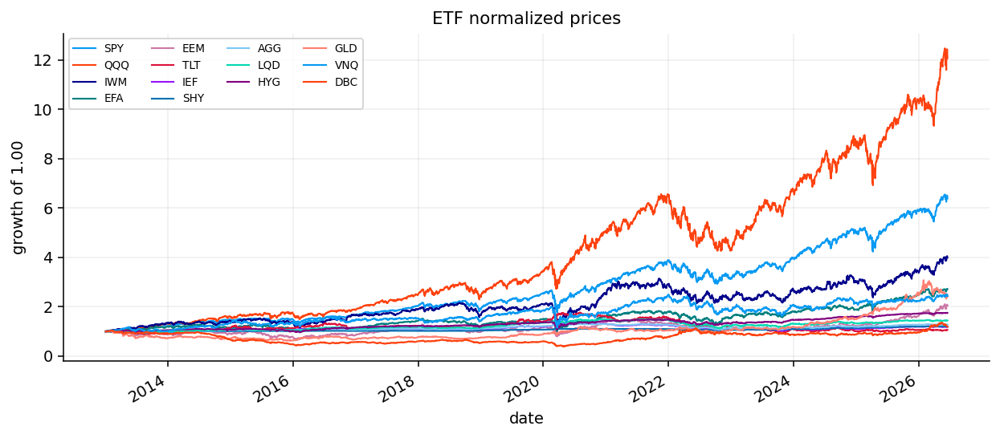
rolling_vol = rolling_volatility(returns, windows=(63,), annualization=annualization)
ax = rolling_vol.plot(figsize=(9, 4), lw=1.0)
ax.set_title("rolling annualized volatility, 63 trading days")
ax.set_ylabel("volatility")
ax.set_xlabel("date")
ax.legend(ncol=4, fontsize=7, loc="best")
plt.tight_layout()
plt.show()
corr = corr_matrix(returns)
fig, ax = plt.subplots(figsize=(8, 8))
ax = plot_corr_heatmap(ax, corr)
ax.set_title("Correlation Heatmap")
plt.tight_layout()
plt.show()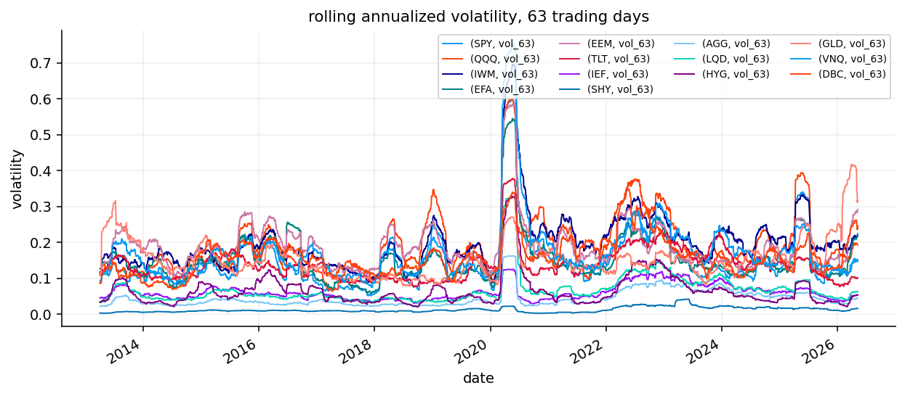
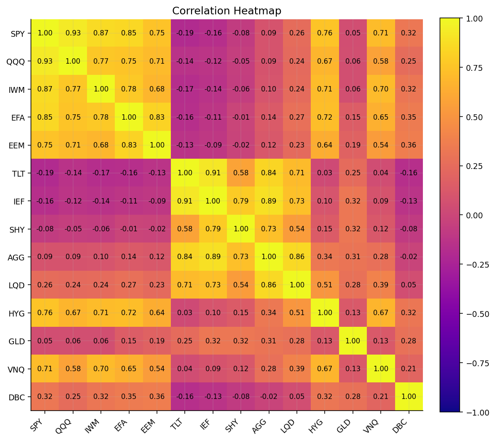
w_min = 0.0
w_max = 0.40
fixed_benchmark_weights = {
"SPY": 0.22, "QQQ": 0.08, "IWM": 0.04, "EFA": 0.09, "EEM": 0.05,
"TLT": 0.08, "IEF": 0.08, "SHY": 0.05, "AGG": 0.10, "LQD": 0.05,
"HYG": 0.04, "GLD": 0.05, "VNQ": 0.04, "DBC": 0.02,
}
asset_cap_map = {
"SPY": 0.35, "QQQ": 0.25, "IWM": 0.15, "EFA": 0.20, "EEM": 0.15,
"TLT": 0.25, "IEF": 0.25, "SHY": 0.20, "AGG": 0.25,
"LQD": 0.15, "HYG": 0.08, "GLD": 0.10, "VNQ": 0.08, "DBC": 0.05,
}
asset_caps = pd.Series({asset: asset_cap_map.get(asset, w_max) for asset in assets}, index=assets, dtype=float)
sleeve_constraints = {
"equity": {"assets": ["SPY", "QQQ", "IWM", "EFA", "EEM"], "min": 0.35, "max": 0.75},
"bonds": {"assets": ["TLT", "IEF", "SHY", "AGG"], "min": 0.15, "max": 0.55},
"credit": {"assets": ["LQD", "HYG"], "min": 0.00, "max": 0.18},
"real_assets": {"assets": ["GLD", "VNQ", "DBC"], "min": 0.00, "max": 0.22},
}
def normalize_box_weights(raw_weights, index, lower=0.0, upper=0.25):
w = pd.Series(raw_weights, index=index, dtype=float).replace([np.inf, -np.inf], np.nan).fillna(0.0)
upper_s = pd.Series(upper, index=index, dtype=float) if np.isscalar(upper) else pd.Series(upper, index=index, dtype=float).reindex(index).fillna(w_max)
w = w.clip(lower=max(lower, 0.0), upper=upper_s)
if w.sum() <= 0:
w = pd.Series(1.0 / len(index), index=index).clip(upper=upper_s)
else:
w = w / w.sum()
if upper_s.sum() < 1.0 - 1e-10:
return pd.Series(1.0 / len(index), index=index)
for _ in range(100):
over = w > upper_s + 1e-12
if not over.any():
break
excess = float((w[over] - upper_s[over]).sum())
w[over] = upper_s[over]
room = (upper_s[~over] - w[~over]).clip(lower=0.0)
if room.sum() <= 1e-12:
break
w.loc[room.index] = w.loc[room.index] + excess * room / room.sum()
w = w.clip(lower=lower, upper=upper_s)
w = w / w.sum() if w.sum() > 0 else pd.Series(1.0 / len(index), index=index)
return w
benchmark_raw = {ticker: fixed_benchmark_weights.get(ticker, 0.0) for ticker in assets}
benchmark_w = normalize_box_weights(benchmark_raw, assets, lower=w_min, upper=asset_caps)
if (benchmark_w > asset_caps + 1e-6).any() or abs(benchmark_w.sum() - 1.0) > 1e-6:
benchmark_w = normalize_box_weights(pd.Series(1.0, index=assets), assets, lower=w_min, upper=asset_caps)
benchmark_table = pd.DataFrame({
"asset": benchmark_w.index,
"sleeve": [sleeve_map.get(ticker, "Other") for ticker in benchmark_w.index],
"benchmark_weight": benchmark_w.values,
"asset_cap": asset_caps.reindex(benchmark_w.index).values,
})
display(benchmark_table.round(4))| asset | sleeve | benchmark_weight | asset_cap | |
|---|---|---|---|---|
| 0 | SPY | US equity | 0.2222 | 0.35 |
| 1 | QQQ | US equity | 0.0808 | 0.25 |
| 2 | IWM | US equity | 0.0404 | 0.15 |
| 3 | EFA | International equity | 0.0909 | 0.20 |
| 4 | EEM | International equity | 0.0505 | 0.15 |
| 5 | TLT | Duration bonds | 0.0808 | 0.25 |
| 6 | IEF | Duration bonds | 0.0808 | 0.25 |
| 7 | SHY | Short bonds | 0.0505 | 0.20 |
| 8 | AGG | Core bonds | 0.1010 | 0.25 |
| 9 | LQD | Credit | 0.0505 | 0.15 |
| 10 | HYG | Credit | 0.0404 | 0.08 |
| 11 | GLD | Real assets | 0.0505 | 0.10 |
| 12 | VNQ | Real assets | 0.0404 | 0.08 |
| 13 | DBC | Commodities | 0.0202 | 0.05 |
fig, ax = plt.subplots(figsize=(8, 3.5))
benchmark_w.sort_values(ascending=False).plot(kind="bar", ax=ax)
ax.set_title("fixed etf benchmark anchor")
ax.set_ylabel("weight")
ax.set_xlabel("asset")
plt.tight_layout()
plt.show()
benchmark_sleeve = benchmark_table.groupby("sleeve", as_index=False)["benchmark_weight"].sum().sort_values("benchmark_weight", ascending=False)
display(benchmark_sleeve.round(4))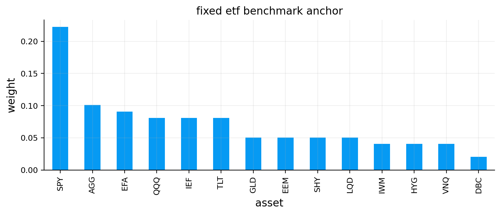
| sleeve | benchmark_weight | |
|---|---|---|
| 7 | US equity | 0.3434 |
| 3 | Duration bonds | 0.1616 |
| 4 | International equity | 0.1414 |
| 1 | Core bonds | 0.1010 |
| 5 | Real assets | 0.0909 |
| 2 | Credit | 0.0909 |
| 6 | Short bonds | 0.0505 |
| 0 | Commodities | 0.0202 |
ewma_lambda = 0.97
delta_fallback = 2.5
delta_min = 0.50
delta_max = 8.00
risk_free_daily = (1.0 + 0.04) ** (1.0 / 252.0) - 1.0
def local_make_psd(matrix, eps=1e-10):
arr = np.asarray(matrix, dtype=float)
arr = 0.5 * (arr + arr.T)
vals, vecs = np.linalg.eigh(arr)
vals = np.maximum(vals, eps)
out = (vecs * vals) @ vecs.T
return 0.5 * (out + out.T)
def make_psd_df(matrix, index):
arr = make_psd(np.asarray(matrix, dtype=float), eps=1e-10)
return pd.DataFrame(arr, index=index, columns=index)
def estimate_ewma_cov_at_date(returns, date, lookback=cov_lookback, lam=ewma_lambda):
date = pd.Timestamp(date)
pos = returns.index.searchsorted(date, side="right") - 1
window = returns.iloc[max(0, pos - lookback + 1):pos + 1].replace([np.inf, -np.inf], np.nan).fillna(0.0)
cov_ann = estimate_covariance(window, method="EWMA", annualization=annualization, ewma_lambda=lam, return_df=True)
return cov_ann
def estimate_delta_at_date(returns, date, benchmark_w, lookback=cov_lookback):
date = pd.Timestamp(date)
pos = returns.index.searchsorted(date, side="right") - 1
window = returns.iloc[max(0, pos - lookback + 1):pos + 1][benchmark_w.index].fillna(0.0)
bench_ret = window @ benchmark_w
ann_return = float(bench_ret.mean() * annualization)
ann_var = float(bench_ret.var(ddof=1) * annualization)
raw_delta = delta_fallback if (not np.isfinite(ann_var) or ann_var <= 1e-10) else (ann_return - risk_free_daily * annualization) / ann_var
if not np.isfinite(raw_delta):
raw_delta = delta_fallback
return float(np.clip(raw_delta, delta_min, delta_max))
cov_by_date = {}
delta_by_date = {}
prior_mu_by_date = {}
for dt in rebalance_dates:
cov_ann = estimate_ewma_cov_at_date(returns, dt)
delta_t = estimate_delta_at_date(returns, dt, benchmark_w)
prior_mu = pd.Series(delta_t * cov_ann.loc[assets, assets].values @ benchmark_w.loc[assets].values, index=assets)
cov_by_date[pd.Timestamp(dt)] = cov_ann
delta_by_date[pd.Timestamp(dt)] = delta_t
prior_mu_by_date[pd.Timestamp(dt)] = prior_mu
print("stored covariance and prior for", len(prior_mu_by_date), "rebalance dates")stored covariance and prior for 125 rebalance datesdelta_series = pd.Series(delta_by_date).sort_index()
ax = delta_series.plot(figsize=(8, 3), lw=1.4)
ax.set_title("rolling benchmark-implied risk aversion")
ax.set_ylabel("delta")
ax.set_xlabel("date")
plt.tight_layout()
plt.show()
latest_rebalance_date = rebalance_dates[-1]
latest_prior = prior_mu_by_date[pd.Timestamp(latest_rebalance_date)].sort_values(ascending=False)
prior_table = pd.DataFrame({"asset": latest_prior.index, "prior_mu": latest_prior.values, "benchmark_weight": benchmark_w.reindex(latest_prior.index).values})
display(prior_table.round(4))
prior_mu_frame = pd.DataFrame(prior_mu_by_date).T.sort_index()
prior_mu_heat = prior_mu_frame.iloc[::max(1, len(prior_mu_frame) // 36)].T
fig, ax = plt.subplots(figsize=(10, 4))
im = ax.imshow(prior_mu_heat, aspect="auto", cmap="coolwarm", vmin=-0.15, vmax=0.15)
ax.set_title("benchmark-implied equilibrium returns")
ax.set_yticks(range(len(prior_mu_heat.index)), prior_mu_heat.index)
ax.set_xticks(range(len(prior_mu_heat.columns)), [d.strftime("%Y-%m") for d in prior_mu_heat.columns], rotation=90, fontsize=7)
fig.colorbar(im, ax=ax, label="annual return")
plt.tight_layout()
plt.show()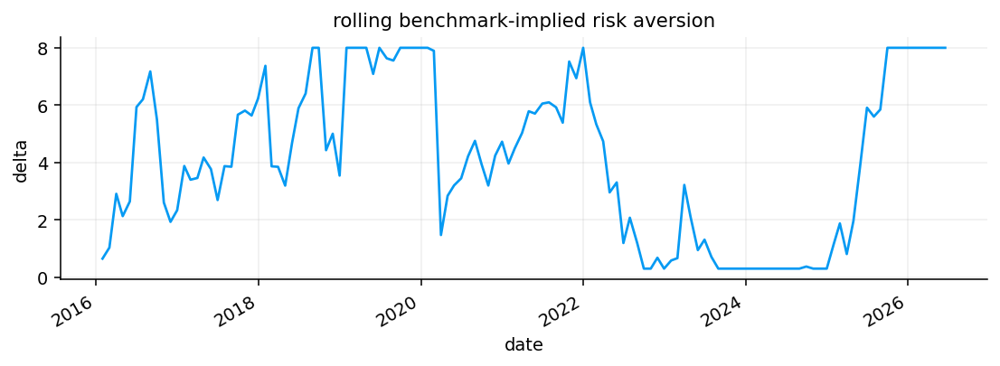
| asset | prior_mu | benchmark_weight | |
|---|---|---|---|
| 0 | EEM | 0.2038 | 0.0505 |
| 1 | EFA | 0.1552 | 0.0909 |
| 2 | GLD | 0.1525 | 0.0505 |
| 3 | IWM | 0.1483 | 0.0404 |
| 4 | QQQ | 0.1370 | 0.0808 |
| 5 | SPY | 0.1109 | 0.2222 |
| 6 | VNQ | 0.0769 | 0.0404 |
| 7 | TLT | 0.0385 | 0.0808 |
| 8 | HYG | 0.0361 | 0.0404 |
| 9 | LQD | 0.0350 | 0.0505 |
| 10 | IEF | 0.0255 | 0.0808 |
| 11 | AGG | 0.0234 | 0.1010 |
| 12 | SHY | 0.0077 | 0.0505 |
| 13 | DBC | -0.0793 | 0.0202 |
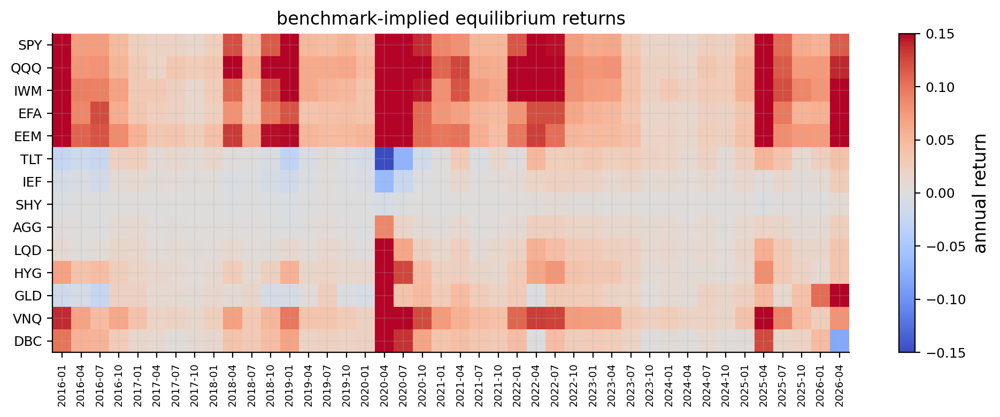
cost_bps = 10.0
bl_mv_lambda = 6.0
def simple_nav(returns):
returns = pd.Series(returns).dropna()
return (1.0 + returns).cumprod()
def simple_drawdown(nav):
nav = pd.Series(nav).dropna()
return nav / nav.cummax() - 1.0
def equal_weight_vector(index):
out = equal_weight(list(index), w_min=w_min, w_max=w_max, long_only=True, as_series=True)
return out.reindex(index).fillna(0.0).to_numpy(dtype=float)
def clean_weight_array(weights, index, previous=None):
if weights is None:
weights = previous if previous is not None else equal_weight_vector(index)
w = np.asarray(weights, dtype=float).reshape(-1)
if len(w) != len(index) or not np.all(np.isfinite(w)):
w = equal_weight_vector(index) if previous is None else np.asarray(previous, dtype=float)
w = np.maximum(w, w_min)
w = np.minimum(w, w_max)
w = w / w.sum() if w.sum() > 1e-12 else equal_weight_vector(index)
for _ in range(10):
over = w > w_max
if not over.any():
break
extra = (w[over] - w_max).sum()
w[over] = w_max
room = np.maximum(w_max - w[~over], 0.0)
if room.sum() <= 1e-12:
break
w[~over] += extra * room / room.sum()
w = np.maximum(w, w_min)
w = np.minimum(w, w_max)
return w / w.sum()def backtest_result_to_dict(name, result, fallback_flags=None):
flags = pd.Series(dtype=float) if fallback_flags is None else pd.Series(fallback_flags).sort_index()
return {
"returns": result.net_returns.rename(name),
"gross_returns": result.gross_returns.rename(name),
"nav": result.net_values.rename(name),
"gross_nav": result.gross_values.rename(name),
"weights": result.weights.copy(),
"turnover": result.turnover.rename(name),
"costs": result.costs.rename(name),
"fallback_flags": flags.rename(name),
"fallback_count": int(flags.sum()) if len(flags) else int(result.fallbacks),
}
def strategic_weight_schedule():
rows = [benchmark_w.reindex(assets).rename(pd.Timestamp(dt)) for dt in rebalance_dates[:-1]]
flags = pd.Series(0.0, index=pd.DatetimeIndex(rebalance_dates[:-1]))
return pd.DataFrame(rows), flags
strategic_weights, strategic_flags = strategic_weight_schedule()
strategic_backtest = run_many_weights_backtests(
{"Strategic Benchmark": strategic_weights},
returns=returns[assets],
cost_bps=cost_bps,
w_min=w_min,
w_max=None,
long_only=True,
normalize=True,
weight_timing="next_close",
)["Strategic Benchmark"]
fixed_universe_by_date = {
pd.Timestamp(dt): {"tickers": list(assets), "avg_dollar_volume": pd.Series(1.0, index=assets)}
for dt in rebalance_dates
}
walkforward_grid = run_walkforward_grid(
returns=returns[assets],
close=close[assets],
rebalance_dates=rebalance_dates,
universe_by_date=fixed_universe_by_date,
cov_lookback=cov_lookback,
mu_lookback=mu_lookback,
min_cov_observations=cov_lookback - 1,
min_mu_observations=mu_lookback - 1,
max_weight=w_max,
min_weight=w_min,
long_only=True,
trading_cost_bps=cost_bps,
turnover_penalty_bps=cost_bps,
fallback="equal",
rf_daily=risk_free_daily,
annualization=annualization,
optimizer_params={
"MV": {"mv_lambda": bl_mv_lambda},
"RidgeMV": {"mv_lambda": bl_mv_lambda},
"FrontierGrid": {"grid_n": 15},
},
)
def select_best_grid_strategy(grid_summary, optimizer):
candidates = grid_summary[grid_summary["Optimizer"].eq(optimizer)].replace([np.inf, -np.inf], np.nan).dropna(subset=["Sharpe"])
if candidates.empty:
raise ValueError(f"no usable {optimizer} strategies in the walk-forward grid")
sort_cols = ["Sharpe"]
ascending = [False]
if "Max Drawdown" in candidates.columns:
sort_cols.append("Max Drawdown")
ascending.append(False)
if "Turnover" in candidates.columns:
sort_cols.append("Turnover")
ascending.append(True)
return str(candidates.sort_values(sort_cols, ascending=ascending).index[0])
best_minvar_name = select_best_grid_strategy(walkforward_grid.results, "MinVar")
best_mv_name = select_best_grid_strategy(walkforward_grid.results, "MV")
baseline_candidates = {
"Strategic Benchmark": backtest_result_to_dict("Strategic Benchmark", strategic_backtest, strategic_flags),
"Equal Weight": backtest_result_to_dict("Equal Weight", walkforward_grid.backtests["EW"]),
best_minvar_name: backtest_result_to_dict(best_minvar_name, walkforward_grid.backtests[best_minvar_name]),
best_mv_name: backtest_result_to_dict(best_mv_name, walkforward_grid.backtests[best_mv_name]),
}
baseline_results = {name: baseline_candidates[name] for name in ["Strategic Benchmark", "Equal Weight", best_minvar_name, best_mv_name]}
print("walk-forward grid strategies:", len(walkforward_grid.results))
print("selected benchmark models:", ["Strategic Benchmark", "Equal Weight", best_minvar_name, best_mv_name])walk-forward grid strategies: 41
selected benchmark models: ['Strategic Benchmark', 'Equal Weight', 'MinVar (OAS)', 'MV (LedoitWolf, BayesStein)']def quick_metrics(ret, nav=None):
ret = pd.Series(ret).dropna()
nav = simple_nav(ret) if nav is None else pd.Series(nav).dropna()
if ret.empty or nav.empty:
return {"cagr": np.nan, "ann_vol": np.nan, "sharpe": np.nan, "max_drawdown": np.nan}
years = max(len(nav) / annualization, 1e-9)
cagr = float(nav.iloc[-1] ** (1.0 / years) - 1.0)
ann_vol = float(ret.std(ddof=1) * math.sqrt(annualization))
sharpe = float((ret.mean() - risk_free_daily) / ret.std(ddof=1) * math.sqrt(annualization)) if ret.std(ddof=1) > 1e-12 else np.nan
return {"cagr": cagr, "ann_vol": ann_vol, "sharpe": sharpe, "max_drawdown": max_drawdown_from_nav(nav)}
top_mv_minvar = walkforward_grid.results[walkforward_grid.results["Optimizer"].isin(["MV", "MinVar"])].sort_values("Sharpe", ascending=False)
candidate_rows = []
for name, result in baseline_candidates.items():
m = quick_metrics(result["returns"], result["nav"])
candidate_rows.append({
"strategy": name,
"cagr": m["cagr"],
"ann_vol": m["ann_vol"],
"sharpe": m["sharpe"],
"max_drawdown": m["max_drawdown"],
"avg_turnover": result["turnover"].mean(),
"fallback_count": result["fallback_count"],
})
baseline_candidate_summary = pd.DataFrame(candidate_rows).sort_values("sharpe", ascending=False)
display(baseline_candidate_summary.round(4))
print("benchmarks use the full library walk-forward grid, then keep only best-Sharpe MV and best-Sharpe MinVar; MaxSharpe is not used as a benchmark")| strategy | cagr | ann_vol | sharpe | max_drawdown | avg_turnover | fallback_count | |
|---|---|---|---|---|---|---|---|
| 0 | Strategic Benchmark | 0.0905 | 0.1011 | 0.5213 | -0.2242 | 0.0144 | 0 |
| 1 | Equal Weight | 0.0848 | 0.0932 | 0.4849 | -0.2041 | 0.0113 | 0 |
| 3 | MV (LedoitWolf, BayesStein) | 0.0730 | 0.0687 | 0.4794 | -0.1181 | 0.0269 | 0 |
| 2 | MinVar (OAS) | 0.0684 | 0.0755 | 0.3776 | -0.1975 | 0.0031 | 0 |
benchmarks use the full library walk-forward grid, then keep only best-Sharpe MV and best-Sharpe MinVar; MaxSharpe is not used as a benchmarkavg_turnover_table = pd.DataFrame({name: result["turnover"].mean() for name, result in baseline_results.items()}, index=["avg_turnover"]).T
display(avg_turnover_table.round(4))
baseline_nav = pd.DataFrame({name: result["nav"] for name, result in baseline_results.items()})
baseline_dd = baseline_nav / baseline_nav.cummax() - 1.0
fig, axes = plt.subplots(2, 1, figsize=(9, 6), sharex=True)
baseline_nav.plot(ax=axes[0], lw=1.3)
axes[0].set_title("library walk-forward benchmark nav")
axes[0].set_ylabel("nav")
baseline_dd.plot(ax=axes[1], lw=1.1)
axes[1].set_title("library walk-forward benchmark drawdowns")
axes[1].set_ylabel("drawdown")
axes[1].set_xlabel("date")
plt.tight_layout(); plt.show()| avg_turnover | |
|---|---|
| Strategic Benchmark | 0.0144 |
| Equal Weight | 0.0113 |
| MinVar (OAS) | 0.0031 |
| MV (LedoitWolf, BayesStein) | 0.0269 |
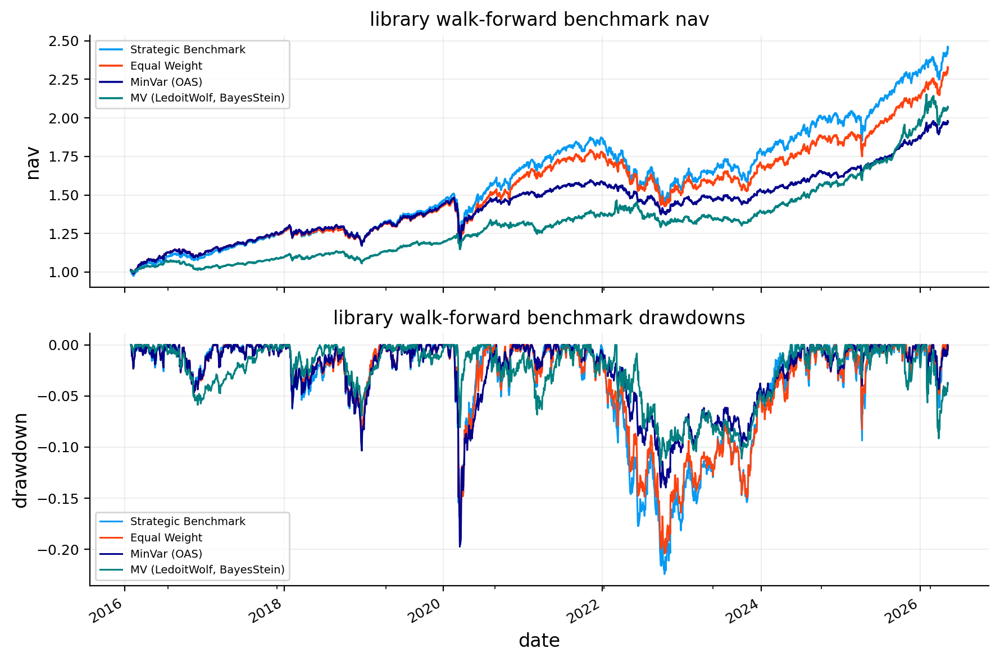
risky_asset_names = ["SPY", "QQQ", "IWM", "EFA", "EEM", "HYG", "VNQ", "DBC"]
cyclical_asset_names = ["IWM", "EEM", "VNQ", "HYG"]
defensive_asset_names = ["TLT", "IEF", "SHY", "AGG", "LQD", "GLD"]
def winsorized_zscore(series):
s = pd.Series(series, dtype=float).replace([np.inf, -np.inf], np.nan)
good = s.dropna()
if good.empty:
return pd.Series(0.0, index=s.index)
clipped = s.clip(good.quantile(0.05), good.quantile(0.95))
std = clipped.std(ddof=0)
if not np.isfinite(std) or std < 1e-12:
return pd.Series(0.0, index=s.index)
return ((clipped - clipped.mean()) / std).fillna(0.0)
def cumulative_return(window):
if window is None or len(window) == 0:
return np.nan
return float((1.0 + window.dropna()).prod() - 1.0)
def trailing_dividend_yield(dividends, close_hist, ticker, lookback=252):
if dividends is None or dividends.empty or ticker not in dividends.columns or ticker not in close_hist.columns:
return np.nan
div_window = dividends[ticker].reindex(close_hist.index).fillna(0.0).tail(lookback)
px = close_hist[ticker].dropna()
if px.empty or px.iloc[-1] <= 0:
return np.nan
return float(div_window.sum() / px.iloc[-1])
def relative_cumulative_return(ret_hist, long_asset, short_asset, lookback=63):
if long_asset not in ret_hist.columns or short_asset not in ret_hist.columns or len(ret_hist) < lookback:
return np.nan
long_ret = cumulative_return(ret_hist[long_asset].tail(lookback))
short_ret = cumulative_return(ret_hist[short_asset].tail(lookback))
return long_ret - short_ret if np.isfinite(long_ret) and np.isfinite(short_ret) else np.nan
def trailing_pair_correlation(ret_hist, asset_a, asset_b, lookback=126):
if asset_a not in ret_hist.columns or asset_b not in ret_hist.columns or len(ret_hist) < lookback:
return np.nan
window = ret_hist[[asset_a, asset_b]].tail(lookback).dropna()
if len(window) < max(30, lookback // 3):
return np.nan
if window[asset_a].std(ddof=1) <= 1e-12 or window[asset_b].std(ddof=1) <= 1e-12:
return np.nan
corr = float(window[asset_a].corr(window[asset_b]))
return corr if np.isfinite(corr) else np.nan
def trailing_average_correlation(ret_hist, names, lookback=126):
names = [x for x in names if x in ret_hist.columns]
if len(names) < 2 or len(ret_hist) < lookback:
return np.nan
window = ret_hist[names].tail(lookback).dropna(how="any")
if len(window) < max(30, lookback // 3):
return np.nan
corr = window.corr().replace([np.inf, -np.inf], np.nan)
vals = corr.where(~np.eye(len(corr), dtype=bool)).stack().dropna()
return float(vals.mean()) if len(vals) else np.nan
def trend_breadth_from_close(close_hist, names, ma_window=200, offset=0):
names = [x for x in names if x in close_hist.columns]
if not names:
return np.nan
hist = close_hist.iloc[:len(close_hist) - offset] if offset and len(close_hist) > offset else close_hist
vals = []
for ticker in names:
px = hist[ticker].dropna()
if len(px) < ma_window:
continue
ma = px.tail(ma_window).mean()
if ma > 0:
vals.append(px.iloc[-1] / ma - 1.0)
return float((pd.Series(vals) > 0).mean()) if vals else np.nan
def compute_asset_signals(close, returns, date, dividends=None):
date = pd.Timestamp(date)
close_pos = close.index.searchsorted(date, side="right") - 1
ret_pos = returns.index.searchsorted(date, side="right") - 1
close_hist = close.iloc[:close_pos + 1]
ret_hist = returns.iloc[:ret_pos + 1]
rows = []
for ticker in returns.columns:
px = close_hist[ticker].dropna() if ticker in close_hist else pd.Series(dtype=float)
rt = ret_hist[ticker].dropna() if ticker in ret_hist else pd.Series(dtype=float)
if len(px) < 200 or len(rt) < 63:
continue
mom_1_0 = cumulative_return(rt.tail(21))
mom_3_0 = cumulative_return(rt.tail(63))
mom_6_1 = cumulative_return(rt.iloc[-147:-21]) if len(rt) >= 147 else np.nan
mom_12_1 = cumulative_return(rt.iloc[-273:-21]) if len(rt) >= 273 else np.nan
trend_50 = float(px.iloc[-1] / px.tail(50).mean() - 1.0) if px.tail(50).mean() > 0 else np.nan
trend_200 = float(px.iloc[-1] / px.tail(200).mean() - 1.0) if px.tail(200).mean() > 0 else np.nan
vol_63 = float(rt.tail(63).std(ddof=1) * math.sqrt(annualization))
high_252 = px.tail(252).max()
dd_252 = float(px.iloc[-1] / high_252 - 1.0) if high_252 > 0 else np.nan
rows.append({
"ticker": ticker,
"sleeve": sleeve_map.get(ticker, "Other"),
"mom_1_0": mom_1_0,
"mom_3_0": mom_3_0,
"mom_6_1": mom_6_1,
"mom_12_1": mom_12_1,
"trend_50": trend_50,
"trend_200": trend_200,
"vol_63": vol_63,
"dd_252": dd_252,
"drawdown_quality": dd_252,
"dividend_yield_252": trailing_dividend_yield(dividends, close_hist, ticker),
})
asset_signal_table = pd.DataFrame(rows).set_index("ticker") if rows else pd.DataFrame()
if asset_signal_table.empty:
return asset_signal_table, {}
asset_signal_table["score"] = (
0.25 * winsorized_zscore(asset_signal_table["mom_3_0"])
+ 0.25 * winsorized_zscore(asset_signal_table["mom_6_1"])
+ 0.15 * winsorized_zscore(asset_signal_table["mom_12_1"])
+ 0.20 * winsorized_zscore(asset_signal_table["trend_200"])
- 0.10 * winsorized_zscore(asset_signal_table["vol_63"])
+ 0.05 * winsorized_zscore(asset_signal_table["drawdown_quality"])
)
scores = asset_signal_table["score"]
risky_available = [ticker for ticker in risky_asset_names if ticker in scores.index]
defensive_available = [ticker for ticker in defensive_asset_names if ticker in scores.index]
cyclical_available = [ticker for ticker in cyclical_asset_names if ticker in scores.index]
risky_trend_breadth = float((asset_signal_table.reindex(risky_available)["trend_200"] > 0).mean()) if risky_available else np.nan
cyclical_trend_breadth = float((asset_signal_table.reindex(cyclical_available)["trend_200"] > 0).mean()) if cyclical_available else np.nan
risky_trend_breadth_3m_ago = trend_breadth_from_close(close_hist, risky_available, offset=63)
cyclical_trend_breadth_3m_ago = trend_breadth_from_close(close_hist, cyclical_available, offset=63)
spy_drawdown_252 = float(asset_signal_table.loc["SPY", "dd_252"]) if "SPY" in asset_signal_table.index else np.nan
spy_vol_63 = float(asset_signal_table.loc["SPY", "vol_63"]) if "SPY" in asset_signal_table.index else np.nan
spy_vol_line = ret_hist["SPY"].rolling(63).std() * math.sqrt(annualization) if "SPY" in ret_hist.columns else pd.Series(dtype=float)
vol_sample = spy_vol_line.dropna().tail(252)
spy_vol_threshold = vol_sample.quantile(0.80) if not vol_sample.empty else np.nan
spy_vol_z = float((spy_vol_63 - vol_sample.mean()) / vol_sample.std(ddof=1)) if len(vol_sample) > 20 and vol_sample.std(ddof=1) > 1e-12 else np.nan
spy_tlt_corr_126 = trailing_pair_correlation(ret_hist, "SPY", "TLT", 126)
spy_ief_corr_126 = trailing_pair_correlation(ret_hist, "SPY", "IEF", 126)
stock_bond_corr_126 = spy_tlt_corr_126 if np.isfinite(spy_tlt_corr_126) else spy_ief_corr_126
market_state = {
"risky_median_score": float(scores.reindex(risky_available).median()) if risky_available else np.nan,
"defensive_median_score": float(scores.reindex(defensive_available).median()) if defensive_available else np.nan,
"risk_on_score": (float(scores.reindex(risky_available).median()) - float(scores.reindex(defensive_available).median())) if risky_available and defensive_available else np.nan,
"risky_trend_breadth": risky_trend_breadth,
"risky_trend_breadth_3m_ago": risky_trend_breadth_3m_ago,
"risky_trend_breadth_change_63": risky_trend_breadth - risky_trend_breadth_3m_ago if np.isfinite(risky_trend_breadth) and np.isfinite(risky_trend_breadth_3m_ago) else np.nan,
"cyclical_trend_breadth": cyclical_trend_breadth,
"cyclical_trend_breadth_3m_ago": cyclical_trend_breadth_3m_ago,
"cyclical_trend_breadth_change_63": cyclical_trend_breadth - cyclical_trend_breadth_3m_ago if np.isfinite(cyclical_trend_breadth) and np.isfinite(cyclical_trend_breadth_3m_ago) else np.nan,
"spy_trend_200": float(asset_signal_table.loc["SPY", "trend_200"]) if "SPY" in asset_signal_table.index else np.nan,
"spy_drawdown_252": spy_drawdown_252,
"spy_vol_63": spy_vol_63,
"spy_vol_z": spy_vol_z,
"equity_stress": bool((np.isfinite(spy_drawdown_252) and spy_drawdown_252 < -0.10) or (np.isfinite(spy_vol_63) and np.isfinite(spy_vol_threshold) and spy_vol_63 > spy_vol_threshold)),
"qqq_spy_63": relative_cumulative_return(ret_hist, "QQQ", "SPY", 63),
"qqq_spy_126": relative_cumulative_return(ret_hist, "QQQ", "SPY", 126),
"hyg_lqd_63": relative_cumulative_return(ret_hist, "HYG", "LQD", 63),
"hyg_lqd_126": relative_cumulative_return(ret_hist, "HYG", "LQD", 126),
"iwm_spy_63": relative_cumulative_return(ret_hist, "IWM", "SPY", 63),
"iwm_spy_126": relative_cumulative_return(ret_hist, "IWM", "SPY", 126),
"eem_efa_63": relative_cumulative_return(ret_hist, "EEM", "EFA", 63),
"dbc_ief_63": relative_cumulative_return(ret_hist, "DBC", "IEF", 63),
"dbc_agg_63": relative_cumulative_return(ret_hist, "DBC", "AGG", 63),
"dollar_trend": float(asset_signal_table.loc["UUP", "trend_200"]) if "UUP" in asset_signal_table.index else np.nan,
"dollar_mom_3_0": float(asset_signal_table.loc["UUP", "mom_3_0"]) if "UUP" in asset_signal_table.index else np.nan,
"spy_tlt_corr_126": spy_tlt_corr_126,
"spy_ief_corr_126": spy_ief_corr_126,
"stock_bond_corr_126": stock_bond_corr_126,
"avg_risky_corr_126": trailing_average_correlation(ret_hist, risky_available, 126),
"avg_risky_corr_63": trailing_average_correlation(ret_hist, risky_available, 63),
"asset_corr_to_spy_126": {asset: trailing_pair_correlation(ret_hist, asset, "SPY", 126) for asset in asset_signal_table.index if asset != "SPY"},
"real_asset_score": float(scores.reindex([x for x in ["GLD", "DBC"] if x in scores.index]).median()) if any(x in scores.index for x in ["GLD", "DBC"]) else np.nan,
"bond_score": float(scores.reindex([x for x in ["TLT", "IEF", "AGG"] if x in scores.index]).median()) if any(x in scores.index for x in ["TLT", "IEF", "AGG"]) else np.nan,
}
return asset_signal_table.sort_values("score", ascending=False), market_statelatest_signal_table, latest_market_state = compute_asset_signals(signal_close, signal_returns, latest_rebalance_date, dividends=dividends_all)
signal_display_cols = ["sleeve", "mom_1_0", "mom_3_0", "mom_6_1", "trend_50", "trend_200", "vol_63", "dd_252", "dividend_yield_252", "score"]
display(latest_signal_table[signal_display_cols].reset_index().round(4))
print("the score ranks assets for relative views; it is not used as a standalone return forecast")
print(latest_market_state)| ticker | sleeve | mom_1_0 | mom_3_0 | mom_6_1 | trend_50 | trend_200 | vol_63 | dd_252 | dividend_yield_252 | score | |
|---|---|---|---|---|---|---|---|---|---|---|---|
| 0 | DBC | Commodities | 0.0743 | 0.2612 | 0.3158 | 0.0908 | 0.2975 | 0.2512 | -0.0093 | 0.0241 | 1.7445 |
| 1 | EEM | International equity | 0.1206 | 0.0851 | 0.0871 | 0.0711 | 0.1634 | 0.2832 | 0.0000 | 0.0189 | 0.8135 |
| 2 | IWM | US equity | 0.1191 | 0.0775 | 0.0367 | 0.0758 | 0.1299 | 0.2157 | 0.0000 | 0.0091 | 0.5005 |
| 3 | QQQ | US equity | 0.1538 | 0.0854 | -0.0243 | 0.1009 | 0.1182 | 0.1969 | 0.0000 | 0.0042 | 0.3587 |
| 4 | GLD | Real assets | -0.0334 | -0.0489 | 0.2317 | -0.0470 | 0.0808 | 0.3438 | -0.1466 | 0.0000 | 0.2701 |
| 5 | SPY | US equity | 0.0998 | 0.0443 | -0.0108 | 0.0606 | 0.0789 | 0.1514 | 0.0000 | 0.0102 | -0.0112 |
| 6 | EFA | International equity | 0.0354 | 0.0135 | 0.0753 | 0.0192 | 0.0708 | 0.2131 | -0.0337 | 0.0318 | -0.0266 |
| 7 | VNQ | Real assets | 0.0791 | 0.0692 | -0.0069 | 0.0374 | 0.0711 | 0.1477 | -0.0100 | 0.0363 | -0.0835 |
| 8 | UUP | Dollar | -0.0115 | 0.0209 | 0.0424 | -0.0037 | 0.0138 | 0.0626 | -0.0204 | 0.0338 | -0.3393 |
| 9 | HYG | Credit | 0.0140 | 0.0068 | 0.0112 | 0.0091 | 0.0200 | 0.0524 | -0.0021 | 0.0635 | -0.3650 |
| 10 | SHY | Short bonds | 0.0021 | 0.0027 | 0.0134 | 0.0009 | 0.0092 | 0.0158 | -0.0026 | 0.0402 | -0.4372 |
| 11 | AGG | Core bonds | 0.0023 | 0.0007 | 0.0104 | -0.0022 | 0.0071 | 0.0433 | -0.0150 | 0.0429 | -0.4939 |
| 12 | IEF | Duration bonds | 0.0001 | 0.0002 | 0.0071 | -0.0058 | 0.0014 | 0.0533 | -0.0239 | 0.0419 | -0.5639 |
| 13 | LQD | Credit | 0.0034 | -0.0028 | 0.0006 | -0.0024 | 0.0029 | 0.0624 | -0.0167 | 0.0495 | -0.5761 |
| 14 | TLT | Duration bonds | -0.0039 | -0.0028 | -0.0097 | -0.0136 | -0.0102 | 0.0997 | -0.0469 | 0.0494 | -0.7906 |
the score ranks assets for relative views; it is not used as a standalone return forecast
{'risky_median_score': 0.17374867205248162, 'defensive_median_score': -0.5288770319735261, 'risk_on_score': 0.7026257040260078, 'risky_trend_breadth': 1.0, 'risky_trend_breadth_3m_ago': 1.0, 'risky_trend_breadth_change_63': 0.0, 'cyclical_trend_breadth': 1.0, 'cyclical_trend_breadth_3m_ago': 1.0, 'cyclical_trend_breadth_change_63': 0.0, 'spy_trend_200': 0.07891809711481845, 'spy_drawdown_252': 0.0, 'spy_vol_63': 0.15136413478464925, 'spy_vol_z': -0.07002872545379353, 'equity_stress': False, 'qqq_spy_63': 0.0411448064245048, 'qqq_spy_126': 0.008717305622156335, 'hyg_lqd_63': 0.009586676538705818, 'hyg_lqd_126': 0.03045734135686773, 'iwm_spy_63': 0.03322394644058324, 'iwm_spy_126': 0.08287933191322816, 'eem_efa_63': 0.07160985901167893, 'dbc_ief_63': 0.2609741837498576, 'dbc_agg_63': 0.26040566991034075, 'dollar_trend': 0.013843082442195564, 'dollar_mom_3_0': 0.020856590614012127, 'spy_tlt_corr_126': 0.251290613684761, 'spy_ief_corr_126': 0.24556989667890614, 'stock_bond_corr_126': 0.251290613684761, 'avg_risky_corr_126': 0.46486969688624863, 'avg_risky_corr_63': 0.45961176782356145, 'asset_corr_to_spy_126': {'QQQ': 0.9554385489129761, 'IWM': 0.8554259266765418, 'EFA': 0.8011656772109861, 'EEM': 0.7896244037872628, 'TLT': 0.251290613684761, 'IEF': 0.24556989667890614, 'SHY': 0.2160578401731979, 'AGG': 0.38527586993734225, 'LQD': 0.47624271755361364, 'HYG': 0.7741237137231219, 'GLD': 0.28029935563907565, 'VNQ': 0.4788769213861118, 'DBC': -0.18854881080204683, 'UUP': -0.3224232335576605}, 'real_asset_score': 1.007280659722617, 'bond_score': -0.5638790122699242}family_q_caps = {
"liquid_leadership": 0.042,
"dual_momentum": 0.022,
"inflation_rotation": 0.024,
"risk_adj_momentum": 0.014,
"credit_switch": 0.010,
"reflation_breadth": 0.042,
"growth_duration": 0.032,
"correlation_stress": 0.024,
"international_rotation": 0.018,
"duration_quality": 0.010,
}
family_display_names = {
"liquid_leadership": "Liquidity leadership",
"dual_momentum": "Dual momentum",
"inflation_rotation": "Inflation rotation",
"risk_adj_momentum": "Risk-adjusted momentum",
"credit_switch": "Credit switch",
"reflation_breadth": "Reflation breadth",
"growth_duration": "Growth-duration barbell",
"correlation_stress": "Correlation stress",
"international_rotation": "International rotation",
"duration_quality": "Duration quality",
}
view_entry_z = 0.50
q_strength_scale = 1.25
max_active_views = len(family_q_caps)
def clean_diag_value(value):
if isinstance(value, (np.floating, np.integer)):
return float(value)
if isinstance(value, pd.Timestamp):
return value.strftime("%Y-%m-%d")
if isinstance(value, (list, tuple)):
return [clean_diag_value(x) for x in value]
if isinstance(value, dict):
return {k: clean_diag_value(v) for k, v in value.items()}
return value
def p_series_from_assets(long_assets, short_assets, asset_list=assets):
p = pd.Series(0.0, index=asset_list, dtype=float)
long_assets = [x for x in long_assets if x in p.index]
short_assets = [x for x in short_assets if x in p.index]
if not long_assets or not short_assets:
return None
p.loc[long_assets] = 1.0 / len(long_assets)
p.loc[short_assets] = -1.0 / len(short_assets)
return p
def make_view_row(view_family, view_name, economic_label, long_assets, short_assets, view_strength, risk_orientation, source="family_rule", priority=0.50, diagnostics=None, confluence_score=None, view_state=None):
long_assets = list(dict.fromkeys([x for x in long_assets if x in assets]))
short_assets = list(dict.fromkeys([x for x in short_assets if x in assets and x not in long_assets]))
if view_family not in family_q_caps or not long_assets or not short_assets or not np.isfinite(view_strength):
return None
view_strength = float(abs(view_strength))
if view_strength <= 1e-8:
return None
cap = family_q_caps[view_family]
q_tilt = float(cap * math.tanh(view_strength / q_strength_scale))
p = p_series_from_assets(long_assets, short_assets)
if p is None:
return None
confluence = float(np.clip(confluence_score if confluence_score is not None else view_strength / 3.0, 0.0, 1.0))
display_name = family_display_names.get(view_family, view_family.replace("_", " ").title())
state = view_state or risk_orientation
return {
"view_family": view_family,
"family_name": display_name,
"family_display_name": display_name,
"view_name": view_name,
"view_side": state,
"view_state": state,
"economic_label": economic_label,
"long_assets": long_assets,
"short_assets": short_assets,
"signal_value": view_strength,
"raw_strength": view_strength,
"view_strength": view_strength,
"confluence_score": confluence,
"q_tilt": q_tilt,
"q": q_tilt,
"confidence": np.nan,
"risk_orientation": risk_orientation,
"source": source,
"priority": float(np.clip(priority, 0.0, 1.0)),
"economic_priority": float(np.clip(priority, 0.0, 1.0)),
"diagnostics": clean_diag_value(diagnostics or {}),
"p_vector": p.round(6).to_dict(),
}
def available(signal_table, names):
return [x for x in names if x in signal_table.index]
def metric(signal_table, asset, col, default=np.nan):
if asset not in signal_table.index or col not in signal_table.columns:
return default
val = signal_table.loc[asset, col]
return float(val) if np.isfinite(val) else default
def state_value(market_state, key, default=np.nan):
val = market_state.get(key, default)
try:
return float(val) if np.isfinite(val) else default
except Exception:
return default
def score_value(signal_table, asset):
return metric(signal_table, asset, "score")
def median_score(signal_table, names):
names = available(signal_table, names)
return float(signal_table.reindex(names)["score"].median()) if names else np.nan
def robust_mean(values):
vals = [float(x) for x in values if np.isfinite(x)]
return float(np.mean(vals)) if vals else np.nan
def clipped(value, scale=1.0, lower=-2.0, upper=2.0):
if not np.isfinite(value) or scale == 0:
return np.nan
return float(np.clip(value / scale, lower, upper))
def best_assets(signal_table, candidates, n=1, require_positive=False):
names = available(signal_table, candidates)
if not names:
return []
frame = signal_table.reindex(names).sort_values("score", ascending=False)
if require_positive:
frame = frame[(frame["score"] > 0) | (frame["trend_200"] > 0) | (frame["mom_3_0"] > 0)]
return list(frame.head(n).index)
def worst_assets(signal_table, candidates, n=1, require_weak=False):
names = available(signal_table, candidates)
if not names:
return []
frame = signal_table.reindex(names).sort_values("score", ascending=True)
if require_weak:
frame = frame[(frame["score"] < 0) | (frame["trend_200"] < 0) | (frame["mom_3_0"] < 0)]
return list(frame.head(n).index)
def sleeve_limited_assets(signal_table, candidates, n=3, side="long", per_sleeve=1):
names = available(signal_table, candidates)
if not names:
return []
frame = signal_table.reindex(names).sort_values("score", ascending=(side == "short"))
picks, sleeve_counts = [], {}
for asset, row in frame.iterrows():
sleeve = row.get("sleeve", sleeve_map.get(asset, "Other"))
if sleeve_counts.get(sleeve, 0) >= per_sleeve:
continue
if side == "long" and row.get("trend_200", 0.0) <= 0 and row.get("mom_3_0", 0.0) <= 0:
continue
if side == "short" and row.get("trend_200", 0.0) >= 0 and row.get("mom_3_0", 0.0) >= 0:
continue
picks.append(asset)
sleeve_counts[sleeve] = sleeve_counts.get(sleeve, 0) + 1
if len(picks) >= n:
break
return picks
def cov_corr_to_spy(cov_ann, asset):
if cov_ann is None or asset not in cov_ann.index or "SPY" not in cov_ann.index:
return np.nan
var_a = float(cov_ann.loc[asset, asset])
var_s = float(cov_ann.loc["SPY", "SPY"])
if var_a <= 1e-12 or var_s <= 1e-12:
return np.nan
corr = float(cov_ann.loc[asset, "SPY"] / math.sqrt(var_a * var_s))
return corr if np.isfinite(corr) else np.nan
def beta_to_basket(cov_ann, asset, basket):
basket = [x for x in basket if cov_ann is not None and x in cov_ann.index]
if cov_ann is None or asset not in cov_ann.index or not basket:
return np.nan
b = pd.Series(1.0 / len(basket), index=basket)
cov_ab = float(cov_ann.loc[asset, basket] @ b)
var_b = float(b.values @ cov_ann.loc[basket, basket].values @ b.values)
return cov_ab / var_b if np.isfinite(var_b) and var_b > 1e-12 else np.nan
def add_row(rows, row):
if row is not None:
rows.append(row)
def make_high_level_views(signal_table, market_state, cov_ann=None):
rows = []
if signal_table.empty:
return rows
spy_trend = metric(signal_table, "SPY", "trend_200")
qqq_trend = metric(signal_table, "QQQ", "trend_200")
spy_drawdown = state_value(market_state, "spy_drawdown_252", 0.0)
spy_vol_z = state_value(market_state, "spy_vol_z", 0.0)
risky_breadth = state_value(market_state, "risky_trend_breadth")
risky_breadth_change = state_value(market_state, "risky_trend_breadth_change_63", 0.0)
cyc_breadth = state_value(market_state, "cyclical_trend_breadth")
cyc_breadth_change = state_value(market_state, "cyclical_trend_breadth_change_63", 0.0)
qqq_spy = state_value(market_state, "qqq_spy_63", 0.0)
hyg_lqd = state_value(market_state, "hyg_lqd_63", 0.0)
iwm_spy = state_value(market_state, "iwm_spy_63", 0.0)
eem_efa = state_value(market_state, "eem_efa_63", 0.0)
dbc_ief = state_value(market_state, "dbc_ief_63", 0.0)
dbc_agg = state_value(market_state, "dbc_agg_63", 0.0)
stock_bond_corr = state_value(market_state, "stock_bond_corr_126")
avg_risky_corr = state_value(market_state, "avg_risky_corr_126")
candidates = [asset for asset in assets if asset in signal_table.index]
leaders = best_assets(signal_table, ["SPY", "QQQ"], n=2, require_positive=True)
weak_cyclicals = worst_assets(signal_table, ["IWM", "EEM", "VNQ", "HYG"], n=3, require_weak=True)
if len(weak_cyclicals) < 2:
weak_cyclicals = worst_assets(signal_table, ["IWM", "EEM", "VNQ", "HYG"], n=3)
reflation_confirmed = (
iwm_spy > 0.015 and hyg_lqd > 0.010 and np.isfinite(cyc_breadth) and cyc_breadth >= 0.75
and (metric(signal_table, "DBC", "trend_200") > 0 or metric(signal_table, "VNQ", "trend_200") > 0)
)
leadership_spread = median_score(signal_table, leaders) - median_score(signal_table, weak_cyclicals) if leaders and weak_cyclicals else np.nan
liquid_strength = robust_mean([clipped(max(spy_trend, qqq_trend), 0.06), clipped(qqq_spy, 0.035), clipped(leadership_spread, 1.25), clipped(0.55 - cyc_breadth, 0.25), clipped(-cyc_breadth_change, 0.25)])
if leaders and weak_cyclicals and max(spy_trend, qqq_trend) > 0 and liquid_strength > 0.25 and not reflation_confirmed:
add_row(rows, make_view_row("liquid_leadership", "Liquidity leadership", "liquid US large-cap and growth leadership versus weak cyclicals", leaders, weak_cyclicals, liquid_strength, "risk_on", priority=0.90, diagnostics={"leadership_spread": leadership_spread, "cyclical_breadth": cyc_breadth, "cyclical_breadth_change_63": cyc_breadth_change, "qqq_spy_63": qqq_spy, "reflation_confirmed_filter": reflation_confirmed}, confluence_score=min(1.0, max(liquid_strength, 0.0) / 2.0), view_state="narrow_leadership"))
dual_table = signal_table.reindex(candidates).copy()
dual_table["score"] = 0.40 * winsorized_zscore(dual_table["mom_6_1"]) + 0.25 * winsorized_zscore(dual_table["mom_12_1"]) + 0.20 * winsorized_zscore(dual_table["mom_3_0"]) + 0.15 * winsorized_zscore(dual_table["trend_200"])
dual_dispersion = float(dual_table["score"].quantile(0.80) - dual_table["score"].quantile(0.20)) if len(dual_table) >= 6 else np.nan
dual_longs = sleeve_limited_assets(dual_table, candidates, n=4, side="long", per_sleeve=1)
if len(dual_longs) < 3:
dual_longs = list(dual_table[(dual_table["trend_200"] > 0) | (dual_table["mom_3_0"] > 0)].sort_values("score", ascending=False).head(4).index)
dual_shorts = sleeve_limited_assets(dual_table, candidates, n=4, side="short", per_sleeve=1)
if len(dual_shorts) < 3:
dual_shorts = list(dual_table[(dual_table["trend_200"] < 0) | (dual_table["mom_3_0"] < 0)].sort_values("score").head(4).index)
dual_spread = median_score(dual_table, dual_longs) - median_score(dual_table, dual_shorts) if dual_longs and dual_shorts else np.nan
if dual_longs and dual_shorts and np.isfinite(dual_dispersion) and dual_dispersion > 0.65 and dual_spread > 0.50:
add_row(rows, make_view_row("dual_momentum", "Dual momentum", "diversified cross-asset momentum with positive absolute trend preference", dual_longs, dual_shorts, max(dual_spread, dual_dispersion), "neutral", priority=0.85, diagnostics={"dual_dispersion": dual_dispersion, "long_scores": dual_table.reindex(dual_longs)["score"].to_dict(), "short_scores": dual_table.reindex(dual_shorts)["score"].to_dict()}, confluence_score=min(1.0, max(dual_spread, 0.0) / 2.5), view_state="trend_following"))
commodity_score = median_score(signal_table, ["DBC", "GLD"])
duration_score = median_score(signal_table, ["TLT", "IEF", "AGG"])
commodity_confirmed = any(metric(signal_table, asset, "trend_200") > 0 and metric(signal_table, asset, "mom_3_0") > 0 for asset in ["DBC", "GLD"] if asset in signal_table.index)
duration_weak = any(metric(signal_table, asset, "trend_200") < 0 for asset in ["TLT", "IEF", "AGG"] if asset in signal_table.index)
inflation_strength = robust_mean([clipped(max(dbc_ief, dbc_agg), 0.035), clipped(commodity_score - duration_score, 1.25), clipped(-hyg_lqd, 0.04)])
if commodity_confirmed and duration_weak and hyg_lqd < 0.020 and inflation_strength > 0.20:
longs = best_assets(signal_table, ["DBC", "GLD"], n=2, require_positive=True)
shorts = worst_assets(signal_table, ["TLT", "IEF", "AGG", "LQD", "HYG", "VNQ"], n=4, require_weak=True)
if len(shorts) < 3:
shorts = worst_assets(signal_table, ["TLT", "IEF", "AGG", "LQD"], n=3)
add_row(rows, make_view_row("inflation_rotation", "Inflation rotation", "commodities and gold versus duration and credit when inflation pressure dominates", longs, shorts, max(inflation_strength, commodity_score - duration_score), "neutral", priority=0.80, diagnostics={"commodity_score": commodity_score, "duration_score": duration_score, "dbc_ief_63": dbc_ief, "dbc_agg_63": dbc_agg, "hyg_lqd_63": hyg_lqd}, confluence_score=min(1.0, max(inflation_strength, 0.0) / 2.0), view_state="inflation_shock"))
risk_adj_table = signal_table.reindex(candidates).copy()
risk_adj_table["score"] = 0.30 * winsorized_zscore(risk_adj_table["mom_6_1"]) + 0.25 * winsorized_zscore(risk_adj_table["mom_12_1"]) + 0.15 * winsorized_zscore(risk_adj_table["mom_3_0"]) + 0.15 * winsorized_zscore(risk_adj_table["trend_200"]) - 0.20 * winsorized_zscore(risk_adj_table["vol_63"]) + 0.15 * winsorized_zscore(risk_adj_table["drawdown_quality"])
risk_adj_dispersion = float(risk_adj_table["score"].quantile(0.80) - risk_adj_table["score"].quantile(0.20)) if len(risk_adj_table) >= 6 else np.nan
ra_longs = list(risk_adj_table[(risk_adj_table["trend_200"] > 0) | (risk_adj_table["mom_3_0"] > 0)].sort_values("score", ascending=False).head(4).index)
if len(ra_longs) < 3:
ra_longs = list(risk_adj_table.sort_values("score", ascending=False).head(4).index)
weak_mask = (risk_adj_table["trend_200"] < 0) | (risk_adj_table["vol_63"] > risk_adj_table["vol_63"].median()) | (risk_adj_table["dd_252"] < risk_adj_table["dd_252"].median())
ra_shorts = list(risk_adj_table[weak_mask].sort_values("score").head(4).index)
if len(ra_shorts) < 3:
ra_shorts = list(risk_adj_table.sort_values("score").head(4).index)
ra_spread = median_score(risk_adj_table, ra_longs) - median_score(risk_adj_table, ra_shorts) if ra_longs and ra_shorts else np.nan
if ra_longs and ra_shorts and np.isfinite(risk_adj_dispersion) and risk_adj_dispersion > 0.55 and ra_spread > 0.50:
add_row(rows, make_view_row("risk_adj_momentum", "Risk-adjusted momentum", "momentum adjusted for volatility and drawdown quality", ra_longs, ra_shorts, max(ra_spread, risk_adj_dispersion), "neutral", priority=1.00, diagnostics={"risk_adj_dispersion": risk_adj_dispersion, "long_scores": risk_adj_table.reindex(ra_longs)["score"].to_dict(), "short_scores": risk_adj_table.reindex(ra_shorts)["score"].to_dict()}, confluence_score=min(1.0, max(ra_spread, 0.0) / 2.5), view_state="quality_momentum"))
credit_risk_on = spy_trend > 0 and hyg_lqd > 0.010 and np.isfinite(risky_breadth) and risky_breadth >= 0.55
credit_risk_off = (spy_trend < 0 or spy_drawdown < -0.08 or spy_vol_z > 0.80) and hyg_lqd < -0.005 and (not np.isfinite(risky_breadth) or risky_breadth < 0.55)
if credit_risk_on:
longs = [x for x in ["SPY", "QQQ", "HYG"] if x in signal_table.index]
if iwm_spy > 0 and metric(signal_table, "IWM", "trend_200") > 0:
longs.append("IWM")
shorts = available(signal_table, ["SHY", "IEF", "AGG"])
strength = robust_mean([clipped(spy_trend, 0.06), clipped(hyg_lqd, 0.025), clipped(risky_breadth - 0.50, 0.30)])
add_row(rows, make_view_row("credit_switch", "Credit switch: risk-on", "credit confirmation supports equity and high-yield risk", longs, shorts, strength, "risk_on", priority=0.88, diagnostics={"spy_trend_200": spy_trend, "hyg_lqd_63": hyg_lqd, "risky_breadth": risky_breadth}, confluence_score=min(1.0, max(strength, 0.0) / 2.0), view_state="risk_on"))
elif credit_risk_off:
longs = best_assets(signal_table, ["SHY", "IEF", "AGG", "GLD"], n=4)
shorts = worst_assets(signal_table, ["HYG", "IWM", "EEM", "VNQ"], n=4, require_weak=True)
if len(shorts) < 3:
shorts = worst_assets(signal_table, ["HYG", "IWM", "EEM", "VNQ"], n=4)
strength = robust_mean([clipped(-spy_trend, 0.06), clipped(-hyg_lqd, 0.025), clipped(0.55 - risky_breadth, 0.30), clipped(-spy_drawdown, 0.15)])
add_row(rows, make_view_row("credit_switch", "Credit switch: risk-off", "credit rejection shifts toward short-duration, core bonds, and gold", longs, shorts, strength, "risk_off", priority=0.88, diagnostics={"spy_trend_200": spy_trend, "spy_drawdown_252": spy_drawdown, "hyg_lqd_63": hyg_lqd, "risky_breadth": risky_breadth}, confluence_score=min(1.0, max(strength, 0.0) / 2.0), view_state="risk_off"))
dollar_trend = state_value(market_state, "dollar_trend", 0.0)
dollar_mom = state_value(market_state, "dollar_mom_3_0", 0.0)
eem_trend = metric(signal_table, "EEM", "trend_200")
efa_trend = metric(signal_table, "EFA", "trend_200")
eem_efta_score_spread = score_value(signal_table, "EEM") - score_value(signal_table, "EFA")
eem_leadership = eem_efa > 0.040 and dollar_trend < 0.040 and dollar_mom < 0.030 and eem_trend > -0.02
efa_leadership = eem_efa < -0.020 and dollar_trend > 0.020 and dollar_mom > 0.0
if eem_leadership:
strength = robust_mean([clipped(eem_efa, 0.050), clipped(0.040 - dollar_trend, 0.040), clipped(eem_efta_score_spread, 1.00), clipped(eem_trend, 0.08)])
add_row(rows, make_view_row(
"international_rotation", "International rotation", "EM leadership over developed ex-US when EEM relative strength is strong and the dollar is not a headwind",
["EEM"], ["EFA"], strength, "risk_on", priority=0.72,
diagnostics={"eem_efa_63": eem_efa, "dollar_trend": dollar_trend, "dollar_mom_3_0": dollar_mom, "eem_trend_200": eem_trend, "efa_trend_200": efa_trend, "score_spread": eem_efta_score_spread},
confluence_score=min(1.0, max(strength, 0.0) / 2.0), view_state="em_leadership"))
elif efa_leadership:
strength = robust_mean([clipped(-eem_efa, 0.040), clipped(dollar_trend, 0.050), clipped(dollar_mom, 0.030), clipped(-eem_efta_score_spread, 1.00)])
add_row(rows, make_view_row(
"international_rotation", "International rotation", "developed ex-US leadership over EM when EEM is weak and dollar pressure is strong",
["EFA"], ["EEM"], strength, "risk_off", priority=0.72,
diagnostics={"eem_efa_63": eem_efa, "dollar_trend": dollar_trend, "dollar_mom_3_0": dollar_mom, "eem_trend_200": eem_trend, "efa_trend_200": efa_trend, "score_spread": eem_efta_score_spread},
confluence_score=min(1.0, max(strength, 0.0) / 2.0), view_state="developed_ex_us_leadership"))
reflation_active = iwm_spy > 0.010 and hyg_lqd > 0.008 and np.isfinite(risky_breadth) and risky_breadth >= 0.55 and (metric(signal_table, "DBC", "trend_200") > 0 or metric(signal_table, "VNQ", "trend_200") > 0) and spy_drawdown > -0.12
if reflation_active:
reflation_longs = [x for x in ["IWM", "HYG", "VNQ", "DBC", "EEM"] if x in signal_table.index and (metric(signal_table, x, "trend_200") > 0 or metric(signal_table, x, "mom_3_0") > 0)]
if len(reflation_longs) < 3:
reflation_longs = best_assets(signal_table, ["IWM", "HYG", "VNQ", "DBC", "EEM"], n=4, require_positive=True)
reflation_shorts = available(signal_table, ["SHY", "IEF", "AGG", "GLD"])
reflation_strength = robust_mean([clipped(iwm_spy, 0.030), clipped(hyg_lqd, 0.020), clipped(risky_breadth - 0.50, 0.25), clipped(max(metric(signal_table, "DBC", "trend_200"), metric(signal_table, "VNQ", "trend_200")), 0.08)])
add_row(rows, make_view_row("reflation_breadth", "Reflation breadth", "cyclicals, credit, real assets, and EM broaden versus defensive ballast", reflation_longs, reflation_shorts, reflation_strength, "risk_on", priority=0.78, diagnostics={"iwm_spy_63": iwm_spy, "hyg_lqd_63": hyg_lqd, "risky_breadth": risky_breadth, "spy_drawdown_252": spy_drawdown}, confluence_score=min(1.0, max(reflation_strength, 0.0) / 2.0), view_state="broad_reflation"))
duration_candidates = [x for x in ["IEF", "AGG", "TLT"] if x in signal_table.index and (metric(signal_table, x, "trend_200") > 0 or metric(signal_table, x, "trend_50") > 0)]
dbc_weak = metric(signal_table, "DBC", "trend_200") < 0 or metric(signal_table, "DBC", "mom_3_0") < 0
growth_duration_active = qqq_spy > 0.005 and duration_candidates and dbc_weak and ((not np.isfinite(stock_bond_corr)) or stock_bond_corr < 0.25) and hyg_lqd > -0.040
if growth_duration_active:
longs = [x for x in ["QQQ", "SPY"] if x in signal_table.index and (metric(signal_table, x, "trend_200") > 0 or metric(signal_table, x, "mom_3_0") > 0)] + duration_candidates[:3]
shorts = worst_assets(signal_table, ["DBC", "HYG", "IWM", "VNQ"], n=4, require_weak=True)
if len(shorts) < 2:
shorts = worst_assets(signal_table, ["DBC", "HYG", "IWM", "VNQ"], n=3)
gd_strength = robust_mean([clipped(qqq_spy, 0.030), clipped(median_score(signal_table, duration_candidates), 1.00), clipped(-metric(signal_table, "DBC", "trend_200"), 0.08), clipped(0.25 - stock_bond_corr, 0.35) if np.isfinite(stock_bond_corr) else np.nan])
add_row(rows, make_view_row("growth_duration", "Growth-duration barbell", "growth equities and duration benefit when commodity pressure fades and bonds hedge", longs, shorts, gd_strength, "risk_on", priority=0.75, diagnostics={"qqq_spy_63": qqq_spy, "duration_candidates": duration_candidates, "dbc_trend_200": metric(signal_table, "DBC", "trend_200"), "stock_bond_corr_126": stock_bond_corr, "hyg_lqd_63": hyg_lqd}, confluence_score=min(1.0, max(gd_strength, 0.0) / 2.0), view_state="soft_landing"))
duration_not_protective = (np.isfinite(stock_bond_corr) and stock_bond_corr > 0.15) or median_score(signal_table, ["TLT", "IEF", "AGG"]) < 0
if np.isfinite(avg_risky_corr) and avg_risky_corr > 0.55 and spy_vol_z > 0.50 and (not np.isfinite(risky_breadth) or risky_breadth < 0.55) and duration_not_protective:
longs = [x for x in ["SHY", "GLD"] if x in signal_table.index]
if metric(signal_table, "IEF", "trend_200") > 0:
longs.append("IEF")
shorts = worst_assets(signal_table, ["IWM", "EEM", "HYG", "VNQ", "DBC", "SPY", "QQQ"], n=5, require_weak=True)
if len(shorts) < 3:
shorts = worst_assets(signal_table, ["IWM", "EEM", "HYG", "VNQ", "DBC"], n=5)
corr_strength = robust_mean([clipped(avg_risky_corr - 0.45, 0.25), clipped(spy_vol_z, 1.5), clipped(0.55 - risky_breadth, 0.30), clipped(stock_bond_corr, 0.35) if np.isfinite(stock_bond_corr) else np.nan])
add_row(rows, make_view_row("correlation_stress", "Correlation stress", "protect against rising risky correlations and weak diversification", longs, shorts, corr_strength, "risk_off", priority=0.72, diagnostics={"avg_risky_corr_126": avg_risky_corr, "spy_vol_z": spy_vol_z, "risky_breadth": risky_breadth, "stock_bond_corr_126": stock_bond_corr, "duration_not_protective": duration_not_protective}, confluence_score=min(1.0, max(corr_strength, 0.0) / 2.0), view_state="correlation_breakdown"))
tlt_trend = metric(signal_table, "TLT", "trend_200")
ief_trend = metric(signal_table, "IEF", "trend_200")
agg_trend = metric(signal_table, "AGG", "trend_200")
duration_pair_score = median_score(signal_table, ["TLT", "IEF"])
quality_score = median_score(signal_table, ["SHY", "AGG", "IEF"])
duration_weak = (tlt_trend < -0.015 or duration_pair_score < -0.20) and np.isfinite(stock_bond_corr) and stock_bond_corr > 0.10
duration_helpful = (tlt_trend > 0.015 or ief_trend > 0.010 or duration_pair_score > 0.20) and ((not np.isfinite(stock_bond_corr)) or stock_bond_corr < 0.05)
if duration_weak:
longs = [x for x in ["SHY", "AGG"] if x in signal_table.index]
if "IEF" in signal_table.index and ief_trend > -0.010:
longs.append("IEF")
shorts = ["TLT"] if "TLT" in signal_table.index else []
if "HYG" in signal_table.index and (hyg_lqd < 0.0 or metric(signal_table, "HYG", "trend_200") < 0):
shorts.append("HYG")
strength = robust_mean([clipped(-tlt_trend, 0.060), clipped(stock_bond_corr, 0.30), clipped(quality_score - duration_pair_score, 1.00), clipped(-hyg_lqd, 0.030)])
add_row(rows, make_view_row(
"duration_quality", "Duration quality", "shorter and higher-quality bonds over weak long duration when stock-bond correlation is positive",
longs, shorts, strength, "risk_off", priority=0.70,
diagnostics={"tlt_trend_200": tlt_trend, "ief_trend_200": ief_trend, "agg_trend_200": agg_trend, "stock_bond_corr_126": stock_bond_corr, "hyg_lqd_63": hyg_lqd, "duration_pair_score": duration_pair_score, "quality_score": quality_score},
confluence_score=min(1.0, max(strength, 0.0) / 2.0), view_state="short_duration_quality"))
elif duration_helpful:
longs = [x for x in ["TLT", "IEF"] if x in signal_table.index and (metric(signal_table, x, "trend_200") > 0 or metric(signal_table, x, "mom_3_0") > 0)]
shorts = [x for x in ["SHY", "HYG"] if x in signal_table.index]
strength = robust_mean([clipped(max(tlt_trend, ief_trend), 0.060), clipped(0.05 - stock_bond_corr, 0.25) if np.isfinite(stock_bond_corr) else np.nan, clipped(duration_pair_score - score_value(signal_table, "SHY"), 1.00), clipped(-hyg_lqd, 0.050)])
add_row(rows, make_view_row(
"duration_quality", "Duration quality", "long-duration bonds over cash-like bonds and credit when duration trend is positive and correlation is hedge-like",
longs, shorts, strength, "risk_off", priority=0.70,
diagnostics={"tlt_trend_200": tlt_trend, "ief_trend_200": ief_trend, "stock_bond_corr_126": stock_bond_corr, "hyg_lqd_63": hyg_lqd, "duration_pair_score": duration_pair_score},
confluence_score=min(1.0, max(strength, 0.0) / 2.0), view_state="duration_hedge"))
return rows
def make_simple_interpretable_views(signal_table, market_state, cov_ann=None):
return make_high_level_views(signal_table, market_state, cov_ann=cov_ann)
latest_simple_views = make_simple_interpretable_views(latest_signal_table, latest_market_state, cov_ann=cov_by_date[pd.Timestamp(latest_rebalance_date)].loc[assets, assets])
latest_simple_table = pd.DataFrame(latest_simple_views)
if not latest_simple_table.empty:
display(latest_simple_table[["view_family", "family_display_name", "view_name", "view_state", "long_assets", "short_assets", "signal_value", "q_tilt", "confluence_score", "risk_orientation", "diagnostics"]].round(4))
else:
print("no high-level views active on the latest rebalance date")| view_family | family_display_name | view_name | view_state | long_assets | short_assets | signal_value | q_tilt | confluence_score | risk_orientation | diagnostics | |
|---|---|---|---|---|---|---|---|---|---|---|---|
| 0 | liquid_leadership | Liquidity leadership | Liquidity leadership | narrow_leadership | [QQQ, SPY] | [HYG, VNQ] | 0.3329 | 0.0109 | 0.1665 | risk_on | {'leadership_spread': 0.3980206952657629, 'cyc... |
| 1 | dual_momentum | Dual momentum | Dual momentum | trend_following | [DBC, GLD, EEM, IWM] | [TLT, LQD] | 1.7715 | 0.0196 | 0.7086 | neutral | {'dual_dispersion': 1.356483128543048, 'long_s... |
| 2 | inflation_rotation | Inflation rotation | Inflation rotation | inflation_shock | [DBC, GLD] | [TLT, LQD, IEF, AGG] | 1.5712 | 0.0204 | 0.5029 | neutral | {'commodity_score': 1.007280659722617, 'durati... |
| 3 | risk_adj_momentum | Risk-adjusted momentum | Risk-adjusted momentum | quality_momentum | [DBC, EEM, IWM, QQQ] | [TLT, IEF, LQD, AGG] | 0.9988 | 0.0093 | 0.3995 | neutral | {'risk_adj_dispersion': 0.6934411211187503, 'l... |
| 4 | international_rotation | International rotation | International rotation | em_leadership | [EEM] | [EFA] | 1.2315 | 0.0136 | 0.6158 | risk_on | {'eem_efa_63': 0.07160985901167893, 'dollar_tr... |
| 5 | reflation_breadth | Reflation breadth | Reflation breadth | broad_reflation | [IWM, HYG, VNQ, DBC, EEM] | [SHY, IEF, AGG, GLD] | 1.3967 | 0.0339 | 0.6983 | risk_on | {'iwm_spy_63': 0.03322394644058324, 'hyg_lqd_6... |
| 6 | duration_quality | Duration quality | Duration quality | short_duration_quality | [SHY, AGG, IEF] | [TLT] | 0.2180 | 0.0017 | 0.1090 | risk_off | {'tlt_trend_200': -0.010226109945979278, 'ief_... |
conf_floor = 0.30
conf_cap = 0.90
haircut_conf_floor = 0.20
haircut_conf_cap = 0.85
max_active_selected_views = 5
redundancy_similarity_threshold = 0.85
max_same_direction_views = 3
protective_view_families = {"correlation_stress"}
view_theme_map = family_display_names.copy()
def view_theme(row):
return view_theme_map.get(row.get("view_family"), row.get("view_family", "other"))
def make_systematic_signal_table(signal_table, market_state):
if signal_table.empty:
return pd.DataFrame()
rows = []
for key in [
"spy_trend_200", "qqq_spy_63", "hyg_lqd_63", "iwm_spy_63", "eem_efa_63",
"dbc_ief_63", "dbc_agg_63", "spy_vol_z", "spy_drawdown_252", "risky_trend_breadth",
"risky_trend_breadth_change_63", "cyclical_trend_breadth", "cyclical_trend_breadth_change_63",
"dollar_trend", "dollar_mom_3_0", "stock_bond_corr_126", "avg_risky_corr_126", "risk_on_score",
]:
rows.append({"signal": key, "value": market_state.get(key, np.nan)})
if all(x in signal_table.index for x in ["DBC", "GLD", "TLT", "IEF"]):
rows.append({"signal": "commodity_minus_duration_score", "value": median_score(signal_table, ["DBC", "GLD"]) - median_score(signal_table, ["TLT", "IEF"])})
return pd.DataFrame(rows)
def view_signature(row):
return (tuple(sorted(row.get("long_assets", []))), tuple(sorted(row.get("short_assets", []))))
def make_systematic_views(signal_table, market_state, simple_views, cross_section_active=False):
return []
def combine_and_rank_views(simple_views, systematic_views):
rows, seen = [], set()
for row in simple_views + systematic_views:
sig = view_signature(row)
if sig in seen:
continue
seen.add(sig)
row = dict(row)
row["economic_theme"] = view_theme(row)
cap = family_q_caps.get(row.get("view_family"), 0.020)
q_score = float(np.clip(abs(row.get("q_tilt", 0.0)) / cap, 0.0, 1.0)) if cap > 0 else 0.0
row["q_score"] = q_score
row["adjusted_strength"] = 0.55 * row.get("confluence_score", 0.0) + 0.25 * q_score + 0.20 * row.get("economic_priority", 0.0)
rows.append(row)
return sorted(rows, key=lambda x: x["adjusted_strength"], reverse=True)[:max_active_views]
def family_reliability_stats(view_family, payoff_history, current_date):
current_date = pd.Timestamp(current_date)
if payoff_history is None or len(payoff_history) == 0:
sample = pd.DataFrame()
else:
sample = payoff_history[(payoff_history["view_family"] == view_family) & (payoff_history["date"] < current_date) & (payoff_history["payoff_end_date"] < current_date)].sort_values("date")
empty = {
"n_obs": 0, "hit_rate": np.nan, "recent_hit_rate": np.nan, "avg_payoff": 0.0, "payoff_vol": np.nan,
"payoff_ir": 0.0, "t_stat": 0.0, "info_coefficient": 0.0, "sign_stability": np.nan,
"recent_decay": 0.0, "sample_score": 0.0, "stress_n_obs": 0, "stress_hit_rate": np.nan,
"stress_avg_payoff": 0.0, "stress_payoff_ir": 0.0,
}
if sample.empty:
return empty
payoff_col = "payoff_ann" if "payoff_ann" in sample.columns else "payoff"
payoff = pd.to_numeric(sample[payoff_col], errors="coerce").dropna()
n_obs = int(len(payoff))
if n_obs == 0:
return empty
aligned = sample.loc[payoff.index]
avg_payoff = float(payoff.mean())
payoff_vol = float(payoff.std(ddof=1)) if n_obs > 1 else np.nan
payoff_ir = avg_payoff / payoff_vol if np.isfinite(payoff_vol) and payoff_vol > 1e-10 else 0.0
t_stat = payoff_ir * math.sqrt(n_obs) if n_obs > 1 else 0.0
hit_rate = float((payoff > 0).mean())
recent = payoff.tail(6)
recent_hit_rate = float((recent > 0).mean()) if len(recent) else np.nan
signal_strength = pd.to_numeric(aligned.get("signal_strength", aligned["signal_value"].abs()), errors="coerce").reindex(payoff.index).fillna(0.0)
info_coefficient = float(signal_strength.corr(payoff)) if n_obs >= 8 and signal_strength.std(ddof=1) > 1e-10 and payoff.std(ddof=1) > 1e-10 else 0.0
if not np.isfinite(info_coefficient):
info_coefficient = 0.0
stress_n_obs, stress_hit_rate, stress_avg_payoff, stress_payoff_ir = 0, np.nan, 0.0, 0.0
if view_family in protective_view_families and "stress_state" in aligned.columns:
stress_mask = aligned["stress_state"].astype(bool).reindex(payoff.index).fillna(False)
stress_payoff = payoff[stress_mask]
stress_n_obs = int(len(stress_payoff))
if stress_n_obs:
stress_avg_payoff = float(stress_payoff.mean())
stress_hit_rate = float((stress_payoff > 0).mean())
stress_vol = float(stress_payoff.std(ddof=1)) if stress_n_obs > 1 else np.nan
stress_payoff_ir = stress_avg_payoff / stress_vol if np.isfinite(stress_vol) and stress_vol > 1e-10 else 0.0
return {
"n_obs": n_obs, "hit_rate": hit_rate, "recent_hit_rate": recent_hit_rate, "avg_payoff": avg_payoff,
"payoff_vol": payoff_vol, "payoff_ir": payoff_ir, "t_stat": t_stat, "info_coefficient": info_coefficient,
"sign_stability": hit_rate, "recent_decay": float(recent.mean() - avg_payoff) if len(recent) else 0.0,
"sample_score": float(np.clip((n_obs - 4) / 20.0, 0.0, 1.0)), "stress_n_obs": stress_n_obs,
"stress_hit_rate": stress_hit_rate, "stress_avg_payoff": stress_avg_payoff, "stress_payoff_ir": stress_payoff_ir,
}
def reliability_diagnostic_note(stats, row):
n_obs = stats.get("n_obs", 0)
hit_rate = stats.get("hit_rate", np.nan)
recent_hit_rate = stats.get("recent_hit_rate", np.nan)
payoff_ir = stats.get("payoff_ir", np.nan)
if n_obs >= 12 and np.isfinite(hit_rate) and hit_rate < 0.52:
return "soft reliability note: hit rate below 52 percent"
if n_obs >= 12 and np.isfinite(payoff_ir) and payoff_ir <= 0.03:
return "soft reliability note: payoff IR too low"
if n_obs >= 8 and np.isfinite(recent_hit_rate) and recent_hit_rate < 0.35:
return "soft reliability note: recent hit rate below 35 percent"
if row.get("view_family") in protective_view_families and stats.get("stress_n_obs", 0) >= 6:
stress_hit = stats.get("stress_hit_rate", np.nan)
stress_ir = stats.get("stress_payoff_ir", np.nan)
if (np.isfinite(stress_hit) and stress_hit < 0.50) or (np.isfinite(stress_ir) and stress_ir <= 0.0):
return "soft reliability note: protective stress payoff weak"
return None
def confidence_from_stats(stats, row, market_state, confidence_mode):
n_obs = stats["n_obs"]
hit_rate = stats["hit_rate"] if np.isfinite(stats["hit_rate"]) else 0.50
recent_hit_rate = stats["recent_hit_rate"] if np.isfinite(stats["recent_hit_rate"]) else hit_rate
payoff_ir = stats["payoff_ir"] if np.isfinite(stats["payoff_ir"]) else 0.0
t_stat = stats["t_stat"] if np.isfinite(stats["t_stat"]) else 0.0
info_coefficient = stats["info_coefficient"] if np.isfinite(stats["info_coefficient"]) else 0.0
confidence = 0.40 + 0.14 * math.tanh(t_stat / 2.0) + 0.12 * math.tanh(2.0 * payoff_ir) + 0.08 * math.tanh(2.0 * info_coefficient)
confidence += 0.18 * (hit_rate - 0.50) * 2.0 + 0.05 * stats["sample_score"] + 0.05 * float(row.get("confluence_score", 0.0))
if n_obs < 8:
confidence = min(confidence, 0.52)
if payoff_ir <= 0.03 and hit_rate <= 0.52 and n_obs >= 8:
confidence = min(confidence, 0.46)
if recent_hit_rate < 0.35 and n_obs >= 8:
confidence = min(confidence - 0.08, 0.42)
if row.get("view_family") in protective_view_families and stats.get("stress_n_obs", 0) >= 6:
if stats.get("stress_hit_rate", 1.0) < 0.50 or stats.get("stress_payoff_ir", 1.0) <= 0.0:
confidence = min(confidence, 0.40)
if market_state.get("equity_stress", False) and row.get("risk_orientation") == "risk_on":
confidence -= 0.03
haircut_multiplier = 1.0
if confidence_mode == "fixed":
confidence = 0.50
elif confidence_mode == "haircut":
if market_state.get("equity_stress", False) and row.get("risk_orientation") == "risk_on":
haircut_multiplier *= 0.85
if recent_hit_rate < 0.35 and n_obs >= 8:
haircut_multiplier *= 0.75
confidence = float(np.clip(confidence * haircut_multiplier, haircut_conf_floor, haircut_conf_cap))
else:
confidence = float(np.clip(confidence, conf_floor, conf_cap))
out = dict(stats)
out.update({"confidence": confidence, "confidence_mode": confidence_mode, "haircut_multiplier": haircut_multiplier, "risk_orientation": row.get("risk_orientation", "neutral")})
return out
def confidence_for_view(row, payoff_history, current_date, market_state, confidence_mode):
return confidence_from_stats(family_reliability_stats(row["view_family"], payoff_history, current_date), row, market_state, confidence_mode)
def novelty_score_for_view(row, payoff_history, current_date):
if payoff_history is None or len(payoff_history) == 0:
return 1.0
current_date = pd.Timestamp(current_date)
recent = payoff_history[(payoff_history["date"] < current_date) & (payoff_history["date"] >= current_date - pd.DateOffset(months=12))]
family_count = int((recent["view_family"] == row["view_family"]).sum()) if not recent.empty else 0
return float(1.0 / (1.0 + family_count / 6.0))
def payoff_quality_from_stats(stats):
n_obs = stats.get("n_obs", 0)
if n_obs < 8:
return 0.45
hit_rate = stats.get("hit_rate", np.nan)
recent_hit_rate = stats.get("recent_hit_rate", np.nan)
payoff_ir = stats.get("payoff_ir", np.nan)
sample_score = stats.get("sample_score", 0.0)
hit_component = np.clip(((hit_rate if np.isfinite(hit_rate) else 0.50) - 0.50) / 0.15, 0.0, 1.0)
recent_component = np.clip(((recent_hit_rate if np.isfinite(recent_hit_rate) else hit_rate) - 0.50) / 0.20, 0.0, 1.0)
ir_component = np.clip((payoff_ir if np.isfinite(payoff_ir) else 0.0) / 0.30, 0.0, 1.0)
return float(np.clip(0.35 * hit_component + 0.25 * ir_component + 0.20 * recent_component + 0.20 * sample_score, 0.0, 1.0))
def view_exposure_vector(row):
if isinstance(row.get("p_vector"), dict):
return pd.Series(row.get("p_vector"), dtype=float).reindex(assets).fillna(0.0)
p = p_series_from_assets(row.get("long_assets", []), row.get("short_assets", []), assets)
return p if p is not None else pd.Series(0.0, index=assets)
def exposure_cosine_similarity(row_a, row_b):
a = view_exposure_vector(row_a).values
b = view_exposure_vector(row_b).values
denom = float(np.linalg.norm(a) * np.linalg.norm(b))
if denom <= 1e-12:
return np.nan
return float(a @ b / denom)
def select_selected_views(active_views, payoff_history, current_date, market_state, confidence_mode):
evaluated = []
for row in active_views:
row = dict(row)
row["economic_theme"] = view_theme(row)
details = confidence_for_view(row, payoff_history, current_date, market_state, confidence_mode)
gate = None
skip, reason = False, "eligible"
cap = family_q_caps.get(row.get("view_family"), 0.020)
if details["n_obs"] < 8:
row["q_tilt"] = min(float(row.get("q_tilt", 0.0)), min(cap, 0.012))
q_score = float(np.clip(abs(float(row.get("q_tilt", 0.0))) / cap, 0.0, 1.0)) if cap > 0 else 0.0
confluence_score = float(np.clip(row.get("confluence_score", 0.0), 0.0, 1.0))
historical_confidence = float(details["confidence"] if np.isfinite(details["confidence"]) else 0.50)
payoff_quality = payoff_quality_from_stats(details)
novelty_score = novelty_score_for_view(row, payoff_history, current_date)
basket_breadth = float(np.clip((len(row.get("long_assets", [])) + len(row.get("short_assets", []))) / 8.0, 0.0, 1.0))
diversification_bonus = float(np.clip(0.70 * basket_breadth + 0.30 * novelty_score, 0.0, 1.0))
economic_priority = float(np.clip(row.get("economic_priority", row.get("priority", 0.0)), 0.0, 1.0))
selected_score = 0.25 * historical_confidence + 0.25 * payoff_quality + 0.20 * confluence_score + 0.15 * q_score + 0.10 * economic_priority + 0.05 * diversification_bonus
row.update({
"confidence": historical_confidence, "hit_rate": details["hit_rate"], "recent_hit_rate": details["recent_hit_rate"],
"avg_payoff": details["avg_payoff"], "payoff_vol": details["payoff_vol"], "payoff_ir": details["payoff_ir"],
"t_stat": details["t_stat"], "info_coefficient": details["info_coefficient"], "n_obs": details["n_obs"],
"stress_n_obs": details.get("stress_n_obs", 0), "stress_hit_rate": details.get("stress_hit_rate", np.nan),
"stress_payoff_ir": details.get("stress_payoff_ir", np.nan), "historical_confidence": historical_confidence,
"q_score": q_score, "payoff_quality": payoff_quality, "novelty_score": novelty_score,
"diversification_bonus": diversification_bonus, "selected_score": selected_score,
})
evaluated.append({"row": row, "skip": skip, "reason": reason, "redundancy_similarity": np.nan})
selected = []
for item in sorted([x for x in evaluated if not x["skip"]], key=lambda x: x["row"]["selected_score"], reverse=True):
row = item["row"]
max_similarity, redundant = np.nan, False
for kept in selected:
similarity = exposure_cosine_similarity(row, kept)
if np.isfinite(similarity):
max_similarity = max(abs(similarity), max_similarity if np.isfinite(max_similarity) else 0.0)
if abs(similarity) > redundancy_similarity_threshold:
redundant = True
item["redundancy_similarity"] = max_similarity
if redundant:
item["skip"], item["reason"] = True, "redundancy gate: exposure cosine similarity"
continue
same_direction = sum(kept.get("risk_orientation") == row.get("risk_orientation") and row.get("risk_orientation") in ["risk_on", "risk_off"] for kept in selected)
if same_direction >= max_same_direction_views and row["selected_score"] < 0.78:
item["skip"], item["reason"] = True, "direction crowding gate"
continue
if len(selected) >= max_active_selected_views:
item["skip"], item["reason"] = True, "below top selected views"
continue
selected.append(row)
selected_ids = {id(row) for row in selected}
log_rows = []
for item in evaluated:
row = item["row"]
kept = id(row) in selected_ids
log_rows.append({
"date": pd.Timestamp(current_date), "view_family": row["view_family"], "family_display_name": row.get("family_display_name", view_theme(row)),
"view_name": row["view_name"], "view_state": row.get("view_state", row.get("risk_orientation", "neutral")), "economic_theme": row["economic_theme"],
"kept": kept, "scale_reason": "kept" if kept else item["reason"], "confidence_mode": confidence_mode,
"confidence": row.get("confidence", np.nan), "historical_confidence": row.get("historical_confidence", np.nan),
"payoff_quality": row.get("payoff_quality", np.nan), "confluence_score": row.get("confluence_score", np.nan),
"novelty_score": row.get("novelty_score", np.nan), "diversification_bonus": row.get("diversification_bonus", np.nan),
"economic_priority": row.get("economic_priority", np.nan), "q_tilt": row.get("q_tilt", np.nan), "q_score": row.get("q_score", np.nan),
"selected_score": row.get("selected_score", np.nan), "n_obs": row.get("n_obs", np.nan), "hit_rate": row.get("hit_rate", np.nan),
"recent_hit_rate": row.get("recent_hit_rate", np.nan), "payoff_ir": row.get("payoff_ir", np.nan), "avg_payoff": row.get("avg_payoff", np.nan),
"t_stat": row.get("t_stat", np.nan), "info_coefficient": row.get("info_coefficient", np.nan),
"stress_n_obs": row.get("stress_n_obs", np.nan), "stress_hit_rate": row.get("stress_hit_rate", np.nan), "stress_payoff_ir": row.get("stress_payoff_ir", np.nan),
"signal_value": row.get("signal_value", np.nan), "raw_strength": row.get("raw_strength", row.get("view_strength", np.nan)),
"view_strength": row.get("view_strength", np.nan), "redundancy_similarity": item.get("redundancy_similarity", np.nan),
"source": row.get("source", ""), "risk_orientation": row.get("risk_orientation", "neutral"),
})
return selected, log_rows
latest_systematic_signals = make_systematic_signal_table(latest_signal_table, latest_market_state)
display(latest_systematic_signals.round(4))| signal | value | |
|---|---|---|
| 0 | spy_trend_200 | 0.0789 |
| 1 | qqq_spy_63 | 0.0411 |
| 2 | hyg_lqd_63 | 0.0096 |
| 3 | iwm_spy_63 | 0.0332 |
| 4 | eem_efa_63 | 0.0716 |
| 5 | dbc_ief_63 | 0.2610 |
| 6 | dbc_agg_63 | 0.2604 |
| 7 | spy_vol_z | -0.0700 |
| 8 | spy_drawdown_252 | 0.0000 |
| 9 | risky_trend_breadth | 1.0000 |
| 10 | risky_trend_breadth_change_63 | 0.0000 |
| 11 | cyclical_trend_breadth | 1.0000 |
| 12 | cyclical_trend_breadth_change_63 | 0.0000 |
| 13 | dollar_trend | 0.0138 |
| 14 | dollar_mom_3_0 | 0.0209 |
| 15 | stock_bond_corr_126 | 0.2513 |
| 16 | avg_risky_corr_126 | 0.4649 |
| 17 | risk_on_score | 0.7026 |
| 18 | commodity_minus_duration_score | 1.6845 |
view_cache = {}
view_log_rows = []
for dt in rebalance_dates:
dt = pd.Timestamp(dt)
signal_table, market_state = compute_asset_signals(signal_close, signal_returns, dt, dividends=dividends_all)
cov_ann = cov_by_date[dt].loc[assets, assets]
simple_views = make_simple_interpretable_views(signal_table, market_state, cov_ann=cov_ann)
systematic_signals = make_systematic_signal_table(signal_table, market_state)
systematic_views = make_systematic_views(signal_table, market_state, simple_views)
active_views = combine_and_rank_views(simple_views, systematic_views)
view_cache[dt] = {
"asset_signal_table": signal_table,
"market_state": market_state,
"simple_views": simple_views,
"systematic_signals": systematic_signals,
"systematic_views": systematic_views,
"active_views": active_views,
}
for row in active_views:
rec = dict(row)
rec["date"] = dt
view_log_rows.append(rec)
view_preview_log = pd.DataFrame(view_log_rows)
active_count_series = view_preview_log.groupby("date").size().reindex(rebalance_dates, fill_value=0) if not view_preview_log.empty else pd.Series(0, index=rebalance_dates)
ax = active_count_series.plot(figsize=(8, 3), lw=1.4)
ax.set_title("candidate view count over time")
ax.set_ylabel("views")
ax.set_xlabel("date")
plt.tight_layout(); plt.show()
latest_active_views = view_cache[pd.Timestamp(latest_rebalance_date)]["active_views"]
latest_active_table = pd.DataFrame(latest_active_views)
if not latest_active_table.empty:
display(latest_active_table[["view_family", "view_name", "long_assets", "short_assets", "signal_value", "q_tilt", "confluence_score", "economic_priority", "risk_orientation", "diagnostics"]].round(4))
else:
print("no candidate views on the latest rebalance date")
if not view_preview_log.empty:
family_frequency = view_preview_log.groupby("view_family").agg(
active_count=("view_name", "size"),
avg_q_tilt=("q_tilt", "mean"),
avg_abs_q_tilt=("q_tilt", lambda x: np.mean(np.abs(x))),
avg_signal_strength=("signal_value", lambda x: np.mean(np.abs(x))),
).sort_values("active_count", ascending=False)
display(family_frequency.round(4))
q_heatmap = view_preview_log.groupby(["view_family", "date"])["q_tilt"].mean().unstack().iloc[:, -36:]
fig, ax = plt.subplots(figsize=(10, max(3, 0.35 * len(q_heatmap))))
im = ax.imshow(q_heatmap, aspect="auto", cmap="viridis")
ax.set_title("average candidate q_tilt by view family")
ax.set_yticks(range(len(q_heatmap.index)), q_heatmap.index)
ax.set_xticks(range(len(q_heatmap.columns)), [d.strftime("%Y-%m") for d in q_heatmap.columns], rotation=90, fontsize=7)
fig.colorbar(im, ax=ax, label="annualized q_tilt")
plt.tight_layout(); plt.show()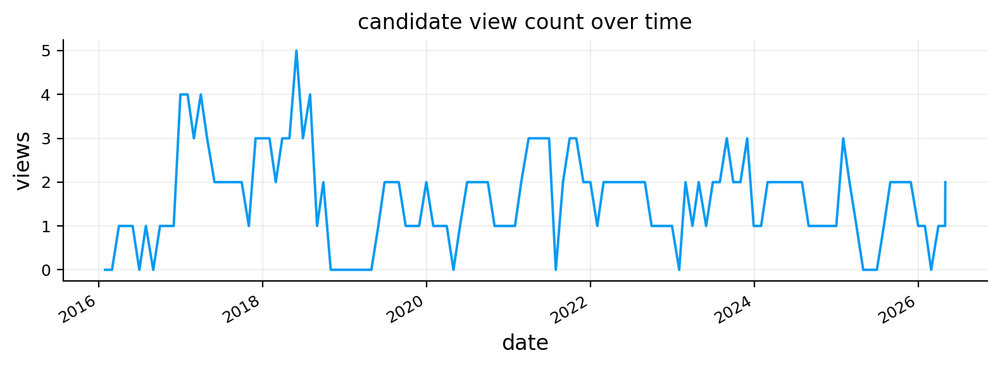
| view_family | view_name | long_assets | short_assets | signal_value | q_tilt | confluence_score | economic_priority | risk_orientation | diagnostics | |
|---|---|---|---|---|---|---|---|---|---|---|
| 0 | dual_momentum | Dual momentum | [DBC, GLD, EEM, IWM] | [TLT, LQD] | 1.7715 | 0.0196 | 0.7086 | 0.85 | neutral | {'dual_dispersion': 1.356483128543048, 'long_s... |
| 1 | reflation_breadth | Reflation breadth | [IWM, HYG, VNQ, DBC, EEM] | [SHY, IEF, AGG, GLD] | 1.3967 | 0.0339 | 0.6983 | 0.78 | risk_on | {'iwm_spy_63': 0.03322394644058324, 'hyg_lqd_6... |
| 2 | international_rotation | International rotation | [EEM] | [EFA] | 1.2315 | 0.0136 | 0.6158 | 0.72 | risk_on | {'eem_efa_63': 0.07160985901167893, 'dollar_tr... |
| 3 | inflation_rotation | Inflation rotation | [DBC, GLD] | [TLT, LQD, IEF, AGG] | 1.5712 | 0.0204 | 0.5029 | 0.80 | neutral | {'commodity_score': 1.007280659722617, 'durati... |
| 4 | risk_adj_momentum | Risk-adjusted momentum | [DBC, EEM, IWM, QQQ] | [TLT, IEF, LQD, AGG] | 0.9988 | 0.0093 | 0.3995 | 1.00 | neutral | {'risk_adj_dispersion': 0.6934411211187503, 'l... |
| 5 | liquid_leadership | Liquidity leadership | [QQQ, SPY] | [HYG, VNQ] | 0.3329 | 0.0109 | 0.1665 | 0.90 | risk_on | {'leadership_spread': 0.3980206952657629, 'cyc... |
| 6 | duration_quality | Duration quality | [SHY, AGG, IEF] | [TLT] | 0.2180 | 0.0017 | 0.1090 | 0.70 | risk_off | {'tlt_trend_200': -0.010226109945979278, 'ief_... |
| active_count | avg_q_tilt | avg_abs_q_tilt | avg_signal_strength | |
|---|---|---|---|---|
| view_family | ||||
| risk_adj_momentum | 125 | 0.0123 | 0.0123 | 1.8257 |
| dual_momentum | 118 | 0.0191 | 0.0191 | 1.7699 |
| duration_quality | 78 | 0.0042 | 0.0042 | 0.6185 |
| credit_switch | 58 | 0.0069 | 0.0069 | 1.1253 |
| liquid_leadership | 51 | 0.0209 | 0.0209 | 0.7422 |
| international_rotation | 46 | 0.0117 | 0.0117 | 1.0113 |
| growth_duration | 28 | 0.0168 | 0.0168 | 0.7771 |
| reflation_breadth | 22 | 0.0318 | 0.0318 | 1.3210 |
| inflation_rotation | 21 | 0.0152 | 0.0152 | 0.9968 |
| correlation_stress | 4 | 0.0113 | 0.0113 | 0.6429 |
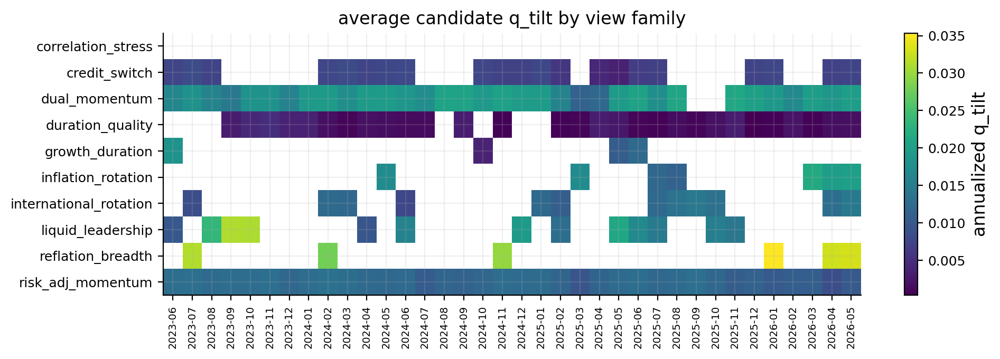
def reliability_score_for_q(stats):
hit_rate = stats.get("hit_rate", np.nan)
recent_hit_rate = stats.get("recent_hit_rate", np.nan)
payoff_ir = stats.get("payoff_ir", np.nan)
sample_score = stats.get("sample_score", 0.0)
hit_component = np.clip(((hit_rate if np.isfinite(hit_rate) else 0.50) - 0.50) / 0.15, 0.0, 1.0)
recent_component = np.clip(((recent_hit_rate if np.isfinite(recent_hit_rate) else hit_rate) - 0.50) / 0.20, 0.0, 1.0)
ir_component = np.clip((payoff_ir if np.isfinite(payoff_ir) else 0.0) / 0.30, 0.0, 1.0)
return float(np.clip(0.35 * hit_component + 0.25 * recent_component + 0.25 * ir_component + 0.15 * sample_score, 0.0, 1.0))
def reliability_q_multiplier(stats):
n_obs = stats.get("n_obs", 0)
hit_rate = stats.get("hit_rate", np.nan)
recent_hit_rate = stats.get("recent_hit_rate", np.nan)
payoff_ir = stats.get("payoff_ir", np.nan)
if n_obs < 8:
return 0.60
mult = 1.00
if np.isfinite(hit_rate):
if hit_rate < 0.48:
mult *= 0.60
elif hit_rate < 0.52:
mult *= 0.80
elif hit_rate > 0.58:
mult *= 1.10
if np.isfinite(payoff_ir):
if payoff_ir < -0.10:
mult *= 0.50
elif payoff_ir <= 0.03:
mult *= 0.75
elif payoff_ir > 0.20:
mult *= 1.15
if np.isfinite(recent_hit_rate):
if recent_hit_rate < 0.35:
mult *= 0.75
elif recent_hit_rate > 0.65:
mult *= 1.10
return float(np.clip(mult, 0.35, 1.25))
def learned_q_for_row(row, raw_q, payoff_history, current_date, use_learned_q=True):
cap = family_q_caps.get(row.get("view_family"), 0.020)
stats = family_reliability_stats(row.get("view_family"), payoff_history, current_date) if current_date is not None else family_reliability_stats(row.get("view_family"), pd.DataFrame(), pd.Timestamp("1900-01-01"))
raw_q = float(np.clip(abs(raw_q), 0.0, cap))
learned_component = 0.0
q_final = raw_q
q_model = "rule q only"
if use_learned_q:
mult = reliability_q_multiplier(stats)
q_final = float(np.clip(raw_q * mult, 0.0, cap))
learned_component = q_final - raw_q
q_model = "soft reliability scaled q"
q_shrinkage_or_boost = (q_final / raw_q - 1.0) if raw_q > 1e-12 else np.nan
return q_final, learned_component, q_shrinkage_or_boost, q_model, stats
def build_view_matrix(active_views, assets, prior_mu=None, payoff_history=None, current_date=None, use_learned_q=True):
clean_rows, view_p_rows, view_q_vals = [], [], []
asset_index = {asset: i for i, asset in enumerate(assets)}
prior = pd.Series(prior_mu, index=assets, dtype=float).reindex(assets).fillna(0.0) if prior_mu is not None else pd.Series(0.0, index=assets)
for row in active_views:
long_assets = [x for x in row.get("long_assets", []) if x in asset_index]
short_assets = [x for x in row.get("short_assets", []) if x in asset_index]
if not long_assets or not short_assets:
continue
p_row = np.zeros(len(assets), dtype=float)
for asset in long_assets:
p_row[asset_index[asset]] += 1.0 / len(long_assets)
for asset in short_assets:
p_row[asset_index[asset]] -= 1.0 / len(short_assets)
if abs(p_row.sum()) > 1e-8:
print("warning: p row does not sum close to zero", row.get("view_name"), p_row.sum())
tilt_cap = family_q_caps.get(row.get("view_family"), 0.020)
view_strength = float(abs(row.get("view_strength", row.get("signal_value", 0.0))))
raw_q_tilt = float(np.clip(abs(row.get("q_tilt", tilt_cap * math.tanh(view_strength / q_strength_scale))), 0.0, tilt_cap))
q_tilt_final, learned_q_component, q_shrinkage_or_boost, q_model, stats = learned_q_for_row(row, raw_q_tilt, payoff_history, current_date, use_learned_q=use_learned_q)
if use_learned_q and q_tilt_final <= 1e-10:
continue
base_view_spread = float(p_row @ prior.values)
q_val = base_view_spread + q_tilt_final
expression_parts = [f"{1.0 / len(long_assets):.2f}*{asset}" for asset in long_assets] + [f"-{1.0 / len(short_assets):.2f}*{asset}" for asset in short_assets]
rec = dict(row)
rec["economic_theme"] = view_theme(rec)
rec["base_view_spread"] = base_view_spread
rec["raw_q"] = raw_q_tilt
rec["raw_q_tilt"] = raw_q_tilt
rec["learned_q_component"] = learned_q_component
rec["final_q"] = q_tilt_final
rec["q_tilt"] = q_tilt_final
rec["q_tilt_final"] = q_tilt_final
rec["q"] = q_val
rec["q_model"] = q_model
rec["q_shrinkage_or_boost"] = q_shrinkage_or_boost
rec["q_shrink"] = raw_q_tilt - q_tilt_final
rec["q_n_obs"] = stats.get("n_obs", np.nan)
rec["q_hit_rate"] = stats.get("hit_rate", np.nan)
rec["q_recent_hit_rate"] = stats.get("recent_hit_rate", np.nan)
rec["q_payoff_ir"] = stats.get("payoff_ir", np.nan)
rec["q_avg_payoff"] = stats.get("avg_payoff", np.nan)
rec["q_t_stat"] = stats.get("t_stat", np.nan)
rec["q_info_coefficient"] = stats.get("info_coefficient", np.nan)
rec["p_expression"] = " + ".join(expression_parts).replace("+ -", "- ")
rec["p_vector"] = pd.Series(p_row, index=assets).round(6).to_dict()
clean_rows.append(rec)
view_p_rows.append(p_row)
view_q_vals.append(q_val)
view_p = np.vstack(view_p_rows) if view_p_rows else np.empty((0, len(assets)))
view_q = np.asarray(view_q_vals, dtype=float)
clean_view_table = pd.DataFrame(clean_rows)
assert view_p.shape[1] == len(assets)
return view_p, view_q, clean_view_table
latest_view_p, latest_view_q, latest_clean_view_table = build_view_matrix(latest_active_views, assets, prior_mu_by_date[pd.Timestamp(latest_rebalance_date)], use_learned_q=False)
print("view_p shape:", latest_view_p.shape, "view_q shape:", latest_view_q.shape)
if not latest_clean_view_table.empty:
display(latest_clean_view_table[["view_family", "family_display_name", "view_name", "view_state", "long_assets", "short_assets", "base_view_spread", "raw_q", "final_q", "q", "confidence", "p_expression", "diagnostics"]].round(4))
latest_p_table = pd.DataFrame(latest_view_p, columns=assets, index=latest_clean_view_table["view_family"])
display(latest_p_table.round(3))view_p shape: (7, 14) view_q shape: (7,)| view_family | family_display_name | view_name | view_state | long_assets | short_assets | base_view_spread | raw_q | final_q | q | confidence | p_expression | diagnostics | |
|---|---|---|---|---|---|---|---|---|---|---|---|---|---|
| 0 | dual_momentum | Dual momentum | Dual momentum | trend_following | [DBC, GLD, EEM, IWM] | [TLT, LQD] | 0.0696 | 0.0196 | 0.0196 | 0.0892 | NaN | 0.25*DBC + 0.25*GLD + 0.25*EEM + 0.25*IWM - 0.... | {'dual_dispersion': 1.356483128543048, 'long_s... |
| 1 | reflation_breadth | Reflation breadth | Reflation breadth | broad_reflation | [IWM, HYG, VNQ, DBC, EEM] | [SHY, IEF, AGG, GLD] | 0.0249 | 0.0339 | 0.0339 | 0.0588 | NaN | 0.20*IWM + 0.20*HYG + 0.20*VNQ + 0.20*DBC + 0.... | {'iwm_spy_63': 0.03322394644058324, 'hyg_lqd_6... |
| 2 | international_rotation | International rotation | International rotation | em_leadership | [EEM] | [EFA] | 0.0486 | 0.0136 | 0.0136 | 0.0622 | NaN | 1.00*EEM - 1.00*EFA | {'eem_efa_63': 0.07160985901167893, 'dollar_tr... |
| 3 | inflation_rotation | Inflation rotation | Inflation rotation | inflation_shock | [DBC, GLD] | [TLT, LQD, IEF, AGG] | 0.0060 | 0.0204 | 0.0204 | 0.0264 | NaN | 0.50*DBC + 0.50*GLD - 0.25*TLT - 0.25*LQD - 0.... | {'commodity_score': 1.007280659722617, 'durati... |
| 4 | risk_adj_momentum | Risk-adjusted momentum | Risk-adjusted momentum | quality_momentum | [DBC, EEM, IWM, QQQ] | [TLT, IEF, LQD, AGG] | 0.0718 | 0.0093 | 0.0093 | 0.0811 | NaN | 0.25*DBC + 0.25*EEM + 0.25*IWM + 0.25*QQQ - 0.... | {'risk_adj_dispersion': 0.6934411211187503, 'l... |
| 5 | liquid_leadership | Liquidity leadership | Liquidity leadership | narrow_leadership | [QQQ, SPY] | [HYG, VNQ] | 0.0674 | 0.0109 | 0.0109 | 0.0784 | NaN | 0.50*QQQ + 0.50*SPY - 0.50*HYG - 0.50*VNQ | {'leadership_spread': 0.3980206952657629, 'cyc... |
| 6 | duration_quality | Duration quality | Duration quality | short_duration_quality | [SHY, AGG, IEF] | [TLT] | -0.0196 | 0.0017 | 0.0017 | -0.0178 | NaN | 0.33*SHY + 0.33*AGG + 0.33*IEF - 1.00*TLT | {'tlt_trend_200': -0.010226109945979278, 'ief_... |
| SPY | QQQ | IWM | EFA | EEM | TLT | IEF | SHY | AGG | LQD | HYG | GLD | VNQ | DBC | |
|---|---|---|---|---|---|---|---|---|---|---|---|---|---|---|
| view_family | ||||||||||||||
| dual_momentum | 0.0 | 0.00 | 0.25 | 0.0 | 0.25 | -0.50 | 0.000 | 0.000 | 0.000 | -0.50 | 0.0 | 0.25 | 0.0 | 0.25 |
| reflation_breadth | 0.0 | 0.00 | 0.20 | 0.0 | 0.20 | 0.00 | -0.250 | -0.250 | -0.250 | 0.00 | 0.2 | -0.25 | 0.2 | 0.20 |
| international_rotation | 0.0 | 0.00 | 0.00 | -1.0 | 1.00 | 0.00 | 0.000 | 0.000 | 0.000 | 0.00 | 0.0 | 0.00 | 0.0 | 0.00 |
| inflation_rotation | 0.0 | 0.00 | 0.00 | 0.0 | 0.00 | -0.25 | -0.250 | 0.000 | -0.250 | -0.25 | 0.0 | 0.50 | 0.0 | 0.50 |
| risk_adj_momentum | 0.0 | 0.25 | 0.25 | 0.0 | 0.25 | -0.25 | -0.250 | 0.000 | -0.250 | -0.25 | 0.0 | 0.00 | 0.0 | 0.25 |
| liquid_leadership | 0.5 | 0.50 | 0.00 | 0.0 | 0.00 | 0.00 | 0.000 | 0.000 | 0.000 | 0.00 | -0.5 | 0.00 | -0.5 | 0.00 |
| duration_quality | 0.0 | 0.00 | 0.00 | 0.0 | 0.00 | -1.00 | 0.333 | 0.333 | 0.333 | 0.00 | 0.0 | 0.00 | 0.0 | 0.00 |
view_horizon_days = 21
def p_row_from_view(row, assets):
return p_series_from_assets(row.get("long_assets", []), row.get("short_assets", []), list(assets))
def stress_state_from_market_state(market_state):
spy_dd = state_value(market_state, "spy_drawdown_252", 0.0)
spy_vol_z = state_value(market_state, "spy_vol_z", 0.0)
breadth = state_value(market_state, "risky_trend_breadth")
credit = state_value(market_state, "hyg_lqd_63", 0.0)
return bool((np.isfinite(spy_dd) and spy_dd < -0.08) or spy_vol_z > 0.80 or (np.isfinite(breadth) and breadth < 0.45) or credit < -0.020)
def build_view_payoff_history(view_log, returns, horizon=view_horizon_days):
if view_log.empty:
return pd.DataFrame()
rows = []
for _, row in view_log.iterrows():
dt = pd.Timestamp(row["date"])
pos = returns.index.searchsorted(dt, side="right") - 1
if pos < 0 or pos + horizon >= len(returns.index):
continue
forward_asset_return = (1.0 + returns.iloc[pos + 1:pos + horizon + 1]).prod() - 1.0
p = p_row_from_view(row, returns.columns)
if p is None:
continue
payoff_horizon = float(p @ forward_asset_return.reindex(p.index).fillna(0.0))
payoff_ann = float(np.log1p(np.clip(payoff_horizon, -0.95, None)) * annualization / horizon)
market_state_t = view_cache.get(dt, {}).get("market_state", {}) if "view_cache" in globals() else {}
stress_state = stress_state_from_market_state(market_state_t) if market_state_t else False
rows.append({
"date": dt,
"payoff_end_date": returns.index[pos + horizon],
"view_family": row["view_family"],
"family_name": row.get("family_name", family_display_names.get(row["view_family"], row["view_family"])),
"family_display_name": row.get("family_display_name", family_display_names.get(row["view_family"], row["view_family"])),
"view_name": row["view_name"],
"view_state": row.get("view_state", row.get("risk_orientation", "neutral")),
"economic_theme": view_theme(row),
"signal_value": row["signal_value"],
"raw_strength": row.get("raw_strength", abs(row["signal_value"])),
"signal_strength": abs(row["signal_value"]),
"q_tilt": row.get("q_tilt", np.nan),
"q": row.get("q", np.nan),
"payoff_horizon": payoff_horizon,
"payoff_ann": payoff_ann,
"payoff": payoff_ann,
"hit": payoff_horizon > 0,
"risk_orientation": row["risk_orientation"],
"economic_label": row["economic_label"],
"spy_drawdown_252": market_state_t.get("spy_drawdown_252", np.nan),
"spy_vol_z": market_state_t.get("spy_vol_z", np.nan),
"risky_trend_breadth": market_state_t.get("risky_trend_breadth", np.nan),
"hyg_lqd_63": market_state_t.get("hyg_lqd_63", np.nan),
"stress_state": stress_state,
"diagnostics": row.get("diagnostics", {}),
"p_vector": p.round(6).to_dict(),
})
return pd.DataFrame(rows)
all_payoff_history = build_view_payoff_history(view_preview_log, returns[assets])
print("payoff observations:", len(all_payoff_history))
print("confidence and learned Q use only payoff observations whose payoff_end_date is before the rebalance date")
confidence_preview_rows = []
for mode in ["fixed", "learned", "haircut"]:
for row in latest_active_views:
details = confidence_for_view(row, all_payoff_history, latest_rebalance_date, latest_market_state, mode)
confidence_preview_rows.append({"date": pd.Timestamp(latest_rebalance_date), "view_family": row["view_family"], "view_name": row["view_name"], "confidence_mode": "full_" + mode, "confidence": details["confidence"], "hit_rate": details["hit_rate"], "recent_hit_rate": details["recent_hit_rate"], "payoff_ir": details["payoff_ir"], "stress_hit_rate": details.get("stress_hit_rate", np.nan), "stress_payoff_ir": details.get("stress_payoff_ir", np.nan), "t_stat": details["t_stat"], "info_coefficient": details["info_coefficient"], "n_obs": details["n_obs"], "haircut_multiplier": details["haircut_multiplier"], "risk_orientation": details["risk_orientation"]})
for mode in ["learned", "haircut"]:
selected_preview, _ = select_selected_views(latest_active_views, all_payoff_history, latest_rebalance_date, latest_market_state, mode)
for row in selected_preview:
details = confidence_for_view(row, all_payoff_history, latest_rebalance_date, latest_market_state, mode)
confidence_preview_rows.append({"date": pd.Timestamp(latest_rebalance_date), "view_family": row["view_family"], "view_name": row["view_name"], "confidence_mode": "selected_" + mode, "confidence": details["confidence"], "hit_rate": details["hit_rate"], "recent_hit_rate": details["recent_hit_rate"], "payoff_ir": details["payoff_ir"], "stress_hit_rate": details.get("stress_hit_rate", np.nan), "stress_payoff_ir": details.get("stress_payoff_ir", np.nan), "t_stat": details["t_stat"], "info_coefficient": details["info_coefficient"], "n_obs": details["n_obs"], "haircut_multiplier": details["haircut_multiplier"], "risk_orientation": details["risk_orientation"]})
confidence_preview = pd.DataFrame(confidence_preview_rows)
if not confidence_preview.empty:
display(confidence_preview.groupby(["confidence_mode", "view_family"])["confidence"].mean().unstack(0).round(4))payoff observations: 537
confidence and learned Q use only payoff observations whose payoff_end_date is before the rebalance date| confidence_mode | full_fixed | full_haircut | full_learned | selected_haircut | selected_learned |
|---|---|---|---|---|---|
| view_family | |||||
| dual_momentum | 0.5 | 0.5942 | 0.5942 | 0.5942 | 0.5942 |
| duration_quality | 0.5 | 0.2000 | 0.3000 | NaN | NaN |
| inflation_rotation | 0.5 | 0.4873 | 0.4873 | 0.4873 | 0.4873 |
| international_rotation | 0.5 | 0.3131 | 0.3131 | NaN | NaN |
| liquid_leadership | 0.5 | 0.6194 | 0.6194 | 0.6194 | 0.6194 |
| reflation_breadth | 0.5 | 0.3150 | 0.4200 | 0.3150 | 0.4200 |
| risk_adj_momentum | 0.5 | 0.5226 | 0.5226 | 0.5226 | 0.5226 |
tau = 0.05
use_empirical_omega_rescale = False
def empirical_view_variance(view_family, payoff_history, current_date):
if payoff_history is None or len(payoff_history) == 0:
return np.nan, 0
sample = payoff_history[(payoff_history["view_family"] == view_family) & (payoff_history["payoff_end_date"] < pd.Timestamp(current_date))].copy()
payoff_col = "payoff_ann" if "payoff_ann" in sample.columns else "payoff"
x = pd.to_numeric(sample.get(payoff_col, pd.Series(dtype=float)), errors="coerce").dropna()
if len(x) < 8:
return np.nan, int(len(x))
return float(x.var(ddof=1)), int(len(x))
def omega_from_confidence(view_p, cov_ann, confidence, active_view_rows=None, payoff_history=None, current_date=None, full_view_cov=True):
if len(confidence) == 0 or view_p.shape[0] == 0:
return np.empty((0, 0)), np.array([])
conf = np.asarray(confidence, dtype=float)
conf = np.where(np.isfinite(conf), conf, 0.50)
conf = np.maximum(conf, 1e-4)
cov_arr = np.asarray(cov_ann, dtype=float)
view_cov = view_p @ cov_arr @ view_p.T
view_cov = 0.5 * (view_cov + view_cov.T)
view_var = np.maximum(np.diag(view_cov), 1e-8)
scale = np.sqrt((1.0 - conf) / conf)
base_omega = tau * np.diag(scale) @ view_cov @ np.diag(scale)
base_omega = 0.5 * (base_omega + base_omega.T) + np.eye(len(conf)) * 1e-8
base_diag = np.maximum(np.diag(base_omega), 1e-10)
target_diag = base_diag.copy()
if use_empirical_omega_rescale and active_view_rows is not None and payoff_history is not None and current_date is not None:
for i, row in enumerate(active_view_rows):
emp_var, n_obs = empirical_view_variance(row.get("view_family"), payoff_history, current_date)
if np.isfinite(emp_var) and emp_var > 1e-10:
sample_weight = min(0.50, n_obs / 48.0)
target_diag[i] = (1.0 - sample_weight) * base_diag[i] + sample_weight * emp_var
try:
rescale = np.sqrt(np.maximum(target_diag, 1e-10) / base_diag)
omega = np.diag(rescale) @ base_omega @ np.diag(rescale)
omega = 0.5 * (omega + omega.T) + np.eye(len(conf)) * 1e-8
if np.all(np.isfinite(omega)):
return omega, view_var
except Exception:
pass
return np.diag(np.maximum(target_diag, 1e-8)), view_var
if latest_view_p.shape[0] > 0:
learned_conf = [confidence_for_view(row, all_payoff_history, latest_rebalance_date, latest_market_state, "learned")["confidence"] for row in latest_clean_view_table.to_dict("records")]
latest_omega, latest_view_var = omega_from_confidence(latest_view_p, cov_by_date[pd.Timestamp(latest_rebalance_date)].loc[assets, assets], learned_conf, active_view_rows=latest_clean_view_table.to_dict("records"), payoff_history=all_payoff_history, current_date=latest_rebalance_date)
omega_table = latest_clean_view_table[["view_name", "view_family", "raw_q", "learned_q_component", "final_q", "q"]].copy()
omega_table["confidence"] = learned_conf
omega_table["view_variance"] = latest_view_var
omega_table["omega_diag"] = np.diag(latest_omega)
display(omega_table.round(6))
print("omega uses confidence-based full view covariance; learned Q is applied when build_view_matrix is called with use_learned_q=True")
else:
print("no active views for omega display")| view_name | view_family | raw_q | learned_q_component | final_q | q | confidence | view_variance | omega_diag | |
|---|---|---|---|---|---|---|---|---|---|
| 0 | Dual momentum | dual_momentum | 0.019558 | 0.0 | 0.019558 | 0.089174 | 0.594198 | 0.024714 | 0.000844 |
| 1 | Reflation breadth | reflation_breadth | 0.033879 | 0.0 | 0.033879 | 0.058752 | 0.420000 | 0.007321 | 0.000505 |
| 2 | International rotation | international_rotation | 0.013596 | 0.0 | 0.013596 | 0.062218 | 0.313130 | 0.014962 | 0.001641 |
| 3 | Inflation rotation | inflation_rotation | 0.020405 | 0.0 | 0.020405 | 0.026418 | 0.487302 | 0.045933 | 0.002416 |
| 4 | Risk-adjusted momentum | risk_adj_momentum | 0.009289 | 0.0 | 0.009289 | 0.081132 | 0.522604 | 0.017509 | 0.000800 |
| 5 | Liquidity leadership | liquid_leadership | 0.010930 | 0.0 | 0.010930 | 0.078368 | 0.619355 | 0.017489 | 0.000537 |
| 6 | Duration quality | duration_quality | 0.001726 | 0.0 | 0.001726 | -0.017848 | 0.300000 | 0.003988 | 0.000465 |
omega uses confidence-based full view covariance; learned Q is applied when build_view_matrix is called with use_learned_q=Truedef black_litterman_posterior(prior_mu, cov_ann, view_p, view_q, omega, tau=tau):
prior_mu = pd.Series(prior_mu).astype(float)
cov_ann = pd.DataFrame(cov_ann, index=prior_mu.index, columns=prior_mu.index).astype(float)
diag = {"n_views": int(view_p.shape[0]), "avg_confidence": np.nan, "max_confidence": np.nan, "min_confidence": np.nan, "max_abs_q": float(np.max(np.abs(view_q))) if len(view_q) else 0.0, "max_abs_posterior_shift": 0.0, "condition_number": np.nan, "no_views": view_p.shape[0] == 0, "failure": False, "clipped": False}
if view_p.shape[0] == 0:
return prior_mu.copy(), cov_ann.copy(), diag
try:
cov_arr = make_psd_df(cov_ann.values, cov_ann.index).values
tau_cov = tau * cov_arr
omega_arr = np.asarray(omega, dtype=float)
omega_arr = 0.5 * (omega_arr + omega_arr.T) + np.eye(view_p.shape[0]) * 1e-8
middle = view_p @ tau_cov @ view_p.T + omega_arr
middle = 0.5 * (middle + middle.T) + np.eye(view_p.shape[0]) * 1e-10
view_gap = view_q - view_p @ prior_mu.values
diag["condition_number"] = float(np.linalg.cond(middle))
solved_gap = np.linalg.solve(middle, view_gap)
post_mu_arr = prior_mu.values + tau_cov @ view_p.T @ solved_gap
solved_cov = np.linalg.solve(middle, view_p @ tau_cov)
posterior_uncertainty = tau_cov - tau_cov @ view_p.T @ solved_cov
post_cov_arr = local_make_psd(cov_arr + posterior_uncertainty)
clipped = np.any((post_mu_arr < -0.30) | (post_mu_arr > 0.30))
post_mu_arr = np.clip(post_mu_arr, -0.30, 0.30)
post_mu = pd.Series(post_mu_arr, index=prior_mu.index)
post_cov = pd.DataFrame(post_cov_arr, index=prior_mu.index, columns=prior_mu.index)
diag["clipped"] = bool(clipped)
diag["max_abs_posterior_shift"] = float(np.max(np.abs(post_mu.values - prior_mu.values)))
return post_mu, post_cov, diag
except Exception:
diag["failure"] = True
return prior_mu.copy(), cov_ann.copy(), diag
def diagnostic_bl_weights(post_mu, post_cov, delta_t):
try:
raw = pd.Series(np.linalg.solve(delta_t * post_cov.values, post_mu.values), index=post_mu.index)
return normalize_box_weights(raw.clip(lower=0.0), post_mu.index, lower=w_min, upper=w_max)
except Exception:
return benchmark_w.copy()
if latest_view_p.shape[0] > 0:
post_mu_sample, post_cov_sample, post_diag_sample = black_litterman_posterior(prior_mu_by_date[pd.Timestamp(latest_rebalance_date)], cov_by_date[pd.Timestamp(latest_rebalance_date)].loc[assets, assets], latest_view_p, latest_view_q, latest_omega)
else:
post_mu_sample, post_cov_sample, post_diag_sample = black_litterman_posterior(prior_mu_by_date[pd.Timestamp(latest_rebalance_date)], cov_by_date[pd.Timestamp(latest_rebalance_date)].loc[assets, assets], latest_view_p, latest_view_q, np.empty((0, 0)))
prior_post_table = pd.DataFrame({"asset": assets, "prior_mu": prior_mu_by_date[pd.Timestamp(latest_rebalance_date)].reindex(assets).values, "post_mu": post_mu_sample.reindex(assets).values, "shift": post_mu_sample.reindex(assets).values - prior_mu_by_date[pd.Timestamp(latest_rebalance_date)].reindex(assets).values}).sort_values("shift", ascending=False)
display(prior_post_table.round(4))
diagnostic_w = diagnostic_bl_weights(post_mu_sample, post_cov_sample, delta_by_date[pd.Timestamp(latest_rebalance_date)])
display(pd.DataFrame({"asset": diagnostic_w.index, "diagnostic_bl_implied_weight": diagnostic_w.values}).sort_values("diagnostic_bl_implied_weight", ascending=False).round(4))
print(post_diag_sample)| asset | prior_mu | post_mu | shift | |
|---|---|---|---|---|
| 11 | GLD | 0.1525 | 0.3000 | 0.1475 |
| 13 | DBC | -0.0793 | 0.0168 | 0.0961 |
| 4 | EEM | 0.2038 | 0.2946 | 0.0908 |
| 1 | QQQ | 0.1370 | 0.1872 | 0.0502 |
| 0 | SPY | 0.1109 | 0.1467 | 0.0357 |
| 3 | EFA | 0.1552 | 0.1830 | 0.0278 |
| 2 | IWM | 0.1483 | 0.1743 | 0.0260 |
| 10 | HYG | 0.0361 | 0.0389 | 0.0028 |
| 6 | IEF | 0.0255 | 0.0274 | 0.0019 |
| 7 | SHY | 0.0077 | 0.0095 | 0.0018 |
| 8 | AGG | 0.0234 | 0.0226 | -0.0008 |
| 9 | LQD | 0.0350 | 0.0303 | -0.0047 |
| 5 | TLT | 0.0385 | 0.0204 | -0.0180 |
| 12 | VNQ | 0.0769 | 0.0175 | -0.0594 |
| asset | diagnostic_bl_implied_weight | |
|---|---|---|
| 0 | SPY | 0.1921 |
| 4 | EEM | 0.1921 |
| 8 | AGG | 0.1921 |
| 13 | DBC | 0.1921 |
| 6 | IEF | 0.1921 |
| 2 | IWM | 0.0302 |
| 11 | GLD | 0.0095 |
| 5 | TLT | 0.0000 |
| 1 | QQQ | 0.0000 |
| 3 | EFA | 0.0000 |
| 9 | LQD | 0.0000 |
| 7 | SHY | 0.0000 |
| 10 | HYG | 0.0000 |
| 12 | VNQ | 0.0000 |
{'n_views': 7, 'avg_confidence': nan, 'max_confidence': nan, 'min_confidence': nan, 'max_abs_q': 0.08917445627697065, 'max_abs_posterior_shift': 0.14746388981351133, 'condition_number': 1465.5038944376747, 'no_views': False, 'failure': False, 'clipped': True}active_weight_limit = 0.15
active_weight_relaxed = 0.22
gamma_te = 3.0
active_te_target = 0.05
def clean_bl_weight_array(weights, index, previous=None):
caps = asset_caps.reindex(index).fillna(w_max)
if weights is None:
weights = previous if previous is not None else benchmark_w.reindex(index).values
w = pd.Series(np.asarray(weights, dtype=float).reshape(-1), index=index)
if len(w) != len(index) or not np.all(np.isfinite(w)):
w = pd.Series(previous, index=index) if previous is not None else benchmark_w.reindex(index).fillna(0.0)
w = w.clip(lower=w_min, upper=caps)
if w.sum() <= 1e-12:
w = benchmark_w.reindex(index).fillna(0.0).clip(upper=caps)
w = w / w.sum()
for _ in range(100):
over = w > caps + 1e-12
if not over.any():
break
extra = float((w[over] - caps[over]).sum())
w[over] = caps[over]
room = (caps[~over] - w[~over]).clip(lower=0.0)
if room.sum() <= 1e-12:
break
w.loc[room.index] += extra * room / room.sum()
w = w.clip(lower=w_min, upper=caps)
return (w / w.sum()).to_numpy(dtype=float)
def cvxpy_bl_optimizer(mu, cov_ann, w_prev=None, risk_aversion=None, active_limit=active_weight_limit, use_sleeves=True, te_gamma=0.0):
if cp is None:
return None
index = list(mu.index)
n = len(index)
w_var = cp.Variable(n)
cov_arr = local_make_psd(cov_ann.values + np.eye(n) * 1e-8)
caps = asset_caps.reindex(index).fillna(w_max).to_numpy(dtype=float)
bench = benchmark_w.reindex(index).fillna(0.0).to_numpy(dtype=float)
prev = np.asarray(w_prev if w_prev is not None else bench, dtype=float)
risk_aversion = float(delta_fallback if risk_aversion is None or not np.isfinite(risk_aversion) else risk_aversion)
turnover_penalty = cost_bps / 10000.0 * cp.norm1(w_var - prev)
te_penalty = te_gamma * cp.quad_form(w_var - bench, cov_arr) if te_gamma and te_gamma > 0 else 0.0
objective = cp.Maximize(mu.values @ w_var - 0.5 * risk_aversion * cp.quad_form(w_var, cov_arr) - turnover_penalty - te_penalty)
constraints = [cp.sum(w_var) == 1.0, w_var >= w_min, w_var <= caps]
if active_limit is not None:
constraints += [w_var - bench <= active_limit, bench - w_var <= active_limit]
if use_sleeves:
for sleeve, spec in sleeve_constraints.items():
locs = [index.index(asset) for asset in spec["assets"] if asset in index]
if locs:
sleeve_weight = cp.sum(w_var[locs])
constraints += [sleeve_weight >= spec["min"], sleeve_weight <= spec["max"]]
problem = cp.Problem(objective, constraints)
for solver in ["CLARABEL", "OSQP", "ECOS", "SCS"]:
try:
problem.solve(solver=solver, verbose=False)
if w_var.value is not None and problem.status in ["optimal", "optimal_inaccurate"]:
return np.asarray(w_var.value, dtype=float)
except Exception:
continue
return None
def optimize_bl_weights(post_mu, post_cov, w_prev=None, risk_aversion=None):
attempts = [
{"active_limit": active_weight_limit, "use_sleeves": True, "te_gamma": 0.0},
{"active_limit": active_weight_relaxed, "use_sleeves": True, "te_gamma": 0.0},
{"active_limit": active_weight_limit, "use_sleeves": False, "te_gamma": 0.0},
{"active_limit": active_weight_relaxed, "use_sleeves": False, "te_gamma": 0.0},
{"active_limit": None, "use_sleeves": False, "te_gamma": gamma_te},
]
for attempt in attempts:
w = cvxpy_bl_optimizer(post_mu, post_cov, w_prev=w_prev, risk_aversion=risk_aversion, **attempt)
if w is not None:
return clean_bl_weight_array(w, post_mu.index, previous=w_prev), False, attempt
previous = w_prev if w_prev is not None else benchmark_w.reindex(post_mu.index).values
return clean_bl_weight_array(previous, post_mu.index, previous=previous), True, {"active_limit": None, "use_sleeves": False, "te_gamma": np.nan}bl_modes = {
"Learned-Confidence BL": {"view_set": "selected", "confidence_mode": "learned"},
}
bl_weight_rows = {name: [] for name in bl_modes}
bl_fallback_rows = {name: [] for name in bl_modes}
bl_prev_weights = {name: None for name in bl_modes}
confidence_log_rows = []
posterior_log_rows = []
candidate_view_log_rows = []
selected_view_log_rows = []
selection_log_rows = []
post_mu_store = {}
post_cov_store = {}
for i, dt in enumerate(rebalance_dates[:-1]):
dt = pd.Timestamp(dt)
cache = view_cache[dt]
candidate_views = cache["active_views"]
market_state = cache["market_state"]
prior_mu = prior_mu_by_date[dt].reindex(assets)
cov_ann = cov_by_date[dt].loc[assets, assets]
risk_aversion_t = delta_by_date[dt]
payoff_history_now = all_payoff_history[all_payoff_history["payoff_end_date"] < dt].copy() if not all_payoff_history.empty else pd.DataFrame()
if candidate_views:
candidate_view_log_rows.extend(pd.DataFrame(candidate_views).assign(date=dt, view_set="candidate").to_dict("records"))
selected_views, scale_rows = select_selected_views(candidate_views, payoff_history_now, dt, market_state, "learned")
selection_log_rows.extend(scale_rows)
view_p, view_q, clean_table = build_view_matrix(selected_views, assets, prior_mu, payoff_history=payoff_history_now, current_date=dt, use_learned_q=True)
if not clean_table.empty:
selected_view_log_rows.extend(clean_table.assign(date=dt, view_set="selected", strategy="Learned-Confidence BL").to_dict("records"))
rows_for_posterior = clean_table.to_dict("records") if not clean_table.empty else []
conf_values = []
for strategy_name, spec in bl_modes.items():
mode = spec["confidence_mode"]
for row in rows_for_posterior:
details = confidence_for_view(row, payoff_history_now, dt, market_state, mode)
conf_values.append(details["confidence"] if np.isfinite(details["confidence"]) else 0.50)
confidence_log_rows.append({"date": dt, "view_set": "selected", "strategy": strategy_name, "view_family": row["view_family"], "view_name": row["view_name"], "economic_theme": view_theme(row), "confidence_mode": mode, "confidence": details["confidence"], "historical_confidence": row.get("historical_confidence", np.nan), "selected_score": row.get("selected_score", np.nan), "confluence_score": row.get("confluence_score", np.nan), "novelty_score": row.get("novelty_score", np.nan), "economic_priority": row.get("economic_priority", np.nan), "q_tilt": row.get("q_tilt", np.nan), "hit_rate": details["hit_rate"], "recent_hit_rate": details["recent_hit_rate"], "payoff_ir": details["payoff_ir"], "t_stat": details.get("t_stat", np.nan), "info_coefficient": details.get("info_coefficient", np.nan), "n_obs": details["n_obs"], "haircut_multiplier": details.get("haircut_multiplier", 1.0), "risk_orientation": row["risk_orientation"]})
omega, view_var = omega_from_confidence(view_p, cov_ann, conf_values, active_view_rows=rows_for_posterior, payoff_history=payoff_history_now, current_date=dt, full_view_cov=True)
post_mu, post_cov, diag = black_litterman_posterior(prior_mu, cov_ann, view_p, view_q, omega)
if conf_values:
diag["avg_confidence"] = float(np.mean(conf_values)); diag["max_confidence"] = float(np.max(conf_values)); diag["min_confidence"] = float(np.min(conf_values))
diag.update({"date": dt, "strategy": strategy_name, "view_set": "selected", "confidence_mode": mode, "risk_aversion": risk_aversion_t})
posterior_log_rows.append(diag)
post_mu_store[(strategy_name, dt)] = post_mu
post_cov_store[(strategy_name, dt)] = post_cov
w_prev = bl_prev_weights[strategy_name]
w_new, fallback, opt_info = optimize_bl_weights(post_mu, post_cov, w_prev=w_prev, risk_aversion=risk_aversion_t)
w_new = clean_bl_weight_array(w_new, assets, previous=w_prev)
bl_weight_rows[strategy_name].append(pd.Series(w_new, index=assets, name=dt))
bl_fallback_rows[strategy_name].append((dt, int(bool(fallback or diag.get("failure", False)))))
bl_prev_weights[strategy_name] = w_new
bl_weight_schedules = {name: pd.DataFrame(rows) for name, rows in bl_weight_rows.items()}
bl_fallback_flags = {name: pd.Series(dict(rows), dtype=float).sort_index() for name, rows in bl_fallback_rows.items()}
bl_backtests = run_many_weights_backtests(
bl_weight_schedules,
returns=returns[assets],
cost_bps=cost_bps,
w_min=w_min,
w_max=None,
long_only=True,
normalize=True,
weight_timing="next_close",
)
bl_results = {name: backtest_result_to_dict(name, result, bl_fallback_flags[name]) for name, result in bl_backtests.items()}
candidate_view_log = pd.DataFrame(candidate_view_log_rows)
selected_view_log = pd.DataFrame(selected_view_log_rows)
view_log = selected_view_log.copy()
selection_log = pd.DataFrame(selection_log_rows)
confidence_log = pd.DataFrame(confidence_log_rows)
posterior_log = pd.DataFrame(posterior_log_rows)
print("black-litterman strategy finished:", list(bl_results))
print("candidate view rows:", len(candidate_view_log), "selected view rows:", len(selected_view_log), "confidence rows:", len(confidence_log), "posterior rows:", len(posterior_log))black-litterman strategy finished: ['Learned-Confidence BL']
candidate view rows: 544 selected view rows: 510 confidence rows: 510 posterior rows: 124combined_results = {}
combined_results.update(baseline_results)
combined_results.update(bl_results)
final_strategy_names = [
"Strategic Benchmark",
"Equal Weight",
best_minvar_name,
best_mv_name,
"Learned-Confidence BL",
]
returns_by_strategy = {name: combined_results[name]["returns"] for name in final_strategy_names}
nav_by_strategy = {name: combined_results[name]["nav"] for name in final_strategy_names}
weights_by_strategy = {name: combined_results[name]["weights"] for name in final_strategy_names}
turnover_by_strategy = {name: combined_results[name]["turnover"] for name in final_strategy_names}
cost_by_strategy = {name: combined_results[name]["costs"] for name in final_strategy_names}
def cagr_from_nav(nav):
nav = pd.Series(nav).dropna()
if nav.empty:
return np.nan
years = max(len(nav) / annualization, 1e-9)
return float(nav.iloc[-1] ** (1.0 / years) - 1.0)
gross_net_rows = []
for name in final_strategy_names:
result = combined_results[name]
gross_net_rows.append({
"strategy": name,
"Gross CAGR": cagr_from_nav(result.get("gross_nav", result["nav"])),
"Net CAGR": cagr_from_nav(result["nav"]),
"Cost Drag": float(result["costs"].sum()) if len(result["costs"]) else np.nan,
"Average Monthly Turnover": float(result["turnover"].mean()) if len(result["turnover"]) else np.nan,
"Total Turnover": float(result["turnover"].sum()) if len(result["turnover"]) else np.nan,
})
gross_net_table = pd.DataFrame(gross_net_rows).set_index("strategy")
display(gross_net_table.round(4))
def full_strategy_metrics(name, result):
ret = pd.Series(result["returns"]).dropna(); nav = pd.Series(result["nav"]).dropna()
if ret.empty:
return {"strategy": name}
years = max(len(nav) / annualization, 1e-9)
cagr = float(nav.iloc[-1] ** (1.0 / years) - 1.0)
ann_vol = float(ret.std(ddof=1) * math.sqrt(annualization))
sharpe = float((ret.mean() - risk_free_daily) / ret.std(ddof=1) * math.sqrt(annualization)) if ret.std(ddof=1) > 1e-12 else np.nan
downside = ret[ret < risk_free_daily]
sortino = float((ret.mean() - risk_free_daily) / downside.std(ddof=1) * math.sqrt(annualization)) if len(downside) > 2 and downside.std(ddof=1) > 1e-12 else np.nan
max_dd = max_drawdown_from_nav(nav)
weights = result["weights"]
eff_n = float((1.0 / weights.pow(2).sum(axis=1)).replace([np.inf, -np.inf], np.nan).mean()) if not weights.empty else np.nan
avg_max_weight = float(weights.max(axis=1).mean()) if not weights.empty else np.nan
return {"strategy": name, "CAGR": cagr, "Annualized Volatility": ann_vol, "Sharpe": sharpe, "Sortino": sortino, "Max Drawdown": max_dd, "Calmar": cagr / abs(max_dd) if max_dd < 0 else np.nan, "Avg Monthly Turnover": float(result["turnover"].mean()) if len(result["turnover"]) else np.nan, "Total Turnover": float(result["turnover"].sum()) if len(result["turnover"]) else np.nan, "Cost Drag": float(result["costs"].sum()) if len(result["costs"]) else np.nan, "Effective Number of Holdings": eff_n, "Average Max Weight": avg_max_weight, "Fallback Count": result.get("fallback_count", 0)}
summary_table = pd.DataFrame([full_strategy_metrics(name, combined_results[name]) for name in final_strategy_names]).set_index("strategy")
display(summary_table.round(4))
def avg_active_risk_against_benchmark(weights):
rows = []
bench = benchmark_w.reindex(assets).fillna(0.0)
for dt, row in weights.iterrows():
dt = pd.Timestamp(dt)
if dt not in cov_by_date:
continue
diff = row.reindex(assets).fillna(0.0).values - bench.values
cov_ann = cov_by_date[dt].loc[assets, assets].values
rows.append(float(np.sqrt(max(diff @ cov_ann @ diff, 0.0))))
return float(np.mean(rows)) if rows else np.nan
def benchmark_relative_metrics(name):
bench_ret = pd.Series(combined_results["Strategic Benchmark"]["returns"]).dropna()
ret = pd.Series(combined_results[name]["returns"]).reindex(bench_ret.index).fillna(0.0)
active = ret - bench_ret
active_nav = simple_nav(active)
tracking_error = float(active.std(ddof=1) * math.sqrt(annualization)) if active.std(ddof=1) > 1e-12 else np.nan
active_return = float(active.mean() * annualization)
info_ratio = active_return / tracking_error if np.isfinite(tracking_error) and tracking_error > 1e-12 else np.nan
corr = float(ret.corr(bench_ret)) if ret.std(ddof=1) > 1e-12 and bench_ret.std(ddof=1) > 1e-12 else np.nan
beta = float(ret.cov(bench_ret) / bench_ret.var(ddof=1)) if bench_ret.var(ddof=1) > 1e-12 else np.nan
weights = combined_results[name]["weights"].reindex(columns=assets).fillna(0.0)
bench = benchmark_w.reindex(assets).fillna(0.0)
avg_active_dist = float(weights.subtract(bench, axis=1).abs().sum(axis=1).mean()) if not weights.empty else np.nan
return {"strategy": name, "active_return_ann": active_return, "tracking_error": tracking_error, "information_ratio": info_ratio, "active_max_drawdown": max_drawdown_from_nav(active_nav), "hit_rate_vs_benchmark": float((active > 0).mean()), "corr_to_benchmark": corr, "beta_to_benchmark": beta, "avg_active_weight_distance": avg_active_dist, "avg_active_risk": avg_active_risk_against_benchmark(weights)}
benchmark_relative_table = pd.DataFrame([benchmark_relative_metrics(name) for name in final_strategy_names if name != "Strategic Benchmark"]).set_index("strategy")
display(benchmark_relative_table.round(4))| Gross CAGR | Net CAGR | Cost Drag | Average Monthly Turnover | Total Turnover | |
|---|---|---|---|---|---|
| strategy | |||||
| Strategic Benchmark | 0.0907 | 0.0905 | 0.0025 | 0.0144 | 1.7845 |
| Equal Weight | 0.0849 | 0.0848 | 0.0022 | 0.0113 | 1.4181 |
| MinVar (OAS) | 0.0684 | 0.0684 | 0.0005 | 0.0031 | 0.3903 |
| MV (LedoitWolf, BayesStein) | 0.0734 | 0.0730 | 0.0044 | 0.0269 | 3.3647 |
| Learned-Confidence BL | 0.1033 | 0.1010 | 0.0385 | 0.1761 | 21.8353 |
| CAGR | Annualized Volatility | Sharpe | Sortino | Max Drawdown | Calmar | Avg Monthly Turnover | Total Turnover | Cost Drag | Effective Number of Holdings | Average Max Weight | Fallback Count | |
|---|---|---|---|---|---|---|---|---|---|---|---|---|
| strategy | ||||||||||||
| Strategic Benchmark | 0.0905 | 0.1011 | 0.5213 | 0.6420 | -0.2242 | 0.4035 | 0.0144 | 1.7845 | 0.0025 | 9.7136 | 0.2222 | 0 |
| Equal Weight | 0.0848 | 0.0932 | 0.4849 | 0.5962 | -0.2041 | 0.4153 | 0.0113 | 1.4181 | 0.0022 | 14.0000 | 0.0714 | 0 |
| MinVar (OAS) | 0.0684 | 0.0755 | 0.3776 | 0.4336 | -0.1975 | 0.3463 | 0.0031 | 0.3903 | 0.0005 | 9.1865 | 0.2389 | 0 |
| MV (LedoitWolf, BayesStein) | 0.0730 | 0.0687 | 0.4794 | 0.5804 | -0.1181 | 0.6185 | 0.0269 | 3.3647 | 0.0044 | 4.8248 | 0.3443 | 0 |
| Learned-Confidence BL | 0.1010 | 0.1030 | 0.6060 | 0.7607 | -0.2207 | 0.4576 | 0.1761 | 21.8353 | 0.0385 | 6.7529 | 0.2541 | 0 |
| active_return_ann | tracking_error | information_ratio | active_max_drawdown | hit_rate_vs_benchmark | corr_to_benchmark | beta_to_benchmark | avg_active_weight_distance | avg_active_risk | |
|---|---|---|---|---|---|---|---|---|---|
| strategy | |||||||||
| Equal Weight | -0.0075 | 0.0181 | -0.4126 | -0.1093 | 0.4787 | 0.9859 | 0.9092 | 0.4560 | 0.0170 |
| MinVar (OAS) | -0.0242 | 0.0454 | -0.5331 | -0.2451 | 0.4717 | 0.9081 | 0.6778 | 0.6987 | 0.0400 |
| MV (LedoitWolf, BayesStein) | -0.0197 | 0.0801 | -0.2462 | -0.3092 | 0.4779 | 0.6135 | 0.4172 | 1.0929 | 0.0681 |
| Learned-Confidence BL | 0.0097 | 0.0303 | 0.3213 | -0.0586 | 0.5167 | 0.9561 | 0.9744 | 0.6673 | 0.0249 |
nav_df = pd.DataFrame(nav_by_strategy)[final_strategy_names]
drawdown_df = nav_df / nav_df.cummax() - 1.0
fig, axes = plt.subplots(2, 1, figsize=(10, 7), sharex=True)
plot_strategy_nav(nav_df, final_strategy_names, ax=axes[0], title="strategy nav comparison")
plot_strategy_drawdowns(nav_df, final_strategy_names, ax=axes[1], title="strategy drawdown comparison")
plt.tight_layout()
plt.show()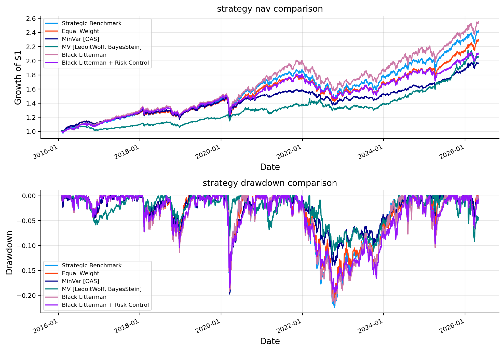
final_returns_df = pd.DataFrame(returns_by_strategy)[final_strategy_names].dropna(how="all").fillna(0.0)
drawdown_summary = drawdown_summary_table(final_returns_df)
if drawdown_summary.empty:
rows = []
for name in final_strategy_names:
nav = simple_nav(final_returns_df[name]); dd = simple_drawdown(nav)
rows.append({"strategy": name, "max_drawdown": dd.min(), "date_of_max_drawdown": dd.idxmin(), "current_drawdown": dd.iloc[-1], "average_drawdown": dd.mean()})
drawdown_summary = pd.DataFrame(rows).set_index("strategy")
display(drawdown_summary.round(4))
stress_windows = {"2018_Q4_selloff": ("2018-10-01", "2018-12-31"), "COVID_crash": ("2020-02-19", "2020-03-23"), "2022_rates_inflation": ("2022-01-03", "2022-10-14"), "2023_growth_rebound": ("2023-01-01", "2023-07-31")}
stress_result = stress_table(final_returns_df, windows=stress_windows, worst_only=False)
fig, axes = plt.subplots(2, 2, figsize=(11, 6), constrained_layout=True)
for ax, window in zip(axes.ravel(), stress_windows.keys()):
plot_stress_bar(ax, stress_result, window=window, metric="cum_return", ascending=True)
fig.suptitle("stress-window cumulative returns", y=1.02)
plt.show()
var_es = var_es_table(final_returns_df, alpha=0.05, methods=("hist", "fhs"))
display(var_es.round(4))
best_var_method = {name: "fhs" for name in final_strategy_names}
var_backtest_internal = var_backtest_table(final_returns_df, alpha=0.05, methods=("hist", "cf", "fhs"), lookback=252)
picked = best_var_methods(var_backtest_internal)
if isinstance(picked, dict):
best_var_method.update({k: picked.get(k, "fhs") for k in final_strategy_names})
fig, ax = plt.subplots(figsize=(10, 4))
for name in final_strategy_names:
method = best_var_method.get(name, "fhs")
method = method if method in ["hist", "cf", "fhs"] else "fhs"
rv = rolling_var(final_returns_df[name], alpha=0.05, lookback=252, method=method)
rv.plot(ax=ax, lw=1.0, label=f"{name} ({method})")
ax.set_title("rolling 5 percent var"); ax.set_ylabel("daily return threshold"); ax.set_xlabel("date"); ax.legend(ncol=2, fontsize=7)
plt.tight_layout()
plt.show()| max_dd | longest_dd_days | avg_recovery_days | ulcer_index | |
|---|---|---|---|---|
| object | ||||
| Equal Weight | -0.2041 | 667 | 14.7219 | 0.0571 |
| Learned-Confidence BL | -0.2207 | 598 | 13.5122 | 0.0670 |
| MV (LedoitWolf, BayesStein) | -0.1181 | 549 | 18.6555 | 0.0388 |
| MinVar (OAS) | -0.1975 | 668 | 15.2414 | 0.0423 |
| Strategic Benchmark | -0.2242 | 598 | 12.4830 | 0.0611 |
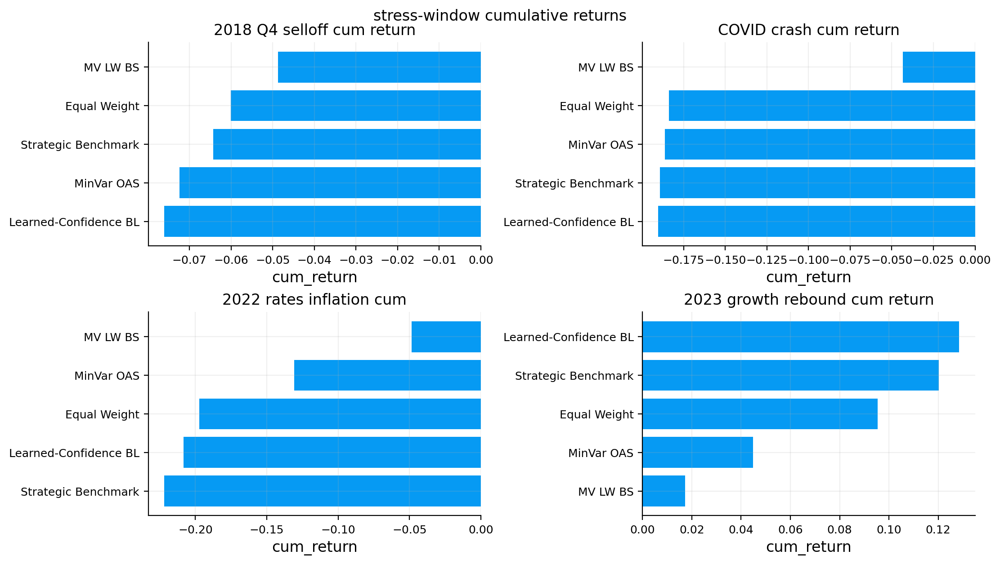
| hist_var5 | hist_es5 | fhs_var5 | fhs_es5 | |
|---|---|---|---|---|
| object | ||||
| Equal Weight | 0.0086 | 0.0139 | 0.0099 | 0.0152 |
| Learned-Confidence BL | 0.0100 | 0.0158 | 0.0122 | 0.0177 |
| MV (LedoitWolf, BayesStein) | 0.0064 | 0.0106 | 0.0118 | 0.0176 |
| MinVar (OAS) | 0.0066 | 0.0111 | 0.0074 | 0.0114 |
| Strategic Benchmark | 0.0093 | 0.0151 | 0.0109 | 0.0172 |
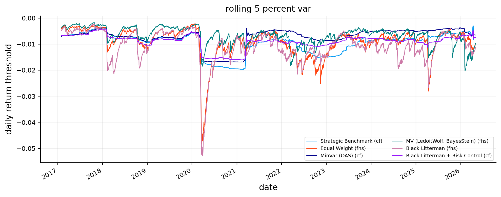
candidate_active_count = candidate_view_log.groupby("date").size().reindex(rebalance_dates[:-1], fill_value=0) if not candidate_view_log.empty else pd.Series(0, index=rebalance_dates[:-1])
selected_active_count = selected_view_log.groupby("date").size().reindex(rebalance_dates[:-1], fill_value=0) if not selected_view_log.empty else pd.Series(0, index=rebalance_dates[:-1])
fig, ax = plt.subplots(figsize=(8, 3))
candidate_active_count.plot(ax=ax, lw=1.3, label="candidate views")
selected_active_count.plot(ax=ax, lw=1.3, label="selected views")
ax.set_title("candidate versus selected view count")
ax.set_ylabel("views")
ax.set_xlabel("date")
ax.legend()
plt.tight_layout(); plt.show()
selected_payoff_history = build_view_payoff_history(selected_view_log, returns[assets]) if not selected_view_log.empty else pd.DataFrame()
if not selected_view_log.empty:
selected_family_diagnostics = selected_view_log.groupby("view_family").agg(
selected_count=("view_name", "size"),
selected_rebalance_count=("date", "nunique"),
avg_q_tilt=("q_tilt_final", "mean"),
avg_abs_q_tilt=("q_tilt_final", lambda x: np.mean(np.abs(x))),
avg_confidence=("confidence", "mean"),
avg_confluence=("confluence_score", "mean"),
avg_selected_score=("selected_score", "mean"),
).sort_values("selected_count", ascending=False)
selected_family_diagnostics["selected_share_of_rebalances"] = selected_family_diagnostics["selected_rebalance_count"] / len(rebalance_dates[:-1])
display(selected_family_diagnostics.round(4))
if not selected_payoff_history.empty:
realized_payoff_by_family = selected_payoff_history.groupby("view_family").agg(
realized_count=("payoff_ann", "size"),
hit_rate=("hit", "mean"),
avg_forward_payoff_ann=("payoff_ann", "mean"),
payoff_vol=("payoff_ann", "std"),
avg_q_tilt=("q_tilt", "mean"),
)
realized_payoff_by_family["payoff_ir"] = realized_payoff_by_family["avg_forward_payoff_ann"] / realized_payoff_by_family["payoff_vol"].replace(0.0, np.nan)
display(realized_payoff_by_family.sort_values("realized_count", ascending=False).round(4))
def active_return_conditional_on_family(strategy_name):
active = (combined_results[strategy_name]["returns"] - combined_results["Strategic Benchmark"]["returns"]).dropna()
rows = []
for family, grp in selected_view_log.groupby("view_family"):
horizon_returns = []
for dt in pd.to_datetime(grp["date"].drop_duplicates()):
pos = active.index.searchsorted(pd.Timestamp(dt), side="right")
if pos >= len(active):
continue
end = min(pos + view_horizon_days, len(active))
if end <= pos:
continue
horizon_returns.append(float((1.0 + active.iloc[pos:end]).prod() - 1.0))
if horizon_returns:
vals = pd.Series(horizon_returns, dtype=float)
rows.append({
"strategy": strategy_name,
"view_family": family,
"observations": int(len(vals)),
"avg_active_return_horizon": float(vals.mean()),
"active_return_ann": float(np.log1p(np.clip(vals.mean(), -0.95, None)) * annualization / view_horizon_days),
"hit_rate": float((vals > 0).mean()),
})
return pd.DataFrame(rows)
active_conditional = active_return_conditional_on_family("Learned-Confidence BL")
if not active_conditional.empty:
display(active_conditional.sort_values(["strategy", "active_return_ann"], ascending=[True, False]).round(4))
redundancy_rows = []
latest_corr = pd.DataFrame()
for dt, grp in selected_view_log.groupby("date"):
p_rows = []
labels = []
for _, row in grp.iterrows():
p_rows.append(pd.Series(row.get("p_vector", {}), dtype=float).reindex(assets).fillna(0.0))
labels.append(row["view_family"])
if len(p_rows) < 2:
redundancy_rows.append({"date": pd.Timestamp(dt), "selected_views": len(p_rows), "max_abs_p_vector_corr": 0.0, "avg_abs_p_vector_corr": 0.0})
continue
p_frame = pd.DataFrame(p_rows, index=labels)
corr = p_frame.T.corr().replace([np.inf, -np.inf], np.nan)
vals = corr.where(~np.eye(len(corr), dtype=bool)).stack().abs()
redundancy_rows.append({"date": pd.Timestamp(dt), "selected_views": len(p_rows), "max_abs_p_vector_corr": float(vals.max()) if len(vals) else 0.0, "avg_abs_p_vector_corr": float(vals.mean()) if len(vals) else 0.0})
if pd.Timestamp(dt) == pd.Timestamp(selected_view_log["date"].max()):
latest_corr = corr
redundancy_summary = pd.DataFrame(redundancy_rows).set_index("date")
display(redundancy_summary.describe().round(4))
if not latest_corr.empty:
display(latest_corr.round(3))
else:
print("no selected views were active")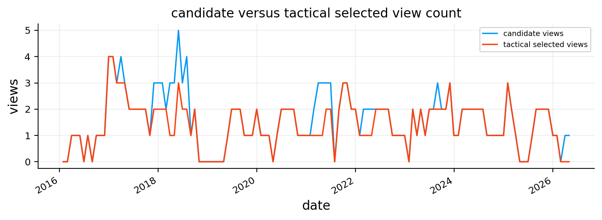
| selected_count | selected_rebalance_count | avg_q_tilt | avg_abs_q_tilt | avg_confidence | avg_confluence | avg_selected_score | selected_share_of_rebalances | |
|---|---|---|---|---|---|---|---|---|
| view_family | ||||||||
| risk_adj_momentum | 123 | 123 | 0.0103 | 0.0103 | 0.4487 | 0.7308 | 0.6403 | 0.9919 |
| dual_momentum | 106 | 106 | 0.0120 | 0.0120 | 0.4214 | 0.6667 | 0.5755 | 0.8548 |
| duration_quality | 66 | 66 | 0.0020 | 0.0020 | 0.3496 | 0.3376 | 0.3737 | 0.5323 |
| credit_switch | 57 | 57 | 0.0061 | 0.0061 | 0.5092 | 0.5648 | 0.6041 | 0.4597 |
| liquid_leadership | 48 | 48 | 0.0215 | 0.0215 | 0.5437 | 0.3768 | 0.5742 | 0.3871 |
| international_rotation | 38 | 38 | 0.0047 | 0.0047 | 0.3069 | 0.5114 | 0.4247 | 0.3065 |
| growth_duration | 28 | 28 | 0.0115 | 0.0115 | 0.4689 | 0.3885 | 0.4846 | 0.2258 |
| reflation_breadth | 21 | 21 | 0.0242 | 0.0242 | 0.6453 | 0.6587 | 0.6735 | 0.1694 |
| inflation_rotation | 19 | 19 | 0.0096 | 0.0096 | 0.4265 | 0.3823 | 0.4723 | 0.1532 |
| correlation_stress | 4 | 4 | 0.0064 | 0.0064 | 0.4418 | 0.3214 | 0.4684 | 0.0323 |
| realized_count | hit_rate | avg_forward_payoff_ann | payoff_vol | avg_q_tilt | payoff_ir | |
|---|---|---|---|---|---|---|
| view_family | ||||||
| risk_adj_momentum | 122 | 0.5738 | 0.0356 | 0.4231 | 0.0103 | 0.0840 |
| dual_momentum | 105 | 0.5905 | 0.0563 | 0.3870 | 0.0119 | 0.1454 |
| duration_quality | 66 | 0.3333 | -0.0501 | 0.3234 | 0.0020 | -0.1550 |
| credit_switch | 56 | 0.5357 | 0.0383 | 0.5335 | 0.0061 | 0.0718 |
| liquid_leadership | 48 | 0.6250 | 0.0562 | 0.4198 | 0.0215 | 0.1339 |
| international_rotation | 38 | 0.4474 | -0.0775 | 0.3486 | 0.0047 | -0.2224 |
| growth_duration | 28 | 0.4286 | 0.0805 | 0.4631 | 0.0115 | 0.1738 |
| reflation_breadth | 20 | 0.7000 | 0.1273 | 0.3458 | 0.0238 | 0.3682 |
| inflation_rotation | 18 | 0.5000 | 0.0339 | 0.6572 | 0.0094 | 0.0516 |
| correlation_stress | 4 | 0.7500 | 0.3701 | 0.6904 | 0.0064 | 0.5361 |
| strategy | view_family | observations | avg_active_return_horizon | active_return_ann | hit_rate | |
|---|---|---|---|---|---|---|
| 4 | Learned-Confidence BL | growth_duration | 28 | 0.0038 | 0.0459 | 0.7143 |
| 0 | Learned-Confidence BL | correlation_stress | 4 | 0.0033 | 0.0393 | 1.0000 |
| 5 | Learned-Confidence BL | inflation_rotation | 19 | 0.0027 | 0.0326 | 0.7895 |
| 8 | Learned-Confidence BL | reflation_breadth | 21 | 0.0020 | 0.0244 | 0.6190 |
| 3 | Learned-Confidence BL | duration_quality | 66 | 0.0013 | 0.0157 | 0.6061 |
| 7 | Learned-Confidence BL | liquid_leadership | 48 | 0.0011 | 0.0130 | 0.5625 |
| 9 | Learned-Confidence BL | risk_adj_momentum | 123 | 0.0009 | 0.0113 | 0.5854 |
| 2 | Learned-Confidence BL | dual_momentum | 106 | 0.0008 | 0.0099 | 0.5943 |
| 1 | Learned-Confidence BL | credit_switch | 57 | -0.0001 | -0.0015 | 0.5088 |
| 6 | Learned-Confidence BL | international_rotation | 38 | -0.0012 | -0.0150 | 0.4211 |
| selected_views | max_abs_p_vector_corr | avg_abs_p_vector_corr | |
|---|---|---|---|
| count | 124.0000 | 124.0000 | 124.0000 |
| mean | 4.1129 | 0.6336 | 0.3434 |
| std | 0.9214 | 0.1427 | 0.1070 |
| min | 1.0000 | 0.0000 | 0.0000 |
| 25% | 4.0000 | 0.5774 | 0.2715 |
| 50% | 4.0000 | 0.6455 | 0.3317 |
| 75% | 5.0000 | 0.7193 | 0.4073 |
| max | 5.0000 | 0.8281 | 0.6291 |
| dual_momentum | reflation_breadth | credit_switch | risk_adj_momentum | inflation_rotation | |
|---|---|---|---|---|---|
| dual_momentum | 1.000 | 0.333 | 0.298 | 0.810 | 0.756 |
| reflation_breadth | 0.333 | 1.000 | 0.683 | 0.580 | 0.172 |
| credit_switch | 0.298 | 0.683 | 1.000 | 0.540 | 0.252 |
| risk_adj_momentum | 0.810 | 0.580 | 0.540 | 1.000 | 0.612 |
| inflation_rotation | 0.756 | 0.172 | 0.252 | 0.612 | 1.000 |
latest_post_date = posterior_log["date"].max() if not posterior_log.empty else pd.Timestamp(rebalance_dates[-2])
prior_latest = prior_mu_by_date[pd.Timestamp(latest_post_date)].reindex(assets)
posterior_clarity = pd.DataFrame({
"asset": assets,
"benchmark_weight": benchmark_w.reindex(assets).values,
"prior_mu": prior_latest.values,
"post_mu_learned_confidence_bl": post_mu_store.get(("Learned-Confidence BL", latest_post_date), prior_latest).reindex(assets).values,
})
posterior_clarity["posterior_shift_learned_confidence_bl"] = posterior_clarity["post_mu_learned_confidence_bl"] - posterior_clarity["prior_mu"]
display(posterior_clarity.round(4))
shift_cols = {}
for dt in sorted({key[1] for key in post_mu_store if key[0] == "Learned-Confidence BL"}):
shift_cols[dt] = post_mu_store[("Learned-Confidence BL", dt)].reindex(assets) - prior_mu_by_date[dt].reindex(assets)
learned_confidence_shift = pd.DataFrame(shift_cols)
if not learned_confidence_shift.empty:
selected_shift = learned_confidence_shift.iloc[:, ::max(1, learned_confidence_shift.shape[1] // 36)]
fig, ax = plt.subplots(figsize=(10, 4))
im = ax.imshow(selected_shift, aspect="auto", cmap="coolwarm", vmin=-0.08, vmax=0.08)
ax.set_title("Learned-Confidence BL posterior shift heatmap")
ax.set_yticks(range(len(selected_shift.index)), selected_shift.index)
ax.set_xticks(range(len(selected_shift.columns)), [d.strftime("%Y-%m") for d in selected_shift.columns], rotation=90, fontsize=7)
fig.colorbar(im, ax=ax, label="post_mu - prior_mu")
plt.tight_layout(); plt.show()| asset | benchmark_weight | prior_mu | post_mu_learned_confidence_bl | posterior_shift_learned_confidence_bl | |
|---|---|---|---|---|---|
| 0 | SPY | 0.2222 | 0.1142 | 0.1183 | 0.0041 |
| 1 | QQQ | 0.0808 | 0.1406 | 0.1322 | -0.0084 |
| 2 | IWM | 0.0404 | 0.1526 | 0.1819 | 0.0293 |
| 3 | EFA | 0.0909 | 0.1602 | 0.1884 | 0.0282 |
| 4 | EEM | 0.0505 | 0.2100 | 0.2270 | 0.0170 |
| 5 | TLT | 0.0808 | 0.0394 | 0.0473 | 0.0079 |
| 6 | IEF | 0.0808 | 0.0263 | 0.0316 | 0.0053 |
| 7 | SHY | 0.0505 | 0.0079 | 0.0093 | 0.0014 |
| 8 | AGG | 0.1010 | 0.0241 | 0.0287 | 0.0047 |
| 9 | LQD | 0.0505 | 0.0360 | 0.0421 | 0.0062 |
| 10 | HYG | 0.0404 | 0.0371 | 0.0426 | 0.0055 |
| 11 | GLD | 0.0505 | 0.1574 | 0.2017 | 0.0443 |
| 12 | VNQ | 0.0404 | 0.0796 | 0.1204 | 0.0409 |
| 13 | DBC | 0.0202 | -0.0810 | -0.0654 | 0.0155 |
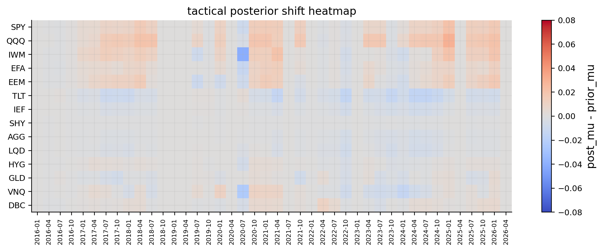
if not candidate_view_log.empty:
candidate_counts = candidate_view_log.groupby("view_family").size().rename("candidate_count")
display_name = candidate_view_log.groupby("view_family")["family_display_name"].agg(lambda x: x.mode().iloc[0] if len(x.mode()) else x.iloc[0]) if "family_display_name" in candidate_view_log.columns else pd.Series(dtype=object)
econ_label = candidate_view_log.groupby("view_family")["economic_label"].agg(lambda x: x.mode().iloc[0] if len(x.mode()) else x.iloc[0])
risk_mode = candidate_view_log.groupby("view_family")["risk_orientation"].agg(lambda x: x.mode().iloc[0] if len(x.mode()) else x.iloc[0])
else:
candidate_counts = pd.Series(dtype=float, name="candidate_count"); display_name = pd.Series(dtype=object); econ_label = pd.Series(dtype=object); risk_mode = pd.Series(dtype=object)
if not selected_view_log.empty:
selected_counts = selected_view_log.groupby("view_family").size().rename("selected_count")
avg_abs_q = selected_view_log.groupby("view_family")["q_tilt_final"].agg(lambda x: np.mean(np.abs(x))).rename("avg_abs_q")
avg_q_tilt = selected_view_log.groupby("view_family")["q_tilt_final"].mean().rename("avg_q_tilt")
else:
selected_counts = pd.Series(dtype=float, name="selected_count"); avg_abs_q = pd.Series(dtype=float, name="avg_abs_q"); avg_q_tilt = pd.Series(dtype=float, name="avg_q_tilt")
if not all_payoff_history.empty:
payoff_stats = all_payoff_history.groupby("view_family").agg(hit_rate=("hit", "mean"), avg_payoff=("payoff", "mean"), payoff_vol=("payoff", "std"))
payoff_stats["payoff_ir"] = payoff_stats["avg_payoff"] / payoff_stats["payoff_vol"].replace(0.0, np.nan)
recent_hits = all_payoff_history.sort_values("date").groupby("view_family").tail(6).groupby("view_family")["hit"].mean().rename("recent_hit_rate")
stress_stats = all_payoff_history[all_payoff_history.get("stress_state", False).astype(bool)].groupby("view_family").agg(stress_obs=("hit", "size"), stress_hit_rate=("hit", "mean"), stress_avg_payoff=("payoff", "mean")) if "stress_state" in all_payoff_history.columns else pd.DataFrame()
else:
payoff_stats = pd.DataFrame(columns=["hit_rate", "avg_payoff", "payoff_vol", "payoff_ir"]); recent_hits = pd.Series(dtype=float, name="recent_hit_rate"); stress_stats = pd.DataFrame()
conf_means = confidence_log.groupby("view_family")["confidence"].mean().rename("avg_tactical_confidence") if not confidence_log.empty else pd.Series(dtype=float)
score_means = confidence_log.groupby("view_family")["selected_score"].mean().rename("avg_selected_score") if not confidence_log.empty and "selected_score" in confidence_log.columns else pd.Series(dtype=float)
reliability = pd.concat([display_name.rename("display_name"), candidate_counts, selected_counts, econ_label.rename("economic_label"), payoff_stats, avg_abs_q, avg_q_tilt, conf_means, score_means, recent_hits, stress_stats, risk_mode.rename("risk_orientation_mode")], axis=1)
reliability["selected_share"] = reliability["selected_count"] / reliability["candidate_count"].replace(0.0, np.nan)
def reliability_label(row):
count = row.get("candidate_count", 0); hit_rate = row.get("hit_rate", np.nan); payoff_ir = row.get("payoff_ir", np.nan); risk = row.get("risk_orientation_mode", "neutral")
if count < 10:
return "low evidence"
if np.isfinite(payoff_ir) and np.isfinite(hit_rate) and payoff_ir > 0.03 and hit_rate >= 0.52:
return "reliable positive"
if (np.isfinite(hit_rate) and hit_rate < 0.52) or (np.isfinite(payoff_ir) and payoff_ir <= 0.03):
return "weak reliability, soft scaled"
if risk == "risk_off":
return "mostly defensive"
if risk == "risk_on":
return "mostly risk-on"
return "mixed but useful"
def final_reliability_decision(row):
count = row.get("candidate_count", 0)
selected_count = row.get("selected_count", 0)
hit_rate = row.get("hit_rate", np.nan)
payoff_ir = row.get("payoff_ir", np.nan)
recent_hit_rate = row.get("recent_hit_rate", np.nan)
if np.isfinite(recent_hit_rate) and recent_hit_rate < 0.35 and count >= 8:
return "soft-scale recent weakness"
if count >= 12 and np.isfinite(hit_rate) and hit_rate < 0.52:
return "soft-scale low hit rate"
if count >= 12 and np.isfinite(payoff_ir) and payoff_ir <= 0.03:
return "soft-scale low payoff IR"
if count < 8:
return "probation, soft q"
if selected_count > 0:
return "ranked eligible"
return "candidate only"
reliability["interpretation"] = reliability.apply(reliability_label, axis=1)
reliability["final_decision"] = reliability.apply(final_reliability_decision, axis=1)
reliability_cols = ["display_name", "candidate_count", "selected_count", "selected_share", "hit_rate", "avg_payoff", "payoff_vol", "payoff_ir", "avg_abs_q", "avg_q_tilt", "avg_tactical_confidence", "avg_selected_score", "recent_hit_rate", "stress_obs", "stress_hit_rate", "stress_avg_payoff", "risk_orientation_mode", "interpretation", "final_decision"]
reliability = reliability[[col for col in reliability_cols if col in reliability.columns]].sort_values(["selected_count", "candidate_count"], ascending=False)
display(reliability.round(4))| display_name | candidate_count | selected_count | selected_share | hit_rate | avg_payoff | payoff_vol | payoff_ir | avg_abs_q | avg_q_tilt | avg_tactical_confidence | avg_selected_score | recent_hit_rate | stress_obs | stress_hit_rate | stress_avg_payoff | risk_orientation_mode | interpretation | final_decision | |
|---|---|---|---|---|---|---|---|---|---|---|---|---|---|---|---|---|---|---|---|
| view_family | |||||||||||||||||||
| risk_adj_momentum | Risk-adjusted momentum | 124 | 123 | 0.9919 | 0.5691 | 0.0327 | 0.4225 | 0.0775 | 0.0103 | 0.0103 | 0.4487 | 0.6403 | 0.6667 | 51 | 0.5098 | -0.0482 | neutral | reliable positive | ranked eligible |
| dual_momentum | Dual momentum | 117 | 106 | 0.9060 | 0.5690 | 0.0475 | 0.4229 | 0.1122 | 0.0120 | 0.0120 | 0.4214 | 0.5755 | 1.0000 | 49 | 0.5102 | -0.0052 | neutral | reliable positive | ranked eligible |
| duration_quality | Duration quality | 77 | 66 | 0.8571 | 0.3684 | -0.0326 | 0.3195 | -0.1021 | 0.0020 | 0.0020 | 0.3496 | 0.3737 | 0.3333 | 31 | 0.3871 | -0.0106 | risk_off | weak reliability, soft scaled | soft-scale recent weakness |
| credit_switch | Credit switch | 58 | 57 | 0.9828 | 0.5439 | 0.0508 | 0.5370 | 0.0946 | 0.0061 | 0.0061 | 0.5092 | 0.6041 | 0.6667 | 23 | 0.4348 | -0.0331 | risk_on | reliable positive | ranked eligible |
| liquid_leadership | Liquidity leadership | 50 | 48 | 0.9600 | 0.6400 | 0.0578 | 0.4113 | 0.1404 | 0.0215 | 0.0215 | 0.5437 | 0.5742 | 0.5000 | 21 | 0.6667 | 0.0741 | risk_on | reliable positive | ranked eligible |
| international_rotation | International rotation | 45 | 38 | 0.8444 | 0.4318 | -0.0771 | 0.3395 | -0.2270 | 0.0047 | 0.0047 | 0.3069 | 0.4247 | 0.5000 | 14 | 0.3571 | -0.1804 | risk_off | weak reliability, soft scaled | soft-scale low hit rate |
| growth_duration | Growth-duration barbell | 28 | 28 | 1.0000 | 0.4286 | 0.0805 | 0.4631 | 0.1738 | 0.0115 | 0.0115 | 0.4689 | 0.4846 | 0.3333 | 11 | 0.4545 | 0.2066 | risk_on | weak reliability, soft scaled | soft-scale recent weakness |
| reflation_breadth | Reflation breadth | 21 | 21 | 1.0000 | 0.7000 | 0.1273 | 0.3458 | 0.3682 | 0.0242 | 0.0242 | 0.6453 | 0.6735 | 0.3333 | 2 | 1.0000 | 0.2215 | risk_on | reliable positive | soft-scale recent weakness |
| inflation_rotation | Inflation rotation | 20 | 19 | 0.9500 | 0.5263 | 0.0345 | 0.6387 | 0.0540 | 0.0096 | 0.0096 | 0.4265 | 0.4723 | 0.5000 | 6 | 0.3333 | -0.0504 | neutral | reliable positive | ranked eligible |
| correlation_stress | Correlation stress | 4 | 4 | 1.0000 | 0.7500 | 0.3701 | 0.6904 | 0.5361 | 0.0064 | 0.0064 | 0.4418 | 0.4684 | 0.7500 | 4 | 0.7500 | 0.3701 | risk_off | low evidence | probation, soft q |
decision_table = reliability[[col for col in ["display_name", "candidate_count", "selected_count", "selected_share", "hit_rate", "payoff_ir", "recent_hit_rate", "avg_tactical_confidence", "avg_selected_score", "risk_orientation_mode", "interpretation", "final_decision"] if col in reliability.columns]].copy()
display(decision_table.round(4))
if not selection_log.empty:
selection_reason_table = selection_log.groupby("scale_reason").size().rename("count").sort_values(ascending=False).to_frame()
selection_reason_table["share"] = selection_reason_table["count"] / selection_reason_table["count"].sum()
display(selection_reason_table.round(4))
monthly_selection_diagnostics = selection_log.groupby("date").agg(
candidate_views=("view_family", "size"),
selected_views=("kept", "sum"),
skipped_by_reliability=("scale_reason", lambda x: x.astype(str).str.contains("reliability skip").sum()),
skipped_by_redundancy=("scale_reason", lambda x: x.astype(str).str.contains("redundancy gate").sum()),
skipped_by_direction=("scale_reason", lambda x: x.astype(str).str.contains("direction crowding").sum()),
skipped_by_missing_data=("scale_reason", lambda x: x.astype(str).str.contains("missing data").sum()),
)
display(monthly_selection_diagnostics.describe().round(3))
selected_distribution = selection_log[selection_log["kept"]].groupby("view_family").size().rename("selected_count").sort_values(ascending=False).to_frame()
display(selected_distribution)| display_name | candidate_count | selected_count | selected_share | hit_rate | payoff_ir | recent_hit_rate | avg_tactical_confidence | avg_selected_score | risk_orientation_mode | interpretation | final_decision | |
|---|---|---|---|---|---|---|---|---|---|---|---|---|
| view_family | ||||||||||||
| risk_adj_momentum | Risk-adjusted momentum | 124 | 123 | 0.9919 | 0.5691 | 0.0775 | 0.6667 | 0.4487 | 0.6403 | neutral | reliable positive | ranked eligible |
| dual_momentum | Dual momentum | 117 | 106 | 0.9060 | 0.5690 | 0.1122 | 1.0000 | 0.4214 | 0.5755 | neutral | reliable positive | ranked eligible |
| duration_quality | Duration quality | 77 | 66 | 0.8571 | 0.3684 | -0.1021 | 0.3333 | 0.3496 | 0.3737 | risk_off | weak reliability, soft scaled | soft-scale recent weakness |
| credit_switch | Credit switch | 58 | 57 | 0.9828 | 0.5439 | 0.0946 | 0.6667 | 0.5092 | 0.6041 | risk_on | reliable positive | ranked eligible |
| liquid_leadership | Liquidity leadership | 50 | 48 | 0.9600 | 0.6400 | 0.1404 | 0.5000 | 0.5437 | 0.5742 | risk_on | reliable positive | ranked eligible |
| international_rotation | International rotation | 45 | 38 | 0.8444 | 0.4318 | -0.2270 | 0.5000 | 0.3069 | 0.4247 | risk_off | weak reliability, soft scaled | soft-scale low hit rate |
| growth_duration | Growth-duration barbell | 28 | 28 | 1.0000 | 0.4286 | 0.1738 | 0.3333 | 0.4689 | 0.4846 | risk_on | weak reliability, soft scaled | soft-scale recent weakness |
| reflation_breadth | Reflation breadth | 21 | 21 | 1.0000 | 0.7000 | 0.3682 | 0.3333 | 0.6453 | 0.6735 | risk_on | reliable positive | soft-scale recent weakness |
| inflation_rotation | Inflation rotation | 20 | 19 | 0.9500 | 0.5263 | 0.0540 | 0.5000 | 0.4265 | 0.4723 | neutral | reliable positive | ranked eligible |
| correlation_stress | Correlation stress | 4 | 4 | 1.0000 | 0.7500 | 0.5361 | 0.7500 | 0.4418 | 0.4684 | risk_off | low evidence | probation, soft q |
| count | share | |
|---|---|---|
| scale_reason | ||
| kept | 510 | 0.9375 |
| below top selected views | 22 | 0.0404 |
| redundancy gate: exposure cosine similarity | 12 | 0.0221 |
| candidate_views | selected_views | skipped_by_reliability | skipped_by_redundancy | skipped_by_direction | skipped_by_missing_data | |
|---|---|---|---|---|---|---|
| count | 124.000 | 124.000 | 124.0 | 124.000 | 124.0 | 124.0 |
| mean | 4.387 | 4.113 | 0.0 | 0.097 | 0.0 | 0.0 |
| std | 1.167 | 0.921 | 0.0 | 0.297 | 0.0 | 0.0 |
| min | 1.000 | 1.000 | 0.0 | 0.000 | 0.0 | 0.0 |
| 25% | 4.000 | 4.000 | 0.0 | 0.000 | 0.0 | 0.0 |
| 50% | 4.000 | 4.000 | 0.0 | 0.000 | 0.0 | 0.0 |
| 75% | 5.000 | 5.000 | 0.0 | 0.000 | 0.0 | 0.0 |
| max | 7.000 | 5.000 | 0.0 | 1.000 | 0.0 | 0.0 |
| selected_count | |
|---|---|
| view_family | |
| risk_adj_momentum | 123 |
| dual_momentum | 106 |
| duration_quality | 66 |
| credit_switch | 57 |
| liquid_leadership | 48 |
| international_rotation | 38 |
| growth_duration | 28 |
| reflation_breadth | 21 |
| inflation_rotation | 19 |
| correlation_stress | 4 |
learned_confidence_weights = combined_results["Learned-Confidence BL"]["weights"].reindex(columns=assets)
benchmark_aligned = benchmark_w.reindex(assets).fillna(0.0)
active_w_learned_confidence = learned_confidence_weights.subtract(benchmark_aligned, axis=1)
latest_active_w = active_w_learned_confidence.iloc[-1].sort_values()
display(pd.DataFrame({"asset": latest_active_w.index, "active_weight_learned_confidence_bl": latest_active_w.values}).round(4))
frame = active_w_learned_confidence.iloc[-48:].T
fig, ax = plt.subplots(figsize=(10, 4))
im = ax.imshow(frame, aspect="auto", cmap="coolwarm", vmin=-0.15, vmax=0.15)
ax.set_title("active weights: Learned-Confidence BL")
ax.set_yticks(range(len(frame.index)), frame.index)
ax.set_xticks(range(len(frame.columns)), [d.strftime("%Y-%m") for d in frame.columns], rotation=90, fontsize=7)
fig.colorbar(im, ax=ax, label="active weight")
plt.tight_layout(); plt.show()| asset | active_weight_learned_confidence_bl | |
|---|---|---|
| 0 | SPY | -0.1443 |
| 1 | QQQ | -0.0808 |
| 2 | IEF | -0.0793 |
| 3 | EEM | -0.0232 |
| 4 | LQD | -0.0222 |
| 5 | AGG | -0.0198 |
| 6 | SHY | -0.0096 |
| 7 | HYG | -0.0006 |
| 8 | DBC | 0.0298 |
| 9 | GLD | 0.0360 |
| 10 | VNQ | 0.0396 |
| 11 | TLT | 0.0558 |
| 12 | EFA | 0.1091 |
| 13 | IWM | 0.1096 |
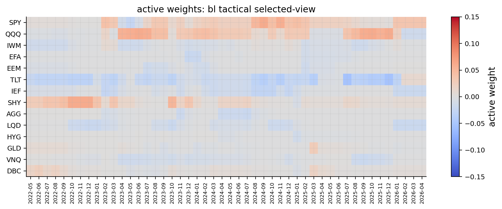
def active_risk_series(weights):
rows = []
for dt, row in weights.iterrows():
dt = pd.Timestamp(dt)
if dt not in cov_by_date:
continue
diff = row.reindex(assets).fillna(0.0).values - benchmark_aligned.values
cov_ann = cov_by_date[dt].loc[assets, assets].values
rows.append((dt, float(np.sqrt(max(diff @ cov_ann @ diff, 0.0)))))
return pd.Series(dict(rows)).sort_index()
active_diagnostics = pd.DataFrame({
"avg_active_risk": {
"Learned-Confidence BL": active_risk_series(combined_results["Learned-Confidence BL"]["weights"].reindex(columns=assets)).mean(),
},
"avg_turnover": {
"Learned-Confidence BL": combined_results["Learned-Confidence BL"]["turnover"].mean(),
},
})
display(active_diagnostics.round(4))| avg_active_risk | avg_turnover | |
|---|---|---|
| Learned-Confidence BL | 0.0249 | 0.1761 |
Sector ETF transfer with QuantFinLab
The primary Learned-Confidence Black-Litterman model above was developed on the cross-asset ETF universe and is left intact as the accepted result. This final section uses the reusable QuantFinLab components on a secondary sector ETF universe.
Data selection and cleaning remain visible here. The BL engine, view objects, learned confidence, table helpers, plotting helpers, walk-forward baselines, and common backtest timing/cost handling are delegated to the library. The goal is transferability of the engine, not a claim that sector rotation is the same problem as the cross-asset allocation above.
A. Imports
from quantfinlab.portfolio import black_litterman as bl
from quantfinlab.portfolio import views as bl_views
from quantfinlab.plotting import portfolio as port_plots
from quantfinlab.backtest.portfolio import run_many_weights_backtests
from quantfinlab.portfolio.walkforward import run_walkforward_grid
from quantfinlab.portfolio import prices_to_returns, make_rebalance_datesB. Sector data setup
sector_start = "2018-07-01"
requested_sector_assets = [
"XLK", "XLC", "XLY", "XLF", "XLI",
"XLE", "XLB", "XLV", "XLP", "XLU", "XLRE",
]
requested_signal_assets = [
"SPY", "QQQ", "IWM",
"TLT", "IEF", "SHY",
"LQD", "HYG",
"GLD", "DBC", "UUP",
]
sector_assets = [ticker for ticker in requested_sector_assets if ticker in close_all.columns]
sector_signal_assets = [ticker for ticker in requested_signal_assets if ticker in close_all.columns]
if len(sector_assets) < 8:
raise ValueError(f"not enough sector ETFs are available: {sector_assets}")
sector_coverage = bl.data_coverage_table(
close_all,
tradable_assets=sector_assets,
signal_assets=sector_signal_assets,
start=sector_start,
)
display(sector_coverage.round(4))
sector_close_raw = close_all.loc[pd.Timestamp(sector_start):, sector_assets].copy()
sector_close = sector_close_raw.ffill(limit=3).dropna(how="any")
sector_returns = prices_to_returns(sector_close, kind="simple").replace([np.inf, -np.inf], np.nan).dropna(how="all").fillna(0.0)
sector_close = sector_close.reindex(sector_returns.index).ffill(limit=3)
sector_signal_tickers = list(dict.fromkeys(sector_assets + sector_signal_assets))
sector_signal_close = (
close_all.loc[sector_returns.index.min():, sector_signal_tickers]
.ffill(limit=3)
.reindex(sector_returns.index)
.ffill(limit=3)
)
sector_signal_returns = (
prices_to_returns(sector_signal_close, kind="simple")
.replace([np.inf, -np.inf], np.nan)
.reindex(sector_returns.index)
.fillna(0.0)
)
sector_rebalance_dates = make_rebalance_dates(sector_returns.index, freq="ME", min_history_days=504)
print("sector assets:", sector_assets)
print("sector signal assets:", sector_signal_assets)
print("sector return panel:", sector_returns.shape, sector_returns.index.min().date(), "to", sector_returns.index.max().date())
print("sector rebalance dates:", len(sector_rebalance_dates), sector_rebalance_dates[0].date(), "to", sector_rebalance_dates[-1].date())| ticker | role | first_date | last_date | observations | missing_pct_after_first_valid | included | |
|---|---|---|---|---|---|---|---|
| 0 | XLK | tradable | 2018-07-02 | 2026-05-01 | 1969 | 0.0 | True |
| 1 | XLC | tradable | 2018-07-02 | 2026-05-01 | 1969 | 0.0 | True |
| 2 | XLY | tradable | 2018-07-02 | 2026-05-01 | 1969 | 0.0 | True |
| 3 | XLF | tradable | 2018-07-02 | 2026-05-01 | 1969 | 0.0 | True |
| 4 | XLI | tradable | 2018-07-02 | 2026-05-01 | 1969 | 0.0 | True |
| 5 | XLE | tradable | 2018-07-02 | 2026-05-01 | 1969 | 0.0 | True |
| 6 | XLB | tradable | 2018-07-02 | 2026-05-01 | 1969 | 0.0 | True |
| 7 | XLV | tradable | 2018-07-02 | 2026-05-01 | 1969 | 0.0 | True |
| 8 | XLP | tradable | 2018-07-02 | 2026-05-01 | 1969 | 0.0 | True |
| 9 | XLU | tradable | 2018-07-02 | 2026-05-01 | 1969 | 0.0 | True |
| 10 | XLRE | tradable | 2018-07-02 | 2026-05-01 | 1969 | 0.0 | True |
| 11 | SPY | signal | 2018-07-02 | 2026-05-01 | 1969 | 0.0 | True |
| 12 | QQQ | signal | 2018-07-02 | 2026-05-01 | 1969 | 0.0 | True |
| 13 | IWM | signal | 2018-07-02 | 2026-05-01 | 1969 | 0.0 | True |
| 14 | TLT | signal | 2018-07-02 | 2026-05-01 | 1969 | 0.0 | True |
| 15 | IEF | signal | 2018-07-02 | 2026-05-01 | 1969 | 0.0 | True |
| 16 | SHY | signal | 2018-07-02 | 2026-05-01 | 1969 | 0.0 | True |
| 17 | LQD | signal | 2018-07-02 | 2026-05-01 | 1969 | 0.0 | True |
| 18 | HYG | signal | 2018-07-02 | 2026-05-01 | 1969 | 0.0 | True |
| 19 | GLD | signal | 2018-07-02 | 2026-05-01 | 1969 | 0.0 | True |
| 20 | DBC | signal | 2018-07-02 | 2026-05-01 | 1969 | 0.0 | True |
| 21 | UUP | signal | 2018-07-02 | 2026-05-01 | 1969 | 0.0 | True |
sector assets: ['XLK', 'XLC', 'XLY', 'XLF', 'XLI', 'XLE', 'XLB', 'XLV', 'XLP', 'XLU', 'XLRE']
sector signal assets: ['SPY', 'QQQ', 'IWM', 'TLT', 'IEF', 'SHY', 'LQD', 'HYG', 'GLD', 'DBC', 'UUP']
sector return panel: (1968, 11) 2018-07-03 to 2026-05-01
sector rebalance dates: 71 2020-07-31 to 2026-05-01C. Sector benchmark, roles, and settings
sector_benchmark_w = pd.Series(1.0 / len(sector_assets), index=sector_assets, dtype=float)
sector_roles_raw = {
"assets": sector_assets,
"growth": ["XLK", "XLC", "XLY"],
"defensive": ["XLP", "XLU", "XLV"],
"cyclical": ["XLI", "XLF", "XLB", "XLE"],
"inflation_beneficiaries": ["XLE", "XLB"],
"rate_sensitive": ["XLU", "XLV", "XLRE"],
"credit_sensitive": ["XLF", "XLY", "XLI"],
"quality_defensive": ["XLV", "XLP"],
"small_cap_sensitive": ["XLI", "XLF", "XLY"],
"risky": sector_assets,
"sleeve_map": {ticker: "Sector" for ticker in sector_assets},
}
sector_roles = {
key: ([ticker for ticker in value if ticker in sector_assets] if isinstance(value, list) else value)
for key, value in sector_roles_raw.items()
}
sector_family_caps = {
"sector_momentum": 0.012,
"growth_leadership": 0.030,
"defensive_rotation": 0.006,
"cyclical_breadth": 0.020,
"credit_beta": 0.012,
"inflation_beneficiaries": 0.008,
"duration_sensitive": 0.014,
"small_cap_risk_on": 0.010,
"quality_defensive": 0.004,
"sector_reversal": 0.004,
}
sector_view_settings = bl_views.ViewSettings(
family_q_caps=sector_family_caps,
family_display_names=bl_views.DEFAULT_SECTOR_DISPLAY_NAMES,
assets=sector_assets,
entry_z=0.50,
q_strength_scale=1.25,
annualization=annualization,
view_horizon_days=21,
)
sector_bl_settings = bl.BLSettings(
cov_lookback=504,
mu_lookback=252,
risk_free_rate_annual=0.04,
transaction_cost_bps=10.0,
tau=0.05,
ewma_lambda=0.97,
max_weight=0.35,
active_weight_limit=0.15,
active_weight_relaxed=0.22,
max_selected_views=5,
redundancy_similarity=0.85,
max_same_direction=3,
)
sector_rf_daily = bl.risk_free_daily(sector_bl_settings.risk_free_rate_annual, sector_bl_settings.annualization)
sector_asset_caps = pd.Series(sector_bl_settings.max_weight, index=sector_assets, dtype=float)
display(pd.DataFrame({"benchmark_weight": sector_benchmark_w}).round(4))
display(bl.view_spec_table(bl_views.SECTOR_VIEW_SPECS, sector_family_caps, bl_views.DEFAULT_SECTOR_DISPLAY_NAMES).round(4))| benchmark_weight | |
|---|---|
| XLK | 0.0909 |
| XLC | 0.0909 |
| XLY | 0.0909 |
| XLF | 0.0909 |
| XLI | 0.0909 |
| XLE | 0.0909 |
| XLB | 0.0909 |
| XLV | 0.0909 |
| XLP | 0.0909 |
| XLU | 0.0909 |
| XLRE | 0.0909 |
| family | display_name | cap | function | economic_idea | typical_long | typical_short | main_signal | |
|---|---|---|---|---|---|---|---|---|
| 0 | sector_momentum | Sector momentum | 0.012 | sector_momentum | Cross-sectional relative sector strength. | Top 3 sectors by momentum/vol score | Bottom 3 sectors by momentum/vol score | 63d/126d sector momentum minus volatility |
| 1 | growth_leadership | Growth leadership | 0.030 | growth_leadership | Growth sectors lead when QQQ and growth basket... | XLK, XLC, XLY | XLP, XLU, XLV | QQQ/SPY and growth/defensive relative momentum |
| 2 | defensive_rotation | Defensive rotation | 0.006 | defensive_rotation | Defensive sectors outperform in equity stress. | XLP, XLU, XLV | Growth sectors and weak cyclicals | SPY drawdown, SPY momentum, defensive relative... |
| 3 | cyclical_breadth | Cyclical breadth | 0.020 | cyclical_breadth | Cyclicals lead when participation broadens. | XLI, XLF, XLB, XLE | XLP, XLU, XLV | Cyclical breadth and cyclical/defensive relati... |
| 4 | credit_beta | Credit beta | 0.012 | credit_beta | Credit-sensitive sectors benefit when high-yie... | XLF, XLY, XLI | XLV, XLP, XLU | HYG/LQD, HYG/SHY, HYG momentum |
| 5 | inflation_beneficiaries | Inflation beneficiaries | 0.008 | inflation_beneficiaries | Energy and materials benefit from commodity/in... | XLE, XLB | XLK, XLY | DBC/GLD momentum and inflation basket leadership |
| 6 | duration_sensitive | Duration sensitive | 0.014 | duration_sensitive | Rate-sensitive sectors respond to duration reg... | XLU, XLV, XLRE | XLF, XLE | TLT/SHY, IEF/SHY, rate-sensitive relative stre... |
| 7 | small_cap_risk_on | Small-cap risk-on | 0.010 | small_cap_risk_on | IWM/SPY leadership supports domestic cyclicals. | XLI, XLF, XLY | XLP, XLU, XLV | IWM/SPY and small-cap-sensitive leadership |
| 8 | quality_defensive | Quality defensive | 0.004 | quality_defensive | Quality defensive sectors lead under volatilit... | XLV, XLP | XLE, XLF, XLY | SPY volatility z-score and sector correlation |
| 9 | sector_reversal | Sector reversal | 0.004 | sector_reversal | Short-term sector extremes mean-revert after h... | Short-term laggards with acceptable 126d trend | Overextended 21d winners | 21d sector dispersion and 126d trend filter |
D. Latest sector-view preview
latest_sector_rebalance_date = sector_rebalance_dates[-1]
sector_latest_state = bl.market_state(
returns=sector_returns,
signal_returns=sector_signal_returns,
date=latest_sector_rebalance_date,
roles=sector_roles,
settings=sector_bl_settings,
view_settings=sector_view_settings,
)
sector_momentum_view = bl_views.sector_momentum(sector_latest_state, sector_roles, sector_view_settings)
growth_leadership_view = bl_views.growth_leadership(sector_latest_state, sector_roles, sector_view_settings)
defensive_rotation_view = bl_views.defensive_rotation(sector_latest_state, sector_roles, sector_view_settings)
cyclical_breadth_view = bl_views.cyclical_breadth(sector_latest_state, sector_roles, sector_view_settings)
credit_beta_view = bl_views.credit_beta(sector_latest_state, sector_roles, sector_view_settings)
inflation_beneficiaries_view = bl_views.inflation_beneficiaries(sector_latest_state, sector_roles, sector_view_settings)
duration_sensitive_view = bl_views.duration_sensitive(sector_latest_state, sector_roles, sector_view_settings)
small_cap_risk_on_view = bl_views.small_cap_risk_on(sector_latest_state, sector_roles, sector_view_settings)
quality_defensive_view = bl_views.quality_defensive(sector_latest_state, sector_roles, sector_view_settings)
sector_reversal_view = bl_views.sector_reversal(sector_latest_state, sector_roles, sector_view_settings)
latest_sector_views = bl_views.view_rows([
sector_momentum_view,
growth_leadership_view,
defensive_rotation_view,
cyclical_breadth_view,
credit_beta_view,
inflation_beneficiaries_view,
duration_sensitive_view,
small_cap_risk_on_view,
quality_defensive_view,
sector_reversal_view,
])
display(sector_latest_state.signal_table[["sleeve", "mom_3_0", "mom_6_1", "trend_200", "vol_63", "dd_252", "score"]].round(4))
display(bl.latest_view_table(latest_sector_views).round(4))| sleeve | mom_3_0 | mom_6_1 | trend_200 | vol_63 | dd_252 | score | |
|---|---|---|---|---|---|---|---|
| ticker | |||||||
| DBC | Other | 0.2612 | 0.3158 | 0.2975 | 0.2512 | -0.0093 | 1.7123 |
| XLE | Sector | 0.1603 | 0.3401 | 0.2263 | 0.2309 | -0.0593 | 1.6359 |
| XLK | Sector | 0.1264 | -0.0401 | 0.1501 | 0.2590 | 0.0000 | 0.5436 |
| IWM | Other | 0.0775 | 0.0367 | 0.1299 | 0.2157 | 0.0000 | 0.4581 |
| XLB | Sector | 0.0469 | 0.1369 | 0.0991 | 0.1923 | -0.0381 | 0.3542 |
| XLU | Sector | 0.0838 | 0.0728 | 0.0648 | 0.1748 | -0.0179 | 0.3278 |
| QQQ | Other | 0.0854 | -0.0243 | 0.1182 | 0.1969 | 0.0000 | 0.3266 |
| XLI | Sector | 0.0484 | 0.0728 | 0.0902 | 0.2050 | -0.0305 | 0.2744 |
| GLD | Other | -0.0489 | 0.2317 | 0.0808 | 0.3438 | -0.1466 | 0.0905 |
| SPY | Other | 0.0443 | -0.0108 | 0.0789 | 0.1514 | 0.0000 | 0.0509 |
| XLRE | Sector | 0.0769 | -0.0108 | 0.0743 | 0.1553 | -0.0072 | -0.0635 |
| HYG | Other | 0.0068 | 0.0112 | 0.0200 | 0.0524 | -0.0021 | -0.2305 |
| UUP | Other | 0.0209 | 0.0424 | 0.0138 | 0.0626 | -0.0204 | -0.2486 |
| SHY | Other | 0.0027 | 0.0134 | 0.0092 | 0.0158 | -0.0026 | -0.3205 |
| XLP | Sector | 0.0136 | 0.0537 | 0.0488 | 0.1538 | -0.0596 | -0.3281 |
| IEF | Other | 0.0002 | 0.0071 | 0.0014 | 0.0533 | -0.0239 | -0.4042 |
| LQD | Other | -0.0028 | 0.0006 | 0.0029 | 0.0624 | -0.0167 | -0.4140 |
| XLC | Sector | -0.0249 | -0.0542 | 0.0244 | 0.1509 | -0.0249 | -0.5660 |
| TLT | Other | -0.0028 | -0.0097 | -0.0102 | 0.0997 | -0.0469 | -0.6332 |
| XLV | Sector | -0.0581 | 0.0704 | -0.0056 | 0.1565 | -0.0902 | -0.7566 |
| XLY | Sector | -0.0190 | -0.0800 | 0.0184 | 0.2086 | -0.0454 | -0.7846 |
| XLF | Sector | -0.0234 | -0.0743 | -0.0073 | 0.1750 | -0.0747 | -1.0247 |
| family | name | state | strength | raw_q | final_q | confidence | long_assets | short_assets | |
|---|---|---|---|---|---|---|---|---|---|
| 0 | growth_leadership | Growth leadership | growth_leadership | 1.1652 | 0.0219 | 0.0219 | NaN | XLK, XLC, XLY | XLP, XLU, XLV |
| 1 | cyclical_breadth | Cyclical breadth | cyclical_risk_on | 1.0593 | 0.0138 | 0.0138 | NaN | XLI, XLF, XLB, XLE | XLP, XLU, XLV |
| 2 | inflation_beneficiaries | Inflation beneficiaries | inflation_pressure | 0.8415 | 0.0047 | 0.0047 | NaN | XLE, XLB | XLK, XLY |
| 3 | small_cap_risk_on | Small-cap risk-on | domestic_risk_on | 0.6728 | 0.0049 | 0.0049 | NaN | XLI, XLF, XLY | XLP, XLU, XLV |
| 4 | sector_reversal | Sector reversal | short_horizon_reversal | 1.4100 | 0.0032 | 0.0032 | NaN | XLV, XLE | XLK, XLRE |
E. Walk-forward sector MinVar and MV baselines
sector_fixed_universe_by_date = {
pd.Timestamp(dt): {"tickers": list(sector_assets), "avg_dollar_volume": pd.Series(1.0, index=sector_assets)}
for dt in sector_rebalance_dates
}
sector_walkforward_grid = run_walkforward_grid(
returns=sector_returns,
close=sector_close,
rebalance_dates=sector_rebalance_dates,
universe_by_date=sector_fixed_universe_by_date,
cov_lookback=sector_bl_settings.cov_lookback,
mu_lookback=sector_bl_settings.mu_lookback,
min_cov_observations=sector_bl_settings.cov_lookback - 1,
min_mu_observations=sector_bl_settings.mu_lookback - 1,
max_weight=sector_bl_settings.max_weight,
min_weight=sector_bl_settings.min_weight,
long_only=True,
trading_cost_bps=sector_bl_settings.transaction_cost_bps,
turnover_penalty_bps=sector_bl_settings.transaction_cost_bps,
fallback="equal",
rf_daily=sector_rf_daily,
annualization=sector_bl_settings.annualization,
optimizer_params={
"MV": {"mv_lambda": bl_mv_lambda},
"RidgeMV": {"mv_lambda": bl_mv_lambda},
"FrontierGrid": {"grid_n": 15},
},
)
sector_minvar_candidates = sector_walkforward_grid.results[sector_walkforward_grid.results["Optimizer"].eq("MinVar")].replace([np.inf, -np.inf], np.nan).dropna(subset=["Sharpe"])
sector_mv_candidates = sector_walkforward_grid.results[sector_walkforward_grid.results["Optimizer"].eq("MV")].replace([np.inf, -np.inf], np.nan).dropna(subset=["Sharpe"])
sector_best_minvar_name = str(sector_minvar_candidates.sort_values(["Sharpe", "Max Drawdown", "Turnover"], ascending=[False, False, True]).index[0])
sector_best_mv_name = str(sector_mv_candidates.sort_values(["Sharpe", "Max Drawdown", "Turnover"], ascending=[False, False, True]).index[0])
sector_baseline_summary = sector_walkforward_grid.results.loc[[sector_best_minvar_name, sector_best_mv_name]].copy()
sector_baseline_summary.index = ["Sector MinVar (best grid)", "Sector MV (best grid)"]
print("sector grid strategies:", len(sector_walkforward_grid.results))
print("selected sector baselines:", sector_best_minvar_name, "and", sector_best_mv_name)
display(sector_baseline_summary.round(4))sector grid strategies: 41
selected sector baselines: MinVar (LedoitWolf) and MV (EWMA, BayesStein)| Optimizer | Mu model | Covariance model | CAGR | Vol | Sharpe | Max Drawdown | Calmar | Sortino | Turnover | Total Turnover | Cost Drag | Effective N | Fallbacks | |
|---|---|---|---|---|---|---|---|---|---|---|---|---|---|---|
| Sector MinVar (best grid) | MinVar | - | LedoitWolf | 0.1000 | 0.1288 | 0.4989 | -0.1867 | 0.5357 | 0.6950 | 0.0070 | 0.4971 | 0.0003 | 5.2616 | 0 |
| Sector MV (best grid) | MV | BayesStein | EWMA | 0.1211 | 0.1394 | 0.6042 | -0.1445 | 0.8383 | 0.8245 | 0.1391 | 9.8735 | 0.0071 | 3.9598 | 0 |
F. Learned-Confidence BL sector weights
sector_view_functions = (
bl_views.sector_momentum,
bl_views.growth_leadership,
bl_views.defensive_rotation,
bl_views.cyclical_breadth,
bl_views.credit_beta,
bl_views.inflation_beneficiaries,
bl_views.duration_sensitive,
bl_views.small_cap_risk_on,
bl_views.quality_defensive,
bl_views.sector_reversal,
)
sector_bl_run = bl.learned_confidence_bl(
returns=sector_returns,
signal_returns=sector_signal_returns,
rebalance_dates=sector_rebalance_dates,
benchmark_weights=sector_benchmark_w,
roles=sector_roles,
view_functions=sector_view_functions,
view_settings=sector_view_settings,
settings=sector_bl_settings,
constraints={"asset_caps": sector_asset_caps},
)
print("sector BL weights:", sector_bl_run.weights.shape)
print("candidate views:", len(sector_bl_run.candidate_view_log), "selected views:", len(sector_bl_run.selected_view_log))
display(sector_bl_run.weights.tail().round(4))sector BL weights: (70, 11)
candidate views: 307 selected views: 251| XLK | XLC | XLY | XLF | XLI | XLE | XLB | XLV | XLP | XLU | XLRE | |
|---|---|---|---|---|---|---|---|---|---|---|---|
| 2025-12-31 | 0.1026 | 0.1506 | 0.0813 | 0.0575 | 0.0455 | 0.0939 | 0.1561 | 0.0736 | 0.0876 | 0.0816 | 0.0696 |
| 2026-01-30 | 0.0971 | 0.1256 | 0.0876 | 0.1452 | 0.0555 | 0.0946 | 0.0853 | 0.0732 | 0.0876 | 0.0786 | 0.0696 |
| 2026-02-27 | 0.0976 | 0.1070 | 0.0749 | 0.1071 | 0.0736 | 0.1125 | 0.0996 | 0.0750 | 0.0877 | 0.0876 | 0.0774 |
| 2026-03-31 | 0.1015 | 0.1070 | 0.0749 | 0.1071 | 0.0736 | 0.1076 | 0.0896 | 0.0750 | 0.0877 | 0.0986 | 0.0774 |
| 2026-04-30 | 0.1164 | 0.1537 | 0.0874 | 0.0839 | 0.0452 | 0.1077 | 0.0968 | 0.0654 | 0.0822 | 0.0838 | 0.0774 |
G. Common backtest for all final sector strategies
sector_benchmark_weights = pd.DataFrame([
sector_benchmark_w.rename(pd.Timestamp(dt))
for dt in sector_rebalance_dates[:-1]
])
sector_weights_by_strategy = {
"Sector Benchmark": sector_benchmark_weights,
"Sector MinVar (best grid)": sector_walkforward_grid.weights[sector_best_minvar_name],
"Sector MV (best grid)": sector_walkforward_grid.weights[sector_best_mv_name],
"Sector Learned-Confidence BL": sector_bl_run.weights,
}
sector_backtests = run_many_weights_backtests(
sector_weights_by_strategy,
returns=sector_returns,
cost_bps=sector_bl_settings.transaction_cost_bps,
w_min=sector_bl_settings.min_weight,
w_max=sector_bl_settings.max_weight,
long_only=True,
normalize=True,
weight_timing="next_close",
)
sector_strategy_names = [
"Sector Benchmark",
"Sector MinVar (best grid)",
"Sector MV (best grid)",
"Sector Learned-Confidence BL",
]
sector_nav = pd.concat({name: sector_backtests[name].net_values for name in sector_strategy_names}, axis=1)
sector_returns_by_strategy = pd.concat({name: sector_backtests[name].net_returns for name in sector_strategy_names}, axis=1)
print("sector backtests use the same run_many_weights_backtests engine:", list(sector_backtests))sector backtests use the same run_many_weights_backtests engine: ['Sector Benchmark', 'Sector MinVar (best grid)', 'Sector MV (best grid)', 'Sector Learned-Confidence BL']H. Tables
sector_model_comparison = bl.model_comparison_table(
sector_backtests,
benchmark_name="Sector Benchmark",
rf_daily=sector_rf_daily,
annualization=sector_bl_settings.annualization,
)
display(sector_model_comparison.round(4))
sector_active_summary = bl.active_summary_table(
sector_backtests["Sector Learned-Confidence BL"],
sector_backtests["Sector Benchmark"],
strategy_name="Sector Learned-Confidence BL",
benchmark_name="Sector Benchmark",
annualization=sector_bl_settings.annualization,
)
display(sector_active_summary.round(4))
sector_view_reliability = bl.view_reliability_table(sector_bl_run)
display(sector_view_reliability.round(4))
sector_selection_summary = bl.selection_summary_table(sector_bl_run.selection_log)
display(sector_selection_summary.round(4))
sector_latest_weight_table = bl.latest_weight_table(sector_bl_run.weights, sector_benchmark_w)
display(sector_latest_weight_table.round(4))
sector_stress_summary = bl.stress_summary_table(
sector_backtests,
benchmark_name="Sector Benchmark",
)
display(sector_stress_summary.pivot_table(index="window", columns="strategy", values="return", aggfunc="mean").round(4))| Net CAGR | Volatility | Sharpe | Max Drawdown | Calmar | Avg turnover | Total turnover | Cost drag | Active return | Tracking error | Information ratio | Hit rate vs benchmark | Correlation to benchmark | Beta to benchmark | |
|---|---|---|---|---|---|---|---|---|---|---|---|---|---|---|
| Strategy | ||||||||||||||
| Sector Benchmark | 0.1483 | 0.1485 | 0.7413 | -0.1925 | 0.7704 | 0.0206 | 1.4430 | 0.0009 | 0.0000 | 0.0000 | NaN | NaN | NaN | NaN |
| Sector MinVar (best grid) | 0.0998 | 0.1289 | 0.5013 | -0.1870 | 0.5337 | 0.0135 | 0.9430 | 0.0006 | -0.0454 | 0.0524 | -0.8671 | 0.4681 | 0.9382 | 0.8145 |
| Sector MV (best grid) | 0.1231 | 0.1394 | 0.6159 | -0.1461 | 0.8426 | 0.1433 | 10.0300 | 0.0071 | -0.0242 | 0.0683 | -0.3542 | 0.5145 | 0.8893 | 0.8352 |
| Sector Learned-Confidence BL | 0.1536 | 0.1501 | 0.7673 | -0.1824 | 0.8418 | 0.1983 | 13.8845 | 0.0093 | 0.0051 | 0.0358 | 0.1426 | 0.5097 | 0.9713 | 0.9820 |
| Active return | Tracking error | Information ratio | Hit rate vs benchmark | Correlation to benchmark | Beta to benchmark | Active max drawdown | Avg active weight distance | Benchmark | |
|---|---|---|---|---|---|---|---|---|---|
| Strategy | |||||||||
| Sector Learned-Confidence BL | 0.0051 | 0.0358 | 0.1426 | 0.5097 | 0.9713 | 0.982 | -0.0744 | 0.5977 | Sector Benchmark |
| display_name | candidate_count | selected_count | selected_share | hit_rate | avg_payoff | payoff_vol | payoff_ir | avg_q | avg_abs_q | avg_confidence | |
|---|---|---|---|---|---|---|---|---|---|---|---|
| view_family | |||||||||||
| small_cap_risk_on | Small-cap risk-on | 50 | 39 | 0.7800 | 0.5200 | -0.0057 | 0.5093 | -0.0113 | 0.0068 | 0.0068 | 0.5563 |
| duration_sensitive | Duration sensitive | 45 | 38 | 0.8444 | 0.4889 | 0.0181 | 0.7521 | 0.0241 | 0.0094 | 0.0094 | 0.5063 |
| cyclical_breadth | Cyclical breadth | 43 | 38 | 0.8837 | 0.4524 | 0.0298 | 0.4621 | 0.0645 | 0.0086 | 0.0086 | 0.5071 |
| growth_leadership | Growth leadership | 37 | 34 | 0.9189 | 0.6389 | 0.0947 | 0.5370 | 0.1763 | 0.0213 | 0.0213 | 0.5630 |
| inflation_beneficiaries | Inflation beneficiaries | 30 | 28 | 0.9333 | 0.3793 | -0.0200 | 0.9717 | -0.0206 | 0.0023 | 0.0023 | 0.4090 |
| credit_beta | Credit beta | 38 | 18 | 0.4737 | 0.5526 | 0.0081 | 0.5104 | 0.0158 | 0.0059 | 0.0059 | 0.5491 |
| sector_momentum | Sector momentum | 18 | 18 | 1.0000 | 0.4444 | -0.0522 | 0.7376 | -0.0707 | 0.0080 | 0.0080 | 0.5068 |
| defensive_rotation | Defensive rotation | 16 | 15 | 0.9375 | 0.5625 | -0.1214 | 0.5831 | -0.2082 | 0.0024 | 0.0024 | 0.4925 |
| quality_defensive | Quality defensive | 18 | 13 | 0.7222 | 0.2778 | -0.3002 | 0.6932 | -0.4330 | 0.0010 | 0.0010 | 0.3349 |
| sector_reversal | Sector reversal | 12 | 10 | 0.8333 | 0.3636 | -0.3671 | 0.8126 | -0.4518 | 0.0017 | 0.0017 | 0.3537 |
| count | share | |
|---|---|---|
| kept | 251.0000 | 0.8176 |
| redundancy gate: exposure cosine similarity | 30.0000 | 0.0977 |
| direction crowding gate | 15.0000 | 0.0489 |
| below top selected views | 11.0000 | 0.0358 |
| average selected views | 3.5857 | 0.0000 |
| average candidate views | 4.3857 | 0.0000 |
| benchmark_weight | bl_weight | active_weight | abs_active_weight | |
|---|---|---|---|---|
| XLC | 0.0909 | 0.1537 | 0.0628 | 0.0628 |
| XLI | 0.0909 | 0.0452 | -0.0457 | 0.0457 |
| XLK | 0.0909 | 0.1164 | 0.0255 | 0.0255 |
| XLV | 0.0909 | 0.0654 | -0.0255 | 0.0255 |
| XLE | 0.0909 | 0.1077 | 0.0168 | 0.0168 |
| XLRE | 0.0909 | 0.0774 | -0.0135 | 0.0135 |
| XLP | 0.0909 | 0.0822 | -0.0087 | 0.0087 |
| XLU | 0.0909 | 0.0838 | -0.0071 | 0.0071 |
| XLF | 0.0909 | 0.0839 | -0.0070 | 0.0070 |
| XLB | 0.0909 | 0.0968 | 0.0059 | 0.0059 |
| XLY | 0.0909 | 0.0874 | -0.0035 | 0.0035 |
| strategy | Sector Benchmark | Sector Learned-Confidence BL | Sector MV (best grid) | Sector MinVar (best grid) |
|---|---|---|---|---|
| window | ||||
| 2022 rates/inflation | -0.1820 | -0.1547 | -0.0770 | -0.1861 |
| 2023 growth rebound | 0.1379 | 0.2016 | 0.0322 | 0.0748 |
| 2024-2025 cycle | 0.3182 | 0.2978 | 0.3418 | 0.2312 |
I. Hero dashboard
fig, axes = plt.subplots(3, 3, figsize=(17, 12.5))
axes = axes.ravel()
port_plots.plot_strategy_nav(
sector_nav,
sector_strategy_names,
ax=axes[0],
title="Sector ETF net NAV comparison",
labels=sector_strategy_names,
)
port_plots.plot_strategy_drawdowns(
sector_nav,
sector_strategy_names,
ax=axes[1],
title="Sector ETF drawdown comparison",
labels=sector_strategy_names,
)
port_plots.plot_active_nav(
sector_returns_by_strategy,
"Sector Learned-Confidence BL",
"Sector Benchmark",
ax=axes[2],
title="BL active NAV vs sector benchmark",
)
port_plots.plot_metric_bar(
sector_model_comparison,
sector_strategy_names,
metric="Sharpe",
ax=axes[3],
title="Sharpe comparison",
labels=sector_strategy_names,
)
port_plots.plot_rolling_active_metrics(
sector_returns_by_strategy,
"Sector Learned-Confidence BL",
"Sector Benchmark",
window=126,
metric="active_return",
annualization=sector_bl_settings.annualization,
ax=axes[4],
title="Rolling 126d active return",
)
port_plots.plot_stress_summary(
sector_stress_summary,
value_col="return",
ax=axes[5],
title="Stress-window sector returns",
)
port_plots.plot_active_weights_heatmap(
sector_bl_run.weights,
sector_benchmark_w,
last_n=48,
ax=axes[6],
title="BL active weights, last 48 rebalances",
)
port_plots.plot_latest_weights(
sector_bl_run.weights,
sector_benchmark_w,
ax=axes[7],
title="Latest sector weights",
)
port_plots.plot_view_q_and_confidence(
sector_bl_run.selected_view_log,
sector_bl_run.confidence_log,
ax=axes[8],
title="Sector view q and confidence",
)
port_plots.apply_portfolio_subplot_layout(fig, axes, hspace=0.60, wspace=0.34, bottom=0.08, top=0.94)
plt.show()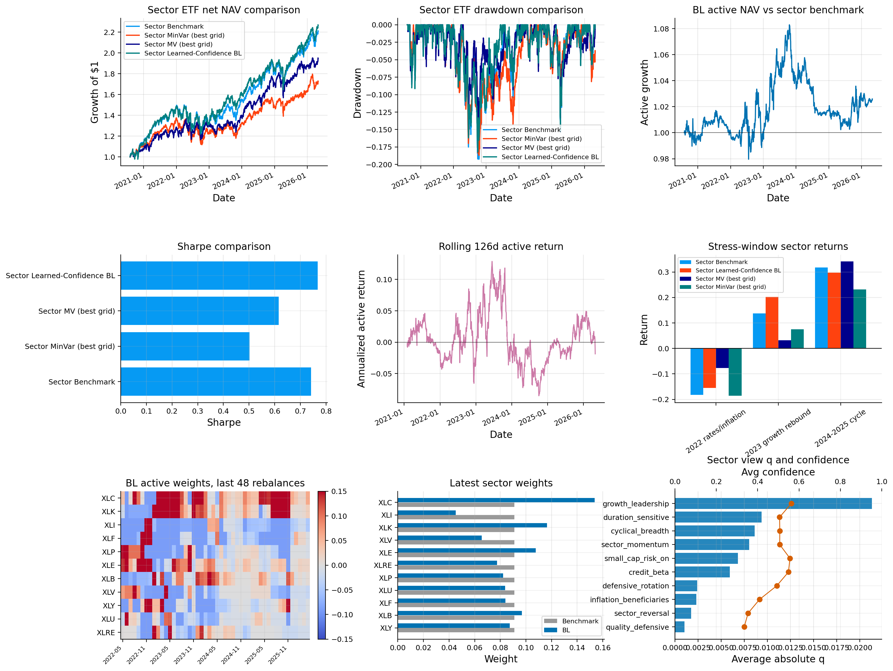